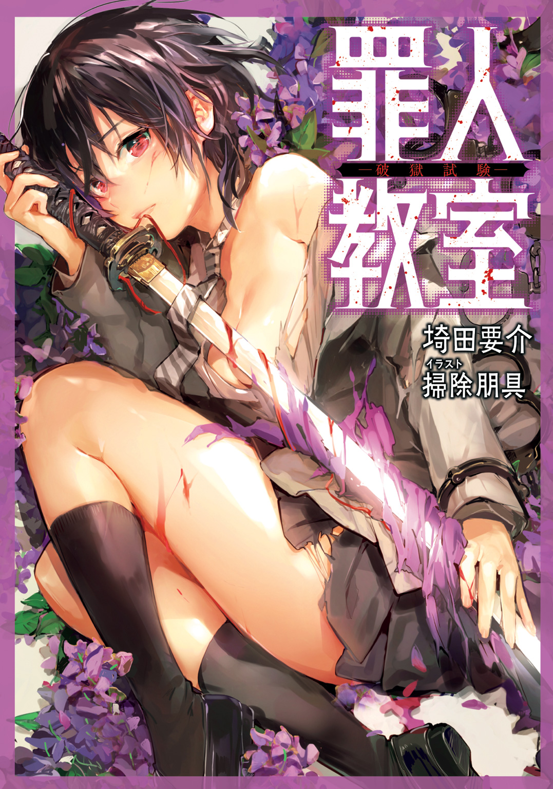
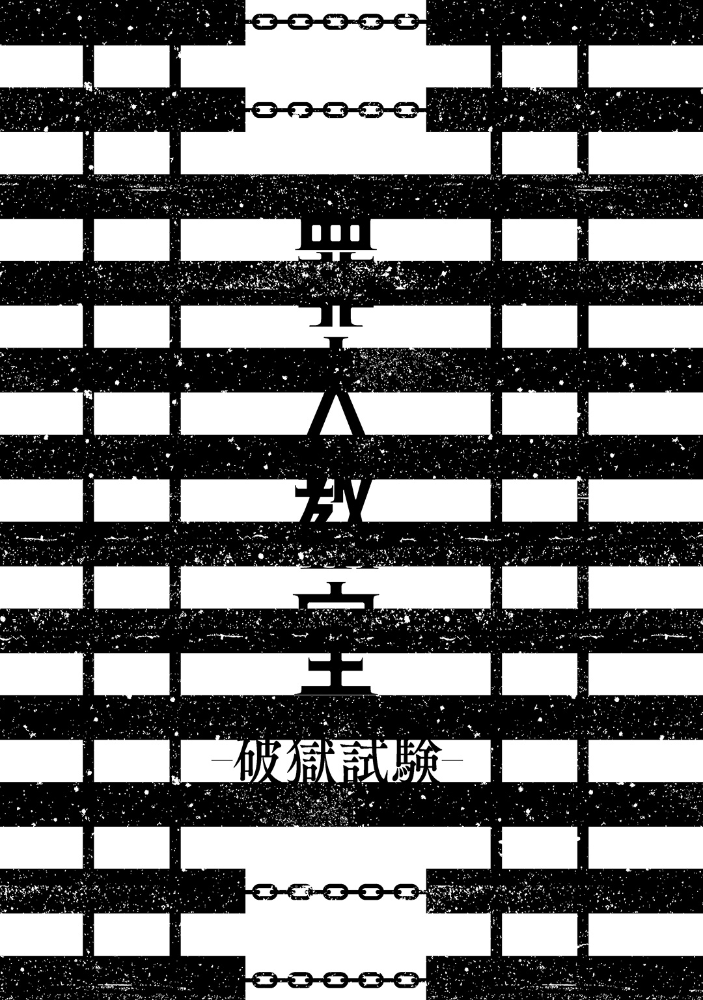

| 罪人教室 ―破獄試験― | |
| 埼田要介 | |

この本は縦書きでレイアウトされています。
また、ご覧になる機種により、表示の差が認められることがあります。
CONTENTS
この作品はフィクションです。実在の人物・団体・事件などには、いっさい関係ありません。
教室の中は水を打ったような静けさだった。
咳一つ衣摺れの音一つがいちいち耳に障り、遥か遠くに聞こえる他クラスの平穏に彩られた喧騒とのギャップに、もしやここだけ別位相の空間に飛ばされたのだろうか、と荒唐無稽な錯覚を起こす。
五月半ばの麗らかな陽光は格子付きの窓から際限なく降り注ぎ、床に縦縞模様の影を落とす。本来ならば眠気に誘われ、くあ、と小さな欠伸でも零したいところだが、実際の俺はあまりの寒気に鳥肌が総立ちであった。はて、まだ冷房にはちと早いと思うが。
元凶は明白である。
息が白むほどの冷気を発しているのは、俺の席の真ん前に仁王立ちする委員長、八重梅規理である。
彼女は黒髪をボブ気味に切り揃えた大和撫子風の涼やかな美貌を更に冷たくし、片手に藤色の竹刀袋を、もう片方の手にＡ４サイズの紙をひらつかせて、春真っ只中の時期でも零下を叩き出す勢いの凍てついた眼差しを、席に座ったまま恐縮する俺にぶつけている。
しばらくして、八重梅がすっと俺の眼前に、手に持った紙を突きつけた。
その正体は、先ほど抜き打ちで行われた小テストの答案である。解答欄には不正解のチェックが連なり、一番下に無得点を意味する楕円が大きく赤ペンで記されていた。
簡潔に述べれば、委員長である彼女は、たかが抜き打ちテスト程度で零点を叩き出したクラスメイトの不真面目さに心底業を煮やしているのである。
だが、ここで答案用紙の記名欄に注目して頂きたい。そこには俺の名前である『平桔平』ではなく、俺の後ろの席に座る『菊菱遊』という少女の名が角ばった字体で記されているではないか。
つまり、これは俺の答案用紙ではないのだ。
彼女は先月不登校から復帰したばかりの、色素に乏しい髪と小柄な体軀、感情味に欠けた顔つきの少女なのだが、そんな菊菱が授業後にこそこそと答案を隠す姿を八重梅が見咎め、その後八重梅が菊菱本人ではなく、俺の目の前に無言で立ちはだかって、この緊張状態が発生したのであった。
さて、お分かり頂けたであろうか。
一連の流れの中で意味不明な点が一つ。
どうして、菊菱遊の答案を見て、八重梅は本来無関係である俺に怒りの矛先を向けているのだろうか。
その疑問に答えるように、八重梅が口を開いた。
「――監督不行き届きという言葉を知っているかしら、平君？」
静かだが明確な非難の意思をこめた問いかけが俺に突きつけられる。
「監督不行き届き......ですか？」
相手は同級生であるにもかかわらず、俺はえらく下手に出た恭しい態度で尋ねる。すると八重梅は満足げにゆっくりと頷いた。
「ええ。あなたはこの教室において菊菱さんの保護者にあたるのでしょう？」
「ええと、それは......」
『でしょう？』なんて言われても困惑しかない。俺はぎこちない動きで真後ろに首を巡らせる。
俺が保護すべき対象となっている菊菱とやらは、すでに我関せずとばかりにぼんやりと虚空を見つめていた。よく愛らしい容姿の女の子を「お人形さんみたい」と褒めるが、今の彼女は人の情を失くした人形そのものだ。
菊菱が不登校から復帰するにあたってこの俺が説得役を務めたのだが、どこをどう間違えたのか、俺は彼女の受ける被害を全て代理で受け止めるという内容の言質を取られてしまった。てっきりその場限りの冗談だろうとあまり深刻に受け取ってはいなかったのだが、それ以来彼女が問題を起こす度に俺にお鉢が回ってきて、己の危機的な立場を認識するに至ってから三日三晩眠れぬ恐怖に苛まれたのも記憶に新しい。
そして今回もご多分に漏れず、委員長八重梅規理は、菊菱が最低点を取ったのは俺の責任だとして、こうして答案用紙を差し出しながら責任を問うているのである。
だが、今までは律儀に代理に甘んじていた部分はあるものの、さすがにこんな紙切れ一枚までこちらのせいとなるのはあまりに理不尽だ。俺は八重梅の目を見据えて、なけなしの勇気を振り絞って平素の口調で意見を試みる。
「いや〜、でも勉強面についてはこっちからアプローチできることは限られてくると思うし、そもそもお前個人に悪口雑言をぶつけたとかならともかく、こういった点でも俺に非があるってんならもうどうしようもないというか」
「何グジグジと女々しく言い訳を連ねているのよ。男なら一度した約束はちゃんと守りなさい。そうやって反論を言い募っている間に、頻出単語の一つでも菊菱さんに教えてあげられたのではないのかしら？」
「............」
良心の欠片もない正論を叩きつけられ、俺はぐうの音も出なかった。こうなってしまった委員長相手には、どんな理屈も通用しない。彼女の纏う空気は、自分の意に沿わぬ対応は即一刀に伏す、という無言の脅迫に満ちていた。
そして続けざまに、彼女は氷点下の声音で斬りかかる。
「平君は十分に承知しているでしょうけど、私は委員長として日頃から全員の動向に細かく気を配って、一挙手一投足に目を光らせているの。その労苦に比べれば、あなたはたった一人をサポートしてあげるだけでいいのだから随分負担は少ないと思うのだけれど、現実はコレだから、まったく救い難いと言う他ないわ。なるべく口にするべきではない言葉だけど、正直あなたを斬り殺す......いえ、ＫＩＬＬ殺したい気分よ」
「前も指摘したかもしれないけど、ＫＩＬＬに殺すって重複表現じゃ」
「文句ある？」
「......ないです」
研ぎ澄ました刃のような光を宿した瞳に、ささやかな抵抗もバッサリと斬り伏せられて、ようやく俺はわずかに顔を背けることができた。
助けを求めるように動かした視線の先には、これまた異様な景色が広がっている。
隣りの席に座る鳥居笹千流は、その優しげな顔立ちに困ったような表情を浮かべていた。こちらと目が合い、残念そうに小さく首を振ると、肩口まで伸びる栗色の髪がふわりと揺れた。
その向こうには軽薄そうな茶髪の弦巻藤吾がへらへらとした様子で成り行きを見守っている。机を挟んで弦巻の差し向かいに座るニット帽と目の隈が特徴的な巴求真も、腹立たしいことに薄汚い笑みを浮かべてとても楽しそうにこちらを眺めている。
そして最後に、俺はこのクラスにおける最大の脅威である人物にピントを合わせた。
人性悪乃。
長い金色の髪が眩い彼女は、スラリとした脚を組んで苛立たしげに足先をブラつかせる。足下から視線を上方向に滑らせていくと、引き締まった腰回りと豊満な胸元を通り過ぎた先に、精緻な美貌が台無しのしかめ面があった。
まるで世界の全てが気に食わないと言わんばかりに眉間に皺を寄せ、チッチッとスズメバチの威嚇音のように舌打ちを繰り返す。多分、説教モードに入った八重梅に苛立ちを募らせているのだろう。あっちもあっちで緊迫感があるんだよな......。
寒風吹き荒ぶ凍土に噴火寸前の活火山。
俺は八重梅の怒りを気にしつつも、心の中で最悪の事態が起こらないよう祈る。
「そもそも菊菱さんがどうこう言う前に、あなた自身は学校という場所が何をするところなのか、きちんと理解しているのかしら？」
黙り込んでいるこちらに向けて、八重梅が別の方向から切り込んできた。教育制度の根本に踏み込む問いである。安易な返答は危険だ。
「勉強を......するところ、だよな......」
彼女の顔色を窺いつつ、こちらが辿々しく答えると、
「あら、よく分かってるじゃない。けれどそれを大事なクラスメイトにもきちんと教えてあげられないのなら、折角のお言葉も空虚に聞こえるというものね」
八重梅は涼しい顔で答案用紙をひらひらと揺らす。
「うぐぐ......」
もう俺は苦悶の呻き声を漏らすことしかできない。
ちょっと待ってくれ。どうして後ろの席の女子生徒の答案一つで、ここまで責め苦を味わわなくてはならないのだ。それにもし百歩譲って俺に非があるのだとしても、もうこっちは事実上の敗戦状態じゃん。十分に反省の色も見せてるしさ。この辺でなあなあな感じで見逃してくれよ。粘着度がもう委員長じゃないよ。バイト先の嫌味な上司レベルだよ。
「うぐぐ、じゃなくてきちんと言動で示しなさい。謝罪すらまともにできないの？ そんな不明瞭な振る舞いを菊菱さんが真似したらどうするの？ そういう煮えＫＩＬＬない態度が一番腹立たしいのよ」
反省を曖昧にしたまま終わることを許さない八重梅は、竹刀袋をカチャリと鳴らす。竹刀袋といっても中に入れられているのは竹刀ではない。紛うことなき真剣である。
完膚無きまでに打ちのめされて、すっかり貝のように押し黙った俺に、彼女は更なる追撃を加えてくる。
「どうやら、あなたには責任感というものが欠如していると断定せざるを得ないようね。......だったらこちらから一つ提案があるわ」
「提案......？」
俺が不安げに訊くと、八重梅は一転して少女らしい明るい笑みを浮かべた。
「ええ。平君がより意識的に菊菱さんに助力するように、これからはテストで菊菱さんが一点ミスを重ねるごとに、平君の指を一本ずつＫＩＬＬ落としていくわ。とてもいい案でしょ？」
「最悪の発想だ!?」
最高の笑顔で悪魔的な発言をする委員長だった。
「それに、その方式だと二〇点ミスった時点で両手足の指全滅じゃねーか！」
「あら、こちらが言わずとも足の指まで計算に入れるなんて流石ね、平君。でも安心して、指といっても関節ごとに切断するつもりだから全滅までには得点に余裕があるわ」
「それを聞いて何を安心しろと!?」
世にも恐ろしい計画を嬉々として語る彼女にツッコミつつ、俺は一つの疑問に駆られていた。
ここ最近の八重梅は、明らかに変だ。
いつもの彼女はごく真面目で、少々怒りっぽく融通のきかないところがあるものの、ここまで執拗に攻撃してくる性格ではない。小テストの結果が振るわないくらいなら、一言二言冷たく注意するだけだ。
一体何が原因でこうなってしまっているのだろうか。
とにかく、普段は波風立たないよう温厚にしている俺にも我慢の限界ってものがある。
俺は八重梅の独演を止めるべく、颯爽と立ち上がり「異議あり！」と高らかに主張する。イメージの中で。そして君臨する委員長を見事ダンガンロンパし、菊菱にもこれからは真面目に勉学に励むことを約束させてハッピーエンド。妄想の中で。俺は微動だにせず冷や汗を垂らし続けている。これが現実。......つまり、何もしていなかった。
いや〜、だってぶっちゃけ、今の八重梅さん恐ろしすぎるんスもん。普段の倍以上の冷酷さッスよ。マジぱねース。
えっと、それじゃあ気を引き締めて、本格的にどうしよう......。
何か言い返してやりたいけど、このタイミングで俺が反発すれば次に起こる悲劇は目に見えている。俺は『平桔平』という名の平凡な男子高校生だったバラバラ死体と化すだろう。
そんな風に対応に困ってグジグジしていると、
「......ドントスピークエニーモアー、ファッカー！」
机が、宙を舞った。
とうとう堪忍袋の緒が切れた人性が、自分の机を八重梅に勢いよく投げつけたのだ。
華麗な放物線を描く学習机は中身を撒き散らしながら、弾圧を続ける委員長の脳天目掛けて位置エネルギーを運動あるいは破壊エネルギーに変換していく。
だが八重梅は頭上の脅威を一顧だにせずに、藤色の竹刀袋に手を添える。すると超高速の抜刀術が炸裂し、机は真っ二つになって彼女の両脇をすり抜けた。
「ぐべぇ!?」
その片割れが、俺の頭を直撃した。
業界ではお約束や定番と言われる、純然たる巻き添えである。
強烈な一石、もとい一机を投じた金色の怪物は、自分の机があった場所にゆらりと佇んでいた。
......もしかして、俺が一方的に責められる姿を見かねて助けてくれたのか？
「おいスパ子。クソ平のことはどうでもいいんだが、いい加減長くて、クドくて、しつこいんだよ。うぜえとは日頃から感じてたが、ここ最近は一段と目に余る堅物っぷりだな。クソ平はほんとどうでもいいけど」
違った。ただ単に八重梅が気に食わなかっただけのようだ。
「......金色生ゴミさん。懇切丁寧に勉学の大切さを説いていたところに勉強用具を投げつけるなんて、あなたにしては気の利いた挑戦状ね。丁度いいわ。あなたは平君が終わってから注意しようと思ってたけれど、こうなったらあなたから先に――ＫＩＬＬ」
人性の殺気に応えるように、八重梅も俺の席から離れて例の口癖と共に臨戦態勢に入る。
......最悪の展開だ。こうなってしまっては穏便な解決など望むべくもない。
「おいお前ら、あの二人を止めに......」
見ると、弦巻、巴、鳥居笹、菊菱の四人はすでに机の下への避難を済ませている。災害時には迅速な対応を心がけましょう。
「よし桔平ちゃん。俺たちの準備は完了した。後は任せたぜ」
「いや、任せたって何を......？」
机の下でグッと親指を立て爽やか笑顔を向ける弦巻に、俺は素朴な疑問を投げた。
「決まってるじゃないですかぁ、交渉ですよ。こういう役目は平さんが適任なんですから。へへへ、僕は信じてますよ」
俺の言葉に、弦巻と同じく机の下で卑屈に微笑む巴が答えた。『信じる』とは、ここまで薄っぺらく響く単語だっただろうか。
「大丈夫。怪我したら私が介抱！ してあげるから。本当だったら私も桔平君と一緒に立ち向かいたいけど......でも、もし大怪我しても、私が介抱！ するから」
鳥居笹の方はやたらと張り切った様子だ。縮こまって体育座りするその可憐な姿に一瞬、妖精さんかなと勘違いしてしまったが、どうやら騒動後の介抱が目的らしく、いつも通りの悪質ぶりで、逆に安心した。
「............」
そして騒動の発端である菊菱は机下に収まりながらも携帯ゲームに夢中であった。この少女には勉学以前に良識というものを教えてやるべきだ。
ええい、こうなれば致し方なし。
俺は覚悟を決めて一触即発の現場に一歩足を踏み出す。そして机の下の四人は災害用ヘルメットを着用して......ちょっと待って。それどこに隠し持ってたの？
俺は文句を言いたいのも我慢して、最恐コンビに和平交渉を試みる。
「おい八重梅、人性。お互い冷静になれよ。なんでもかんでも暴力で解決すうおおお！」
割れた床の破片が俺の耳元を掠めていった。
どうやらすでに戦争は勃発していたようだ。
細かい描写は割愛するが、八重梅は冷たい眼光を放ちながら刀を振るい、人性は獅子のように吠えながら拳を振るう。両者は周囲の被害も気にせずに鎬を削っているので、着々と教室内には瓦礫の山が築かれていく。簡潔にいえば、もう滅茶苦茶だ。ああ、八重梅の異変を別として、こんな絶望的光景をすっかり日常として受け入れている自分が嫌になる。
「あ、あちゃあ〜......。なんかとんでもないことになってるね......」
教室の入り口付近から細〜い声がしたので振り向くと、開いた扉から半身を出して教室内の様子を窺う、気の弱い若手社員風の男の姿があった。
「あ、あなたは！」
俺が驚き混じりに言う。
「以前俺の家に空き巣に入って通帳と印鑑を盗み、強制的に連続強盗殺人事件に巻き込んだ挙句、結局その金を使いきって平謝りしまくった、菊菱遊の実の兄にして俺たち二年Ｄ組の副担任。ろくに出世もできなそうな一生『ただの良い人』止まりの菊菱忍先生！」
「えと、平君は急にどうしてそんな嫌な人物紹介をしたのかな......」
年下の俺に悪意たっぷりに説明されても腰の低い忍先生。だが撤回はしない。前回の恨みを俺は忘れたわけではないのだから。
「私は桔平君にとって一生『都合の良い女』だからね！」
机から出てきた鳥居笹が、腰に手を添え、人差し指を立ててふんわりと宣言する。
「......お前は自分の幸せを摑んでくれよ」
彼女の哀しい決意に俺はなんとも言えない気分に陥る。これももうお馴染みの展開だ。
「いや〜、桔平ちゃんは本当に幸せもんだね〜」
「そう言いながら俺のポケットから財布を盗み取ってんじゃねえぞ、弦巻」
俺はいつの間にか隣りに立っていた弦巻を睨みつけた。
「へへへ、そういえばネットの地方掲示板で『昔クラスにいたキモい奴』なんてタイトルと共に平さんの名前があったそうですよ〜」
「唐突に不安になるような噓を言うな、巴」
巴にも、同じく険しい視線をぶつける。この二人の厄介ぶりも相変わらずだ。
「......そのネタ、私が見つけた」
「マジで!?」
菊菱の一言で巴の情報がいきなり信憑性を増した。ちょっと待てお前......この厄病神コンビの仲間入りを果たすつもりか。
ちなみに、そんなやり取りをする間も、八重梅と人性の戦闘は依然として継続中。
「そ、それじゃあ、次の授業を始めたいんだけど......」
勇敢にも忍先生がへこへこしながら教壇に立つが、実の妹含め誰も聞く耳など持ちはしない。
「えっと......授業を......」
徐々にか細くなっていく忍先生の声を聞きながら、俺はただぼんやりと教室が荒廃していく様を眺めていた。
なんとこの大騒ぎ、まだ一時間目の休み時間の出来事である。
......今日も一日が長いぜ。
私立昏忌高校。
某県の中心部に位置し、近年急速な発展を遂げる昏忌市内に創設されたこの高校。
一見何の変哲もない普通科高校だが、その実態は、全国から『犯罪者予備軍』と認定された学生を集め、高校生活を通して個々の犯罪的特性を制御し活用しつつ、一般社会に適応できるよう育成するという前代未聞のプロジェクトの下に運営されている、破天荒極まる学校である。
そしてその教育プログラムの一環として、犯罪者予備軍を『普通』に慣れさせるべく、一般人代表としてこの俺が、もっとも危険な生徒たちが集まるＤクラスに半ば強制的に転入させられたのだ。
そこに在籍していたのは、ある意味では本物の犯罪者も顔負けの、六人の最凶犯罪者予備軍。
スリ予備軍、弦巻藤吾。
人斬り予備軍、八重梅規理。
詐欺師予備軍、巴求真。
ストーカー予備軍、鳥居笹千流。
ハッカー予備軍、菊菱遊。
大量殺人者予備軍、人性悪乃。
入学早々から彼らのきつい洗礼を受け、予想外のトラブルにも見舞われたが、雨降って地固まるのたとえの如く、俺は転入から一月の間に、多少なりともこの二年Ｄ組の問題児軍団に対する理解と耐性を身につけてきたと自負している。
そして暦は五月半ば。
全国の高校生がほぼ総じて嫌悪感を抱く学園イベント。
――中間試験が迫っていた。
その日の授業を終え、俺たちは学校近くのファミレスで勉強会を開いていた。なかなか一般の高校生らしい集団行動である。
だがメンバーが尋常ならざれば、決して一般的なイベントで済むわけがなく。
「平さんは飲み物どれがいいですかぁ？」
空いたコップを持って席を立った巴が、不気味に口元を歪ませながら尋ねてきた。
「コーヒーとコーラを何対何で割りますか？」
「勝手に俺が得体の知れない飲み物を求める前提で話すんじゃねえ。普通にコーヒーで」
俺は教科書とにらめっこしながら答えた。
「分かりました。ただこの店のドリンクバーはコーヒー類は別料金なので、二〇〇円いただきますよ」
「そうなのか？ だったらコーラでいいよ」
「え〜、今コーヒーって言ったのに〜？ 二〇〇円くらいケチケチしないで下さいよ。僕が平さんに飲み物を持ってくる気分でいられるのは今しかないかもしれないんですよ？」
「............」
かなりイラつかされるが、こいつとの下手な押し問答は害にしかならないことは知っているため、俺は渋々陰気な小男に小銭を手渡した。
巴は「へへへ」と、やたら耳障りな笑い声を残してドリンクバーへ向かう。
すると入れ違いで鳥居笹がビアガーデンの店員よろしく、大量のコップを俺の前にどんと置いた。
「はい、桔平君。どれがいい？」
並べられたコップの中身は一つとして同じ飲料はない。彼女のことだから、きっとドリンクを選ぶ楽しみも兼ねて全種類の飲み物を用意してくれたのだろう。......愛が重いぜ。
ストーカー予備軍である彼女はひょんなことから俺に恋心を抱き、個人情報を事細かに収集して、こちらが申し訳なくなるほどに奉仕してくるのだ。
「えっと、アイスコーヒーかな」
苦笑いしながら俺はコップの一つを指差した。
ただ、コーヒーは別料金ではないのか？ ......あの根暗詐欺師め。
小銭を騙し取られたことに心の中で舌打ちしていると、鳥居笹はパアッと明るい表情で、
「分かった。それじゃあそれ以外は私が飲み干すね」
「......じゃあ、それ以外も飲むよ」
「ええ！ ......それってもしかして私と、馬鹿ップルが一つの飲み物を二つのストローで飲むあれをやってくれるってこと？」
「......馬鹿ップルが一つの飲み物を二つのストローで飲むあれは............やらん」
馬鹿ップルが一つの飲み物を二つのストローで飲むあれを鳥居笹としている図を想像し、「ありじゃね？」と俺の欲望が囁くが、もし安易な気持ちでやってしまったら、妙な既成事実が生じてしまい、今後の関係に差し障る。葛藤の末、俺は馬鹿ップルが一つの飲み物を二つのストローで飲むあれを断念した。
あれ、名前なんていうんだろ？
「ああ、桔平ちゃん。シャーペンの芯借りたから」
「え？」
鳥居笹に意識を向けていると、弦巻が指先でつまんだ芯棒を見せつけてくる。まさかと思い、俺は手に持ったシャーペンをカチカチとノックするが、見事に芯だけが抜かれている。幾度も被害に遭ってはいるが、いつ見ても嘆息すらしてしまう超絶のスリ技術だ。
「細やかな嫌がらせは止めろよな......」
「怒んなよ、桔平ちゃん。俺と桔平ちゃんの仲っしょ？」
シャーペンを芯だけ盗み取るのは、一体どんな仲だというのだ。
「ファック！ こんな暗記問題だりーだけなんだよ！」
いきなり怒号を発した人性に、瞬間的に肝を冷やした。
先ほどの一件で普段以上にご機嫌斜めの彼女は、英単語のカードを憎々しげに見つめて鉄製のスプーンを握りつぶした。店員さん、ごめんなさい。
「なあクソ平、こんなチマチマしたもん覚えるより洋画一本垂れ流しにして見た方がタメになると思わねえか？」
「......うん。仰る通りだと思います」
無茶な要求だと思いつつも、下手に反論できない。
人性という女はその細身に似合わぬ膂力も手伝い、八重梅と並ぶクラスの要注意危険人物とされている。寧ろ破壊衝動を制御する気もない分、より問題児扱いされている生徒だ。口答えの一つ二つしようものなら、数週間の入院生活を余儀なくされる危険性は大だ。
この集団勉強会は本日で四日目を迎えるのだが、一回目を開催したカラオケ店ではこの人性が隣りで洋楽ラップを出鱈目に歌う若者グループの部屋に入り込んで暴れ回り、二回目の某有名コーヒーチェーン店では人性好みのハリウッドアクション大作を否定的な見解で語る批評家気取りのおじさんに人性がコーヒーをぶち撒け、三回目は趣向を変えてメイド喫茶に行ったものの、何故か鳥居笹がフリル付きエプロンを完璧に着こなして接客をしていて......あれ、それはオッケーじゃない？
ともかく、一般市民の方々に大迷惑をかけ続けたおかげで様々な店舗から出禁を食らい、とりあえず今回は平凡なファミレスにて試験勉強を進める俺たちであった。
しかしそこには「あれー、テスト範囲どこだっけー？」とか「やっば、絶対赤点だわー」だのと愚痴り合いながらも何だかんだで真面目に取り組む学生の姿はない。皆が皆、一般人代表である俺に何かしらの形で絡んでくるのであった。
犯罪者予備軍というのは、勉強会一つもまともに行えない人種のようだ。
だがかくいう俺も、決して単なる普通人というわけではないと、Ｄクラスの担任で、理知的な眼鏡美人の柊瑞穂先生は語る。
彼女によれば、俺は綿密な調査の結果、普通すぎるほどに普通であることが判明したらしい。周囲の耳目を集めることを生理的に受けつけないという俺の性格も手伝っているのか、俺は何をどう頑張っても平凡な成績、平凡な印象で終わってしまうそうだ。
謎の性質の由来は未だ不明だが、つまり今回の中間試験もどれだけ勉強しようがしまいが、平均点を前後するだけのオチになるだろう。結果が分かっている努力。なんだかやるせない気分になる。
「............」
俺はノートに重要単語を書き連ねながら、隣りに座った小柄な女子を横目で見る。
八重梅に叱られた俺の心労も空しく、菊菱遊は何くわぬ顔で携帯ゲーム機での娯楽に興じていた。
「菊菱、真剣にやらないと次こそ八重梅の怒りの矛先がお前に向くかもしれないぞ？」
しかしこちらの警告など完全に聞き流して、彼女は一心不乱にゲーム機を操作している。
「遊ちゃん。今はゲーム禁止だよ。集中する時は真剣にやらなきゃ」
「......分かった」
鳥居笹が優しく諭すと、菊菱は素直に従った。ほんわかとした柔らかな口調が効いているのか、もしくは俺がとことん舐められているのか......せめて両方であってほしい。
実力は未知数だが、ハッカー予備軍である菊菱遊は通信機器の類を持たなければ、無害で貧弱な少女である。そのため、個としては並々ならぬ危険度を持つクラスメイトに怯えたが故に不登校になってしまったのだが、復帰してからは、普通人である俺と、外面はふんわり美少女である鳥居笹に対しては一定の信頼を置いてくれている。俺に関しては、使い勝手のいい駒とすら考えている節があるが。
「じゃあ遊ちゃん。一緒に国語のお勉強しよっか」
「了解」
鳥居笹はまるで子供と接するお姉さんのように菊菱に勉強を促す。俺に対する偏愛さえ無ければ、彼女も普通の美少女なのだが......。
「では次のことわざの意味を答えてね。飼い犬に手を嚙まれる」
「ボケナメコの胞子でピクミンが暴走すること」
「将を射んと欲すれば、まず馬を射よ」
「ファントムガノン戦の前半」
「三つ子の魂百まで」
「ポケモンの最初の三匹」
......どうして全部ゲームネタで答えたんだよ。それに三つ子の魂って、三匹って意味じゃないから。
連発される珍解答に、さすがの鳥居笹もふんわりした表情に困惑の色を隠せない。
「うーん、全部任天堂関係じゃちょっと分かりづらいかな？」
「じゃあカプコン作品も入れる」
「えっと、そういうことじゃなくって......」
「？」
菊菱は何が間違っているのか分からない様子で小首を傾げる。それがまた母性をくすぐる幼気さを演出するので、強く言い聞かせられないのがもどかしい。
「でも遊っち、意外にも意味はちゃんと理解してるね。少し答え方を変えれば、すぐ高得点取れるんじゃない？ あくのんにしたって真面目に取り組んでないだけだし、こりゃ桔平ちゃん、まさかのビリ確かもねー」
弦巻が勝手にクラス順位を予想するので異議を唱えようとするが、存外的外れではないことに気付いた。茶髪男の言う通り、今の問答を解析してみれば、決して菊菱は勉強が不出来なわけではない。
となると、俺は勉強する気ゼロの人性とデッドヒートを繰り広げることになるのだろうか。それは嫌だなあ......。
「平さ〜ん、飲み物お待たせしました〜」
今頃になって巴が、ドリンクバー展と化したテーブルの上に、黒い液体をなみなみと注いだコップを置いた。多種多様なドリンク群の中で凶々しい邪気を漂わせている謎の飲み物を目の当たりにして、俺はごくりと唾を飲む。
「......これ何？ ブラックコーヒー？」
「猛ど......烏龍茶です」
「今猛毒って言いかけなかった？」
「いえいえ、モード系って言いかけただけですよぉ」
「このタイミングでモード系と言う必然性がないだろうが」
実年齢より多少年下に見えてしまう詐欺師予備軍の小男は、愉快そうにこちらの反応を観察している。巴求真は、物理的な害はないが、悪質な噓をついたり、他人の噓を何でも見抜く技能を持っていたりと、油断ならない生徒なのだ。後者の能力については、何故か学校側には秘密にしているらしいが。
そんな大噓つきが烏龍茶だと呼ぶ飲料を、そのまま文字通り鵜呑みにすることができるだろうか。答えは否。俺は、淀んだオーラを纏う黒色の汁を警戒心たっぷりにすっと遠のけた。
「烏龍茶頂き」
「「あ......」」
コップから距離を置いた矢先、にゅっと菊菱が華奢な腕を伸ばし、無謀にも黒汁を一息に呷る。予想外の闖入に俺も巴も対応が遅れてしまった。
「......う」
怪しげな汁を飲み込んだ菊菱が、びくんと反応する。......大丈夫なのか、おい。
「......黒烏龍」
「烏龍茶かい！」
変に危機感持って損した。巴はただ真実を述べていただけらしい。
「へへへ、当たり前じゃないですかぁ。僕はいつだって人畜無害ですよ〜」
「ははは、やっぱ桔平ちゃんは期待通りのリアクションしてくれるね！ いやー面白い！」
弦巻も巴と一緒になって嘲笑する。毎度毎度、鬱陶しい悪ノリコンビである。
「......でもこんなに楽しい勉強会なのに、どうして規理ちょんは来ないのかな？」
ひとしきり笑った弦巻が、鳥居笹が運んできたドリンクをちびちび飲みながらぼやく。
そう。このクラス全員参加のはずだった集まりには、あの大和撫子委員長の姿が無い。彼女は俺たちが誘うと「勉強は一人でするもの」と断って急ぎ足で帰宅してしまうのだ。
「知らねーよ、スパ子なんざ。あいつ試験前はいつも目障りっぷりが増すよな」
ぴしゃりと単語カードを机に叩きつける人性に、弦巻が口を尖らせながら言葉を続けた。
「うーん、ようやく打ち解けてきたと思ったんだけどなー。あのピリピリ感は手の打ちようがないのかなー」
Ｄクラスの人間関係は以前、険悪よりも更に酷い、隔絶の状態にあった。しかし俺が転入して事件に巻き込まれ、クラス全体で解決に取り組んだことで、多少なりとも閉塞した人間関係に変化が見られるようになってきたらしい。
「......八重梅は前もああだったのか？」
「うん。中間期末とか、直接成績に影響が出る系が近付くと毎回あんな調子。どうも頑固さに磨きがかかった上に、不機嫌丸出しになるっちゅーかね」
なるほど。ここ最近、妙に八重梅が神経過敏になっていると思ったら、元からいたメンバーにとっては珍しくない現象のようだ。
しかし個人的な見立てによれば、あれは不機嫌というよりは......、
「――切羽詰まってるって感じだよね」
鳥居笹がコップの回りについた水滴を見つめながら、心配そうな表情で俺の見解を代弁してくれる。
八重梅もクラスをまとめる代表としての責任を背負っているのだろう。それにしたって午前中のくどくどとした説教といい、神経質になりすぎている。周囲の迷惑はともかく、彼女自身、試験の度にあれほどストレスを溜めていては、いずれ限界を迎えてしまうのではないか。
「あーあ、だる。あたしそろそろ帰るわ」
人性はにべもなく言い放って席を立つと、自分の代金を置いてさっさと店を出ていってしまう。本日は店舗の全壊もなく、一難去った思いだったが、退出する歩調はいつもよりわずかに忙しなく見えた。
「あくのんもちょいピリついてるみたいだね。......ま、俺たちがここで規理ちょんのことを案じてたって詮無いことか」
弦巻も「じゃあそろそろ」と告げると、他の三人も続いて鞄を取って帰宅の準備を始める。結局勉強らしいことはほとんどできていないが、教科書と向き合う気分でもなくなってしまったのだろう。
まだ座って教科書を眺めていた俺に、帰り支度をする鳥居笹が話しかけてくる。
「私も帰るけど、桔平君はどうする？」
「俺はもうちょっとここでやってく」
「そっか。じゃあ私は桔平君の家で夕飯作って待ってるね」
「......自宅に帰れよ」
俺が溜め息一つ返すと、Ｄクラスの面々はぞろぞろと帰路に就いた。
それから、黙々と授業内容を復習すること十分。
俺はコップを取ってドリンクバーに向かう。緑茶を注ぐと、とある席へ足を向けて、ゆっくりと彼女の正面に腰を下ろした。
「............」
清楚な白ワンピースに身を包みハイソなサングラスをかけた、どこか深窓の令嬢めいた装いの八重梅規理がそこにいた。
彼女は接近したこちらを認識すると、バツが悪そうにストローでジュースをズズズと飲み干した。
「......気付いてたの？」
「少し前にな。どうしてこっち来なかったんだ？」
「だって......学校帰りの買い食いは禁止されているし、委員長としては......」
俺はただ黙ってもじもじと弁解する彼女を見つめていた。
実は八重梅はこの数日間、俺たちが店に入った後からこっそりとやってきていたのだ。多分、そのことを知るのは俺だけである。
無言の対面に耐えられなくなったのか、八重梅はぽつりと本音を吐露した。
「......ちょっとだけ、怖かったの。横暴に振る舞う私を、みんな嫌っているのではないかと思って......元々敵対してる人性さんを除いて」
「たしかに全員、お前の異変は感じ取ってたけどな。でもきっと軽蔑なんかしてないと思うぞ」
八重梅を安心させるためのフォローを入れるが、彼女の表情は一向に暗いままだ。
「私、どうしても止められないの。前々から酷かったとは思うけど、試験日が近付くにつれ、ＫＩＬＬやすくなってきていて」
サングラスの向こうの目が、かすかに細められた。
些細なキッカケによって引き起こされる憤慨。逆上。激昂。
我慢と己に言い聞かせることは簡単だが、現実には膨れ上がった感情が制止を促す理性を容易く押しのける。きっと、彼女がクラスで一番その不安定な情緒に苦しめられているのだろう。
一瞬、どう返答すべきか迷った。
彼女の深い事情を知らなければ、軽はずみに助言すべきではないと思う。だが普段から彼女が自分の特性と真剣に向き合って制御しようと努めていることも理解している。だから、せめてほんの少しでも安心させてあげようと思った。
「試験が終われば多少は落ち着くだろ。それまではみんなも我慢してくれると思うぞ」
「......そうかしら」
なおも八重梅は力無い眼差しで、テーブルの一点を見つめていた。焦燥と疲労に心身を削られているその姿は、まるで枯れかけの花のようだ。
「ま、お互い頑張ろーや」
月並みな台詞しか出てこない己の平凡さが、歯痒かった。
そんなこんなでやってきた中間試験当日。
試験日程は二日間。半日ずつかけて基本の五教科の試験をこなしていく。選択科目はそれぞれ異なるが、Ｄクラスには七名しか在籍していないため、別の科目も同じ教室で行われる。
犯罪者予備軍の高校といっても授業自体は普通の高校と大差はない。よって試験内容も想像の斜め上を行くような意外性に富むわけではなく、ごく当たり前のペーパーテストが淡々と行われていった。
多分、一般と異なるのは試験を受ける当事者たちの反応だろう。
実は、Ｄクラスの人間は基本スペックが非常に高い。彼らは頭脳面においても優秀であり、成績が振るわない生徒に関してもあくまで学業に重きを置いていないだけなのだ。よって目を充血させながら「昨日完全に寝ちゃったわー」と嘯く輩や、「めっちゃ自信なーい」とお茶らけつつも、時折人が変わったように単語を口走る裏切り者とは思考体系が根本から異なる。
彼らは試験終了後の休み時間も、昨日放送していたＴＶ番組や絶賛公開中の映画の良し悪しなど、日常の話題をごく平然と交わしている。試験結果など眼中にないと言わんばかりだ。普通代表の俺の立場からすれば、この学校に来て一番と言っていいほど戦慄した瞬間でもあった。
頼む......。噓でもいいから「あの問題超ムズくなかった？」とか言ってくれ。
「平さ〜ん。問五の答え分かりました〜？」
お前には訊いてないぞ。詐欺師。
最終科目の試験終了のチャイムが鳴ると、重労働からやっとこさ解放された嬉しさに、帰り道に自分へのご褒美にパンケーキでも食べちゃおっかなー、などと二〇代半ばのＯＬ（偏見）みたいな思考が芽生える。カロリーなんて気にしなーい。
「平君。ちょっと来てくれるかしら？」
俺が自分の席でうーんと両腕を伸ばして凝った体を解していると、柊先生が教室の出口でちょいちょいと手招きしている。先生が現れると、心なしか教室内の面々が一様に堅い表情に変わった。
先生の下へ行くと、ついてくるように指示されて教室を後にする。
「先生、試験が終わったのにどうしたんです？ ......もしかして、今あいつらが少しだけ張りつめた雰囲気になったのと関係が？」
「あら、ご賢察。あなたには説明していなかったけど、彼らの試験はこれからが本番なの」
「彼らの？」
その言葉から次の展開は容易に予想できた。
「まさか、犯罪者予備軍専用の試験......みたいな？」
「その通り。察しが良くて助かるわ。これからあのクラスの生徒たちは個々の犯罪的特性に応じたテストを受けてもらうの。平君は一般人だから先に帰してもよかったんだけど、丁度いい機会だから少しだけ力を貸してもらおうと思って」
先生は廊下から階段を降り、俺もそれに続く。
「『個々に応じた』ってことは、俺が一人一人あいつらの相手をすることになったりするんですか？」
「いいえ。全員分に関わる必要はないわ。試験内容自体は、彼らがどれほど自分の力を制御できているかを診断するというものなのだけれど、今回は特別にたった一人、あなたに直接顔を合わせながら、個人面接をしてもらいたい人がいるの」
何の取り柄も無い俺が直々に面接......一体誰のことだろうか。
「あなたには、八重梅規理さんの面接官になってもらうわ」
少々意外な人物の名が出たので、俺は少し面食らった。
「八重梅......ですか？」
「あなたもここ最近のあの子の様子を知ってるでしょ？ 現状では、あの子がＤクラスで一番深刻な状態に陥っているわ」
「まあ、少し暴走気味ですけど......人性とかも十分問題児ですし」
「人性さんは自分の力を制御する気がないだけよ。だからこそ危険だとも言えるけれど......自分の特性を制御『しない』のと『できない』のとでは雲泥の差がある。個人的に、人性さんは凶暴だけど、決して一線を越えるようなマネはしないと思っているわ。でも反対に八重梅さんは些細なきっかけ一つで取り返しのつかない過ちを犯すのではないかと私は危惧してる」
「......確かに」
少し前まで人性は予告なしに導火線に火がつく爆弾めいた印象があったが、最近はキレ所も朧げながら見えてきて、接し方にさえ気を払えば案外付き合いやすい奴であるということが分かってきた。それにもし大暴れしたとしても、多大な物質的損害は免れないが、重傷者や死者は一度だって出したことはない。
それに対して八重梅は、常に周囲に警戒心を向けていて、とりわけ近頃はそれが顕著だ。加えて、一度理性が飛ぼうものなら、躊躇なく相手の命を断ちかねない冷酷さが発現する。何度か彼女に斬り殺されかけたことがあったが、よくよく思い返してみれば、その時俺は八重梅の酷薄な攻撃性に怯えると同時に、彼女が酷く脆い存在にも見えたのだ。
要は、普段からストレスを発散している人性よりも、溜め込んでしまっている八重梅の方が、現段階では不安要素であると先生は判断したらしい。
「でも、それならより専門的な知識を持った人が面接をするべきじゃないですか。どうしてただのクラスメイトである俺なんかが？」
すると先生は歩きながら悪戯めいた微笑みを作ってこちらを振り向いた。
「......あなた、気付いてないの？ 八重梅さんって平君と接してる時はいつも楽しそうにしてるのよ」
「楽しそう？」
試しに俺はここ一か月の記憶を掘り起こすが、八重梅が俺に対して好意的な態度を取った場面など一つも思い出せない。あれかな？ これからどうやってこの獲物を切断してやろうとか猟奇的な意味で楽しいってことかな？
「あんな洒落た誕生日プレゼントまで渡しておいて。......平君って結構プレイボーイなのかしら？」
「んなっ......！」
どうして先生がそれを知っている！ あの時は周辺に目撃者がいないことを厳重に確認しておいた筈なのに！
「いやっ、でもあれはっ、ほら......八重梅が刃物を持ってないと虚弱になる不思議体質だから、せめて日本刀じゃなく、ペーパーナイフとかで安心できるようになれば被害も減るかなって......」
赤面して狼狽えている俺に、先生は「まあ」とわざとらしい反応をした。
「本当だったの？ ちょっと探りを入れただけだったのに、結構な掘り出し物だったわ」
「......そういうの、やめてもらえません？」
どうやらカマをかけられたようだ。すまん八重梅。二人だけの秘密にしておきたかったのに。
話しているうちに、いつの間にか踏み入った記憶のない区域を歩いていた。窓は無く、照明の光も頼りない白壁の通路。吸い込む空気はどこか薬品臭く、鼻の奥をつんと刺激した。二年Ｄ組のクラスが三階にあって、先ほど階段を四階分下った憶えがあるので、今は学校の地下にやってきたことだけが理解できる。
不気味な雰囲気を紛らわしたいのと、先ほどの醜態を打ち消したいのと二つの思いで、俺はささやかな質問をしてみた。
「そういえば先生、前々から気になってる点があったんですけど」
「何かしら？」
「本当に今更なんですけど、例えば菊菱忍先生は空き巣『予備軍』なんですよね？ でもあの人は配属前にもう空き巣行為をしてるじゃないですか？ なのに罪に問われずに、未だに『予備軍』として扱われてるって変じゃないですか？ 他にも鳥居笹とか、現役でストーカーしちゃってるし」
「......そうね」
きもち声色に変化が加わった先生に向けて、俺は更に自分の考えを述べる。
「根本的な話題になりますけど、そもそも『犯罪者予備軍』って言い方が妙だと思うんですよ。先生が学校の概要を説明した時、『犯罪的特性は言い換えればその人らしい個性』みたいなことを言いましたよね？ だったら素直に『超絶異能集団』とかプラスなイメージを持つ名称の方が良くないですか？ 犯罪者って付けてる分、より後ろめたさが増して逆効果だと思うんですけど」
「............」
先生がいきなり足を止めて俺を神妙な眼差しで見据えた。つられて立ち止まった俺は一瞬身を引いてしまう。
「せ、先生......？」
「平君って鈍感な子かと思いきや、存外核心を突く鋭さも持ち合わせているのね」
先生が眼鏡をくいと上げた。レンズに光が反射して、その奥の目つきは窺えない。
「もしかして、褒められてます？」
「加えて、脅威を感じたわ。......その指摘は的を射ている。あなたはかつて私が職員室で聞かせた、昏忌高校の裏で動く複数の派閥についての話は覚えてる？」
「......はい」
俺は学校を巡る様々な思惑とやらを思い出す。
昏忌高校は私立と銘打ってはいるものの、運営は主に公的機関である防衛省の管轄で行われている。
その内部で、先生のようにきちんと生徒たちを更生させて社会に適応させようとする人もいれば、将来的に政府の下で犯罪的特性を利用しようと画策する派閥や、反対に犯罪者候補などという不安要素は永劫この場所に隔離しておくべきと考える一派もある、と先生は話していた。決してこの計画は純粋な善意のみで動いているわけではない旨は、クラスの生徒もうっすらと勘付いている事実である。
「その派閥によって『犯罪者予備軍』という呼称はそれぞれ別の意味を持ってくるの。私たちのように生徒たちを更生させようとする人間からすれば、その言葉はそのまま犯罪者未満という意味だけれど、上の人たち......生徒を利用しようとする私たちの上位派閥にとってはそうじゃない」
先生の口調が微かに憎々しげなものに変わり、そのまま歩みを再開した。
「彼らにとっての『犯罪者予備軍』とはつまり、一種の呪縛なの。自分たちに従う気が無いのならば正式に犯罪者として扱う、というね」
「脅迫みたいなものですか」
再び先生の後ろについていく俺は、呪縛という単語をそう自分なりに解釈した。
「適切な表現だわ。菊菱先生がここで教員として働けているのもそのためよ。彼の空き巣の特性は、突きつめれば『あらゆる施設に忍び込める』という潜入工作にうってつけの能力。それを手放したくないから、上の人たちは彼らを更生の美名の下に学校に封じ込めているの」
「つまり上の人たちとやらは、罪を犯しているいないにかかわらず、犯罪的特性を有してる人間を総じて犯罪者予備軍と呼んでいるんですね」
「そう考えるのが自然ね。さすがに知名度の高い重大事件の犯人などは利用しようがないだろうけど、犯罪者の烙印をちらつかせることで罪悪感を喚起し、自分たちの言いなりにしようとしている。......卑劣なやり口よ」
先生が自説を語り終えると、丁度目的地に到着したようだ。
そこはまだ通路の途中だったが、右側の壁に四角い覗き窓付きの堅牢な鉄の扉がいくつも並んでいた。照明は未だ薄暗く、ところどころ明滅すらしている。それが果たして管理が行き届いていないためか、演出の一環なのかは判断しかねた。
だが、こんなおどろおどろしい様相の建築を俺は一つだけ知っている。
――刑務所だ。
奇しくも、昏忌高校の外観を初めて目にした時と同じ印象だった。
そんな訪れる者を重苦しい気分にさせる通路の少し先に、二人の人間が佇んでいる。
俺が何者か先生に尋ねようとすると、彼女も少々驚いた表情を浮かべていた。
一人は、警察の鑑識官のような出で立ちの中肉中背の人物。白いマスクと保護ゴーグルを着用している。
その少し後ろにいる二人目は、黒いスーツを着た長身の男で、片手にクリアファイルを持っている。短く黒い髪は逆立ち、体格は屈強で、引き締まった顔つきの上で鋭い眼光がこちらを射抜く。三〇代半ばと思しき風貌はまるで軍人のように厳つい。先生が視線を差し向けたのは彼の方であった。
「......浩太郎さん。あなたがここにいるとは意外ね」
「榊だ。柊瑞穂。仕事場で慣れ慣れしく下の名前で呼ぶな」
男が眉間に皺を寄せるのを見て、心なしか柊先生は嬉しそうにしていた。
「失礼。でもここを嫌っている榊さんがどうして？」
「仕事に私情は挟まない。ここへは定期連絡に来ただけだ。近々警察で大規模な人員整理を行う予定があるらしい。これがその資料だ」
男がぶっきらぼうに投げ渡したファイルを、先生はことも無げに片手でキャッチした。
「用件はそれだけだ。......じゃあな」
そして男は厳しい面構えのまま、足早に去っていった。
「先生......あの人は？」
俺が訊くと、先生は男が去った方向を見つめながら説明する。
「私と同じこの計画に参加している防衛省職員で、さっき話してたのとはまた別派閥の人。簡単に言えば、犯罪者を憎んで遠ざけようとする人たちってところかしら。......でもあの人自身は悪い人ではないわ」
「先生とは個人的な関係が？」
今しがたの応酬を見て、少し踏み入った質問を投げかけた。
「それを訊くのは野暮ってものよ」
しかし、先生はさらりと受け流した。
「それにあの人をあまりからかうものじゃないわ。何たってこの国で最も強い人間の一人だもの」
「......マジですか？」
「少なくとも、私はそう思ってる」
二人の関係よりも、日本最強という簡潔にして驚異的な称号に衝撃を隠せない。
すると、先生はポツンと佇んでいた鑑識官風の男に俺を紹介した。
「彼が今回の試験に協力してくれる平桔平君です。平君、この人は県警本部で働く方なの。今回の試験官を担当してくれるわ」
先生は壁に並んだ扉を指し示す。
「試験はそれぞれの部屋で行われるんだけれど、あなたは説明を聞いたら八重梅さんの面接の準備を始めて。面接自体は全員の試験が終わった後に行われるから、ゆっくりしてていいわ」
頭を切り替えた俺は、男に向けて一礼する。
この試験では、現役の警察官が試験官を担当するようだ。
犯罪者予備軍を警察がテストするとは、適任というべきか、水と油というべきか、混ぜるな危険というべきか......少なくとも平穏無事に終わる気がしなかった。
俺は、安全祈願の意味も込めて、今一度試験官に低頭した。
部屋の中は堅牢な扉とは裏腹に質素だが温かみのある内装だった。
廊下とは違って照明は新品同様に眩いばかりで、壁際には簡易ベッドが設えてある。どうやら誰かが寝泊まりすることを想定した造りになっているようだ。
俺が部屋の中央に置かれた机の前に座って待ち構えて、非常時のために柊先生がすぐ横に立つ。試験官の男は別室でデータを取っているらしい。しばらくすると扉を開けて藤色の竹刀袋を肩に下げた八重梅規理が入室してきた。
「失礼します。......あら」
部屋に入る瞬間は厳粛な姿勢を見せていたが、俺の顔を見て拍子抜けといった顔になる。
「......あなたが面接をするの？」
「そうみたいだな」
やや調子が狂ったらしい八重梅は、竹刀袋を膝上にのせて向かいに腰掛ける。
準備が整ったので先生を見ると、彼女は頷いて一枚の用紙を机の上に滑らせる。それをめくると、八重梅のプロフィールといくつかの質問事項が箇条書きで記されていた。......へえ、八重梅って京都出身なんだ。
「では、これから面接を始めるわ。と言っても簡単な質問に答えてもらうだけだから、そう気負うことはないわよ」
先生が緊張を解すように声をかけるが、八重梅は胸に手を置いて深呼吸をしていた。試験という形をとる以上、真面目一辺倒の彼女にリラックスを促すのは難しいようだ。
俺は用紙を見ながら、質問を開始した。
「好きな食べ物と、その理由を教えてくれ」
紙には敬語で書かれていたが、友達感覚で話してほしいとの注文があったため、普段通りの言葉遣いをする。
「洋菓子が好きだわ。小さい頃あまり食べさせてもらえなかったから、反動で最近よく口にするようになったの」
八重梅も同様に、普段俺と接するように答える。
「反対に、嫌いな食べ物とその理由は？」
「和菓子。実家にいた頃にうんざりするほど味わったから」
「趣味は？」
「読書かしら。小説が多いけど、少女漫画を読むこともあるわ」
「特技は？」
「ゲームは得意よ。特にゲームセンターに置かれているようなものは」
「へえ、そういうイメージは無いけどな」
ぽんぽんと心地よいリズムで質疑応答をしてきたが、委員長のイメージにそぐわない特技に、つい質問を忘れて個人的感想を述べてしまった。
そういえば前に人性とゲーム対決で互角に戦ってたな。案外八重梅も休日はアクティブに遊んでいたりするのだろうか。
「それというのも、昔学校終わりにゲーセンでプリクラを撮ろうとクラスの女子たちがはしゃいでいるのを聞きつけて、よく先回りしてゲームで遊んでいたのよ。そして偶然を装って混ぜてもらおうと思っていたの。......でも現実は上手くいかなくて、逆にいつも私がいることを女子たちは気味悪がって、それを機にクラスで孤立してしまったわ」
「へ、へえ......」
唐突な鬱エピソードに、返答に窮した。
いきなりそんな闇を放り込まれてどう反応すればいいんだ......。ほら、どことなく先生もいたたまれない顔してるし。
「孤立が更に悪化した頃には、聞こえよがしにゲーセンに遊びに行く話をした上で、私が先回りする様をこっそり尾行して嘲笑う輩も現れたわ......」
「それ以上はいいよ！ お前もそんな重い過去明かしたくはないだろ！」
闇の八重梅、略して闇梅と化した委員長は、すっかり落ち込んで、どよんとしたオーラを纏いながら絞り出すように溜め息を吐いた。
そこからは八重梅の暗い側面をえぐるような質問が続いたが、これが一体何の診断になるのだろうか。特性が改善されるどころか、深刻化する一因になるのではと心配になる。
「......え？」
だが最後の質問に差しかかったところで、俺は息を呑んだ。
「先生、これ......」
確認を求めると、先生は無言のまま小さく頷く。
「どうしたの？ 平君」
「いや......」
急に黙り込んだ俺を見て八重梅が怪訝な表情を浮かべた。
俺はこの問いを口にすべきかどうか迷ったが、面接を任された以上、言わないという選択肢は無いのだろう。
「お前は......」
俺は一度唾を飲み込んで、重々しくもはっきりと言った。
「――人を殺したことがあるか？」
ヒュン、と風切り音が鳴った。
「え......」
全ては瞬く間の出来事だった。
縦一線に切り裂かれた用紙が宙を舞い、一瞬後れて同じく縦断された机が綺麗な切断面を見せながら両開きになる形でゆっくりと倒れた。そして机の向かい側で刀を振り下ろした体勢のまま興奮に息を荒くする八重梅と、いつの間にか彼女の背後に回って両肩を摑んで支える柊先生が視界に収まる。
椅子に座ったままの俺は、硬直状態で発生した事態にしばし思考がついていかなかった。記憶の片隅で数瞬前の残像を辿っていくと、俺の言葉に突然目の色を変えた八重梅が刀を抜き、それを先生が信じがたい速度で制止した映像が呼び起こされた。
つまり、八重梅は今の質問に対して反射的に凶器を振るったのだ。
「ど、どうしたんだよ、八重梅......」
怯えに恐縮しきった俺の一言に、八重梅ははっと正気を取り戻したようだ。
「ご、ごめんなさい！」
八重梅は慌てて刀を引っ込めて、鞘に収める。
一方で手を放した柊先生は、哀しげでありながらも鋭い眼光を瞳に宿していた。
「八重梅さん」
そして、厳然と生徒に言い放った。
「やはり、それがあなたの禁句なのね。......非常に残念だけど、あなたは不合格よ。後日、改めて追試を行います」
試験官を担当した寡黙な男が、採取したデータを書き込み、柊先生と一言二言打ち合わせて、試験は終了した。これで正真正銘、全ての試験科目を終えたことになる。
「いやー緊張したー。桔平ちゃんもお手伝いしてくれたそうだけど、そっちの調子はどうだった？」
教室に戻ってＨＲを終えると、机に突っ伏していた俺に弦巻が陽気に話しかけてくる。
「まあまあ、だったな......」
まだ八重梅のかつてない剣気に呆然としていた俺はぼんやりと言葉を返した。すると弦巻も朗らかな口調こそ崩さなかったものの、こちらの心情を察してくれたらしい。
「......ま、深くは追及しないけど、とりあえず試験も終えたことだし、今日のとこはしっかり休みなよ。明日にでも打ち上げしよーぜ」
「お、おう」
辿々しくも返事をしつつ、ちらりと委員長の席を見やる。
八重梅は鞄に勉強用具をしまいながら、ひそかに肩を落としていた。先生にはっきり不合格の宣告を受けたことが堪えているのだろう。
それにしても、あの質問でいきなり血相を変えたということは、つまり......。
俺は目を閉じて首を振った。詳しい事情を知らぬ俺なんかが安易に踏み込んでいい領域ではない。
学校を出ると、身体を引き摺るように帰宅する。学校から充てがわれた、高校生には不釣り合いな高層マンションの十七階。
珍しく鳥居笹はいなかった。代わりに「夕飯は作り置きしておきます」と労をねぎらう旨の置き手紙。つまり俺より先に来て準備を終えていったということだが、今更ストーカー予備軍の手口に驚いたりはしない。寧ろ勉強疲れで参っているところに気遣ってくれた優しさが純粋に身に染みた。
夕飯を食べた後は、寝室ですぐベッドに横になった。
だが身体は疲れているのに、頭だけがいやに冴えてなかなか寝付けない。
『ごめんなさい』
面接をした部屋から退出する際、八重梅はそう呟いた。
彼女が過去に起こしたかもしれない何かを想像する自分と、そんな無遠慮な思考を振り払おうとする自分とがせめぎあって、結局眠りに落ちたのは夜中の三時過ぎだった。
そして不吉の残滓を漂わせたまま、平穏はあっさりと破られる。
次の日の朝早く、携帯の着信音で目を覚ました。俺は瞼の重い目を擦りながら、反対の手で携帯を取る。電話は柊先生からだった。
「......はい。どうしたんですか？」
まだ寝惚け半分だったが、次の瞬間、一気に眠気が吹き飛んだ。
『八重梅規理さんが、昨夜緊急逮捕されたわ』
「そんじゃ、規理ちょん救出作戦の計画を練ろうと思うけど、脊髄がビビッとくるような名案はあるかい、求真」
「そうですねぇ、とりあえず人性さんがひと暴れしてくれれば、ほぼいけちゃうと思いますけど」
「バトル担当のあくのんはちょいチートが過ぎるけどね。んじゃ今回もそんな感じかな。いいかい、あくのん？」
「うっせんだよ弦巻。こっちは今集中して......って、おい白チビ！ てめえ何かコントローラーに仕込んでんじゃねえだろうな、コラ！」
「......小足見てから昇竜余裕でした」
「遊っち、それゴールデンアイで使う名言じゃないから。それにあくのんも本気で遊っちにゲームで勝てるとは思ってないでしょ？ だからちょい落ち着きなって」
「はい、みんな。朝ご飯にフレンチトースト作ったよ」
「うーん。やっぱちるるのメイド服は垂涎ものだね」
「えへへ。前着た時に勢いで買い取ったけど、似合ってるなら嬉しいな」
「自宅でメイド服着用でご奉仕。もはや事実婚と捉えても差し支えないでしょうね〜」
「じ、事実婚!? それは話ができすぎだよ！ でも......えへ、えへへへへ......」
「おい鳥居笹、ヘラついてねえでトーストとやら口ん中放り込め。あたし今ゲーム中で両手塞がってんだよ」
「私も、食わせろ」
「ええ？ それはお行儀が悪いよ。悪乃ちゃん、遊ちゃん。き、桔平君にだったら、『あーん』てしてあげたいけど......」
「おお、事実婚認定されたちるるが大胆にも朝から熱々カップルぶりを見せつけちゃうらしいぜ、求真」
「あーあー、まったく平さんは八重梅さんが大変な目に遭ってるというのに随分とのほほんとしていますねぇ」
「――のほほんはお前らだろうが！」
既視感たっぷりの光景に目眩を覚えながら、俺は朝っぱらから我が家を占拠する犯罪者予備軍に喝を入れる。
どうしてだろう。起床時はシリアスムード全開だったのに、こいつらが来てから一気に弛緩してしまった。各々が私服でまったりとした時間を過ごし、ストーカー少女に至ってはメイド服まで着込んでいる有様。
寝不足の不機嫌も手伝った剣幕で怒る俺だったが、弦巻藤吾はあくまで平素の対応。
「ちょいちょい、そんなに怒んなって、桔平ちゃん。朝ご飯を作ってくれたちるるが落ち込んじゃってるじゃんか」
「ごめんね桔平君。フレンチトーストじゃなくて、桔平君の家で三日間じっくりことこと煮込んだ特製カレーの方が良かったよね」
「メニューに憤慨してるわけじゃないし、それにどうして俺の家で三日間もカレーを煮込んでるんだよ!? あとそれに気付かなかった俺！」
道理で試験期間中、室内に食欲をそそる良い匂いがすると思ったわ。......馬鹿丸出しだな俺は。
「そんじゃ話を元に戻そうぜい。えーと、実は個人的に好きだったジャンプ作品についてだっけ？」
「神撫手と羅刹腕は戦わせてみたいですね〜」
「絶望的に違えよ！」
いや、でもそれ面白そうだからいつかやりたいな。『戦国ＡＲＭＯＲＳ』とか『フープメン』とか推したい。
だが、とりあえずは閑話休題。
「......八重梅についてだよ」
早朝に先生から連絡を受けたが、きっとこいつらも同じだろう。だからこんな早くにここに集結しているのだ。決して遊び半分で我が家を訪問したわけじゃない......よな？
「逮捕されたってことだけを聞かされたんだけど、他に何か詳しい情報知ってる奴はいるのか？」
こちらの問いにただ無言だけが返ってくる。つまり依然として、八重梅逮捕についての詳細は不明なのだ。
何故逮捕されたのか。どういう事件で、どのようにして犯人と断定されたのか。
俺は部屋でくつろぐ犯罪者予備軍たちを眺めながら考え込む。
これはとんでもない事実なのだが、この町では、犯罪者予備軍が起こしてしまった不祥事は、学校を運営する政府側が警察に手を回して、ある程度は看過するよう圧力をかけている。
そんな背景がありながらも逮捕に至ったということは、警察の容認する限度を超えた大事件が発生したのかもしれない。
限度を超えた事件。もし八重梅が関わる可能性があるとすれば......殺人に類するものだろうか。
俺の倍近くは推理能力を有する他の五人も、当然そこに辿り着いたようで、
「は、とうとうスパ子が殺しでもやらかしたか。普段から鬱憤を晴らさねーからだよ」
「規理ちょんが殺人ねえ。......ありえないって断言できないのが辛いとこだね」
「待って。まだ規理ちゃんが何かしたって決まったわけじゃ、ないよ......」
「へへ、庇い立てする鳥居笹さんも自信はないみたいですね〜」
「八重梅は、ここしばらく荒れていた」
と、平然と会話を交わしている。
――八重梅が人の命を奪った？
自然と俺は頭の中で、その仮説を昨日の試験と関連付けていた。
八重梅の試験終了後の精神状態からすれば、あの後彼女が自棄になって凶行に及んでしまったという可能性も十分に考えられる。
けれどあくまで可能性としてありうるというだけで、実際にはそんな場面は想像すらできない。......したくない、と言った方が適切だろうか。
Ｄクラスの生徒とはまだ一月という短い付き合いだし、問題も皆無だったとは言い難い。
しかし曲がりなりにも同じ教室で過ごす学友としてこれまでやってきたのだ。ここにきてクラスの代表である八重梅規理が大事件を引き起こしたなんて、考えることすら裏切りになるように思えた。
だが昨日の姿からすると、もしかしたら......。
「平さん」
混濁した思考に翻弄されていると、巴がトーストを齧りながら声をかけてきた。ふと我に返ったこちらに向けて、にやけ顔のまま助言をくれる。
「僕たちは冗談半分で語らってるだけです。下手に憶測を重ねて懊悩しても仕方ありませんよ。今はただ何も分からないという事実だけを認めましょう」
「......そう、だな」
巴の言う通り、どんな想像を巡らせても推測の域は出ない。不要な混乱に陥りそうになったところをさりげない言葉で救われた。俺は詐欺師予備軍に感謝の念を抱きつつ、一旦頭を切り替える。
「とにかく、事の仔細を知る奴は一人もいないんだな。でも......弦巻」
「ん？ どしたい桔平ちゃん」
俺は先ほどのスリ予備軍の台詞を聞き逃してはいなかった。
「お前、『救出』って言ったよな？ ......つまり、もうお前らは八重梅を助けに行くって方針で固まってるのか？」
「もちだよ。桔平ちゃん」
弦巻は即答だった。頭の回転も速ければ、意見がまとまるのも電光石火の集団である。
俺も内心では賛成だったが、念のために訊いておく。
「今の状況は、ただ八重梅が逮捕されたとしか分かってない。......けど、もし本当に八重梅が罪を犯していて、正当な理由で逮捕されたとしても、お前らはあいつを」
「引っ張り出すに決まってんだろ」
言下に答えを叩きつけたのは、ある意味最も意外な人物だった。
「あいつが捕まるおかげで、あたしら全員が世間から舐められんだ。それだけは我慢ならねえ。スパ子は腸が煮えくり返るくらい気に入らねえが、それでもクラスメイトだ。どんだけ警察とやらが真っ当な理屈並べ立ててきやがっても、このクラスの人間に手を出すってんなら手加減抜きで叩き潰す」
人性悪乃は歯に衣着せぬ物言いで、滅茶苦茶でありながら単純明快な私見を述べる。反対の声がない以上、他の奴らも概ね似たような動機なのだろう。
「......お前らってほんと、常識外れだな」
俺は呆れ半分で溜め息を一つ。
本来ならばそんな悪逆極まる反体制的持論は即刻訂正させるべきなのだろうが、こいつらが主張する分には許せてしまう。このクラスの人間は、社会の枠組みからは外れても人の道を踏み外しはしない、と俺は信じているからだ。
人性は菊菱に叩きのめされるゲーム画面に「シット」とスラングをぶつけながら続ける。
「それにもしスパ子が取り返しのつかないことをしでかしたってんなら、お前辺りに直接謝罪の言葉付きで『自首する』とでも連絡が行く筈だろ。馬鹿みたいに反省はする奴だからな」
彼女の意見に弦巻も賛同した。
「うん、そりゃそうだ。規理ちょんもそこまで人でなしじゃないよ。それが無かったってことはつまり......だよな、求真」
「へへへ、そもそも女子高生が大事件に関わって逮捕されたのなら、朝のニュースで多少なりとも取り上げられるでしょうし」
「そーそー、なのに何事も無かったかのように世間では一日が始まってる。これってかなり不可思議だと思わない、桔平ちゃん？」
「それは......」
二人はあからさまに俺に向けて会話を聞かせている。そこまでお膳立てされて、何も思い至らない俺ではない。
八重梅と人性は突出して市内での問題が多かったので、以前から警察は彼女たちに対して警戒を強めていた。市民を犯罪から守ることを務めとする向こうからすれば、そんな危険な存在である犯罪者予備軍を野放しにすることは不本意以外の何物でもないだろう。つまり八重梅の犯行が真実であるなしにかかわらず、この状況は彼らにとって目障りな脅威を排除できる絶好の機会であるとも言える。
「......八重梅を消すために逮捕したかもしれないってことか？」
ここでの『消す』には様々な意味が込められる。鳥居笹がさっと顔を青ざめさせた。
「もしかして規理ちゃんに怖いことするつもりなのかな......」
「かもしれないって話だよ、ちるる。不必要に怯えなくても大丈夫さ。そいじゃ、みんなの意思を確認したなら次に移ろうか」
「どうやって、八重梅を助け出すかってことだな」
今後の方針が決定し、俺もようやく平静な思考を取り戻す。
だがそれについてはもう結論が出ているだろう。
他力本願になってしまうが、こっちには図抜けた破壊力を備える怪物女子、人性というメガトン級の切り札がいるのだ。関係者には甚大な迷惑を与えてしまうが、彼女に力を発揮してもらえば、八重梅の奪還はスムーズに行えるだろう。
それで満場一致かと思っていたが。
「とりあえず、桔平ちゃんが様子見に行くってことで、みんなオッケー？」
「いや、何でだよ!?」
弦巻が出したまさかの案に、残りの奴らも同意の頷きを返す。
当然、納得がいかない俺は疑問を投げかける。
「このまま全員で救出に向かう流れで良くないか？ どうして俺一人だけ？」
無力な小市民が単独で向かわされる恐怖に慌てふためく様を鑑賞しながら、巴が半笑いのまま解説する。
「平さん。どう動くのであれ、敵情視察は必須ですよ。僕たちはきっと警察にマークされているでしょうし、ここは一般人で比較的警戒が緩い平さんが斥候として向かうのが得策かと」
「う、う〜ん。それもそうか......」
一理ある、と渋々承諾してしまう俺。
確かに、警察もこっちが良からぬ行動を起こすのは想定済みだろうから、それなりの対策を施しているかもしれない。それにしたって一人ぼっちで敵地に赴くのは心細いが。
「大丈夫だよ、桔平君。私も桔平君が様子見に行く様子を見てるから」
鳥居笹がフリル付きエプロンを揺らめかせながら、俺の前に一歩進み出る。
「ややこしくないか、それ」
「へへへ、そしていざという時もずっと見守ってますよ〜」
「いざという時は助けに来てくれないかな!?」
鳥居笹の愛ある発言を悪用する巴にツッコミを入れる。助けを請うのが前提な分、少々言い方が弱くなるが。
「仕方ない。じゃあ俺は署に向かうよ。何かあったら連絡する」
「おーし、頑張れ。桔平ちゃん」
俺が身支度を始めても、犯罪者予備軍はのんびりと自分たちの時間を満喫している。非常時だというのに、完全に危機意識が欠落したままだ。
「桔平君。私、お守り作ったんだ。私がいつ死んでも、桔平君の思い出の片隅にいられればなって思って」
「うん。......一生忘れられないと思う」
自ら死亡フラグを立てるストーカーからありがたく頂戴した特製のお守りをポケットにしまって、俺は自宅を出発した。
市内の署に到着すると目に見える異変が起きていた。
明らかに平時よりも警備体制が強化されており、通常の制服の警官に加えて機動隊員までがインカムで連絡を取り合いながら建物の周囲を行き来している。広い面積の駐車場には護送車や特殊装甲車両が並び、物々しい喧騒に溢れている。人性が暴れた際にＳＡＴが出動したことがあったが、明らかにその時以上の人員が投入されている。
現在一般人の利用は中止されているようで、何らかの手続きを行おうと署を訪れた市民は入り口付近で警備担当の警官から門前払いを食らっていた。
試しに辺りを巡回する警官に話を伺うと、皆一様に「詳しくは知らない」と答えた。彼らは本当に事情を存ぜぬ様子だったが、何かしらの非常事態が発生しているのは明白だ。
そしてその非常事態とは、恐らく八重梅規理の逮捕だろう。厳重な警戒はこちらの暴走を見越しての対策だろうか。
「こりゃ、直接全員で来たらマズかったかもな」
俺は巴の言葉に今一度納得して、状況を報告しようと携帯を取り出した。
「ちょっと、そこの君」
「ん？」
番号をプッシュしようとすると、横から声をかけられた。
「確か平桔平君だったね。昏忌高校の」
振り向くとそこには見知らぬ警官が立っており、こちらを見ながら名前を確認している。一般人に対してはマークが甘いという巴の言葉を信じきっていた俺は、まさかの名指しに不審者丸出しの反応をしてしまう。
「いや、僕は別段、怪しい者では」
「君を見かけたら、身柄を拘束するよう指示されていてね。悪いけど、署内までついてきてくれるかな？」
「......マジすか」
疑問形ではあったが問答無用の口振りに、抵抗も忘れた俺はなすがままに連行された。
「ちょっとぉ！ これどういうことですか!?」
俺はガシャガシャと鉄の格子を両手で摑みながら、みっともない叫声を放った。
身柄を拘束といっても、てっきり取調室的な空間へ連れていかれるのかと思いきや、到着してみればそこは複数人は収容可能な薄暗い留置所であった。これでは丸っきり犯罪者扱いである。
「詳しいことは私も知らない。とりあえず、そこで待つように」
警官は俺から携帯を没収し、檻の扉を閉めると、淡々と業務命令じみた言葉だけを残して去っていった。俺は試しに「それでも俺はやってない」と囁いてみるが、幸か不幸か赤面必至の呟きは無人の廊下に小さく響き渡っただけだった。
「......一体全体、何がどうなってるんだ？」
謎の展開にすっかり取り残された俺は、ただぼんやりと立ち尽くす。
どうして俺は署の中に入れられたのか。『君を見かけたら』ということは、Ｄクラスの生徒ではなく、俺個人に用があるとでも言うのだろうか。それに『待つように』との指示も気になる。様子見宣言をした鳥居笹は今の俺の状況を知っているのか？
とにかく、八重梅が高確率でここにいることは確認できたが、こうして閉じ込められてしまっては手の打ちようもない。
俺は人気の無い通路を見つめるのにも飽きて、ゆっくりと部屋の奥に進もうとした。
「触るなよ」
突然男の声がしたので、驚きのあまり心臓が飛び出しそうになった。
目を凝らすと、奥の暗がりに何者かが壁に寄りかかって座している姿が窺えた。どうやら檻の中には先客がいたようだ。完全に気配を消していたのでまるで今そこに出現したかのように感じた。......さっきの呟き、聞かれてないだろうな。
「えーと、あなたは誰ですか？」
「気をつけて進め。それに触らないようにな」
男はこちらの誰何など無視して、おもむろに部屋の宙を指差した。
指し示された地点を注視すると、そこには中央を横切るように一本のテグス糸が張られていた。更に男の近くにも、数本の糸が張られている。
「......何だこれ」
「境界線だよ。こっち側とそっち側を分ける」
発言内容が理解できず、俺は「は？」と訊き返してしまった。
薄闇に座る男の風貌は奇妙なものだった。迷彩柄のトレンチコートに、黒い手袋とゴツゴツした革製のブーツという悪趣味な服装。短く切り揃えられた黒髪に浅黒い肌の色。顔立ちはまだ若く、二〇代前半辺りだろうか。
外見と言動は突飛だが恐らくは別件で捕まったただの変質者だろう、と高を括っていたが、そんな心中を嘲るように、男はにやりと口角を吊り上げた。
「つまり、お前のいる『そっち側』と、俺や八重梅規理のいる『こっち側』を明確に分ける線さ。平桔平」
「なっ......！」
いきなり発せられた八重梅と俺の名に、瞬時に緊張が身体中を駆け巡る。
「あんた、何者だ!? どうして俺たちを知ってる!?」
男の目が闇の中で不気味な輝きを放った。
「名は片喰真一。それ以外は知らなければ知る必要はねえ」
恐る恐る尋ねるこちらとは対照的に、片喰と名乗った男は欠伸でも零しそうな調子だ。
「まさか事件の関係者か？ 八重梅について何か知ってるのか？」
早口で詰め寄ろうとする俺を、片喰は両手を振って制止する。
「止めろ止めろ。問答をしたいわけじゃねえ。お前がどうしてここに来たのかは知らないが、偶然仕事前の空き時間にくつろいでた俺と出会ったのも一つの縁だ。いい機会だから、お前には一つ警告をしておくぞ」
「警告？」
「そうだ。お前が身に備えておくべきなのは、境界線を見極め、分を弁える謙虚さだ」
片喰は張られたテグスの一本をピンと指先で弾いた。
「たかが一市民が、『こっち側』の人間と安易に距離を詰めるんじゃねえ。互いを分ける線を曖昧にするお前のような存在は世界を歪にするんだよ」
解釈に苦労する言い回しだが、要は住む世界が違うとでも言いたいのだろうか。俺は謎の男に対して、精一杯の虚勢を張って主張した。
「はっ、何が線だ。八重梅も俺も、同じ高校に通う学生だ。それよりも事件について知ってんなら、何でもいいから話しやがれ」
しかし強めに発した再三の要求にも、片喰は嘲笑を浴びせるだけだ。
「絵に描いたような普通人の台詞だ。おい、『人間は自由の刑に処されている』って言葉を知っているか？」
「......サルトル？」
急に話頭を転じられ、戸惑いつつも回答すると、片喰は大仰に肩を竦めた。
「博識で結構。俺もうろ覚えだが......そいつの考えによると人間てのはいつも『何になるか』で思い悩んでいるらしい。将来の夢や未来の展望。それらが定まっていないが故に、人は不安定な自由に囚われているとか、そんな感じだったかな」
「意味分かんねえんだよ。何が言いたいんだ？」
次第に俺の語気は攻撃性を増していくが、相手の態度には少しも影響を与えられない。
「そう嚙みつくなよ。話を分かりやすくするための方便だろうが。それでだ。その説に則ってみりゃ、お前は幾分幸福だ。何故なら、お前はすでに『普通』というアイデンティティを有していて、ごく平凡に生きられる真っ当な人生が用意されているんだからな」
「......人生が決まってるなんて運命論は信じていない」
「全ては運命によって決められている。敷かれたレールを歩くってのは聞こえは悪いが、実は誰もが無意識に望んでいる。占いなんかで自分のことを言い当てられて喜ぶ心理と一緒だ。人は己の在り方を定義されることを密やかながらも渇望している。お前以外の生徒や俺みたいな、『こっち側』の人間も同様だ。お前とは反対に、裏の住人として生きていく道だがな。そういう風に社会に関わっていくのが、俺たち流の......あー、何だったかな。英語だとエンゲージメントってやつ」
片喰が斜め上を見つめて考える素振りを見せていると、俺の背後から鋭い声が飛んだ。
「――そんな薄汚れたアンガジュマンが認められると思うか。片喰とやら」
振り向くと、そこには屈強な体格の黒スーツの男が一人。俺の脳裏に学校の地下通路の映像が蘇る。
「あんたは......昨日学校にいた」
俺が男の名前を思い出そうすると、代わりに片喰が心底愉快そうに述べた。
「防衛省情報本部所属、榊浩太郎。......今は、『元』防衛省か」
素性を明かされた榊は、不愉快そうに目を細めた。
「どうして警察署に『片喰』を名乗る者がいる？」
身の竦むような榊の威圧にも、片喰は口の端を歪めるだけだった。
「答える必要はねえな、榊さんよ。平桔平を招き入れたのはあんただな。警察内部で他組織が不審な動きをすれば、上層部が黙っちゃいねえぞ」
「安心しろ。過度に介入するつもりもない。こちらが動かずとも、浅知恵の鼠は自ずと巣穴から飛び出すものだからな」
「............」
榊の意味深な発言に、片喰の笑みの質が変化する。
「だが、お前個人が事を構えるつもりなら別だ。胡散臭い烏合の衆の下っ端など、即座に処分してやる」
「らしくねえ挑発だな。『こっち側』の人間によーいドンはねえ。存在を認識した瞬間にはもう行動を開始するべきだ。そうだろ？」
それを聞いた榊が檻の扉の取っ手に手をかけると、扉はキイと音を立てて開いた。
この時点で、間に挟まれた第三者である俺は生きた心地がしない。
会話の内容こそ九割方理解できなかったが、片喰が言わずともすでに両者は、平穏とは遠くかけ離れた世界に生きる人間特有の血生臭い殺気をぶつけ合っている。この圧迫感は、ひょっとすると八重梅や人性の激突時のそれをも凌駕するかもしれない。
「......出ろ、平桔平」
永遠にも近い時を圧縮したかのような一瞬の後、榊はつまらなそうに振り返って檻の外へ俺を連れ出した。扉を閉めると、にやけた表情の片喰真一を残したまま歩き出す。どうやらこのままついてこいという意味らしい。
「お前を八重梅規理に会わせる」
「へ？」
ぐんぐんと大股で進む榊が放った言葉に、俺はポカンと口を開けた。
「お前がここに来たのはそのためだろう。面会を拒んでＤクラスの連中に暴れられても困るしな」
こちらの動向など全てお見通しといった口調だった。
だが、そんな上手い話を鵜呑みにできるほど俺も馬鹿正直ではない。
「ちょっと待て。こっちには訊きたいことが山ほどあるぞ。どうして俺を八重梅と会わせる？ それに色々知ってそうなあの片喰ってのも何者だよ？ そもそも八重梅は何をして逮捕されたんだ？」
「八重梅と会わせることが俺の目的にも繫がるからだ。片喰は、真偽は定かではないが、日本の裏で暗躍する組織と囁かれる都市伝説じみた存在だ。そして......」
矢継ぎ早に繰り出された質問に対し、榊は先の二つに事務的に答えると、最後の問いに少し溜めを作ってから、
「八重梅規理は、殺人の容疑で逮捕された」
衝撃的事実を告げた。
「そんな、あいつが、まさか......」
「事件の詳細はすぐに判明するだろう。とにかく今はついてこい」
榊はそのまま強引に話を打ち切る。俺も考えをまとめるため、一旦口を閉じた。
彼が俺をどこへ案内するのかは不明だったが、歩いていると署内が思いの外、広大な面積と複雑な構造を持っていることに気付かされる。先ほどの留置所は三階の端辺りで、まずはそこから階段を降りて正面ロビー方面に向かっているようだったが、そこまでの道のりが結構長く、沈黙が気まずくなってきて俺は適当な会話の糸口を探した。
「学校を運営してる奴らにはいくつも派閥があるらしいが、同じ組織にいて、同じ計画に携わってるのにどうして意見が割れるんだよ」
丁度いい機会なので、未だ不明な点が多い学校の内情について探りを入れてみる。
先ほどからの流れでタメ口で話しかけたが、元々口の聞き方に対する拘りが無いのか、榊は特に注文もつけずに淡々と応じる。
「不安定な力は扱いに苦慮するものだ。力を操ろうと企む者もいれば、俺のように封じるべきと考える者もいる。柊は正しく導きたい者といったところか。主な派閥はその三つで、それぞれ『利用派』、『隔離派』、『更生派』と呼ばれている。各々見据える先は違えど、犯罪者予備軍という異端者を監視しやすい環境に置くべきという見解は一致しているため、今は派閥間で大きな衝突はない」
「するとあんたは隔離派で、柊先生は更生派なんだな」
「そうなるな。更生派は最も小規模で酔狂な一味と揶揄されている。お前らにとっては残念な実情だな」
ぞんざいな言い草に文句をぶつけたかったが、ぐっと我慢した。
「......すると一番小規模の更生派が現場で働いてるのか」
「その方が生徒の信頼を得やすくなると、組織内で最も力を持つ利用派が判断した。不純な意図を持った智者より、愚鈍な善人の方が時として都合がいいとな。柊は言うほど愚かではないが......いや、犯罪者予備軍なんぞに熱を上げている時点で、十分道化か」
榊の口調は極めて冷徹だったが、注意して聞くと言葉の端々に彼個人の犯罪に対する憎悪が滲んでいる。
だが最も気になったのは、運営側では利用派とやらが一番力を持っているという点だ。それなら前回の事件不介入も頷ける。かつ、それが今ここで運営側の人間によって明言されたということは、犯罪者予備軍を社会に適合できるように教育するという昏忌高校の理念が完全に覆されることと同義だ。
犯罪者予備軍は、日本政府によって搾取される。
抗いようのない不条理に、胃にムカつきを覚えた。
「......うわ」
通りかかったロビーを見て絶句した。そこには外以上の警戒網が敷かれ、さながら紛争地帯の前線基地の様相を呈していた。床の一部にはゴム弾や特殊閃光弾など鎮圧用の非殺傷兵器がズラリと並び、重々しい存在感を放っている。
「たかが高校生相手に、ここまでするか？」
「あのクラスには素手でＳＡＴとやりあう問題児もいるからな。......だが、これでも不足だった時のために、片喰を用意したのかもな」
用意した、という表現が妙に気になった。
「あいつは警察の味方だったのか。......国の裏で暗躍する集団だっけ。そんなにヤバい奴らなのか？」
「噂が真実ならば、相当な。それにあの男は俺も知っている。確か十年ほど前、若者十名をバラバラにして殺した凶悪犯として全国紙の紙面を騒がせた。それからは音沙汰がなかったが、まさかこんな場所で出会うとはな」
「十人をバラバラ......まさか、『バラし屋』？」
「世間ではそう言われている」
バラし屋事件。
ある地方の田舎町で、若者の不良グループ十人が町外れの廃墟内でバラバラ死体となって発見された。
切断された死体の腕が武器を握っていたなどの状況を踏まえ、事件発生時被害者らは何者かと争おうとした末に殺害された、と警察は判断し捜査を進めた。
そして事件発生から一週間後、逮捕されたのはなんと一人の中学生であった。
学生は、たった一人で若者たちが屯する廃墟に向かい喧嘩をふっかけ全員を殺害した、と供述し、そのまま裁判によって判決が下され刑に服した。
当時犯人は未成年であったため実名は伏せられていたが、あまりにも残忍な手口によって世間を震撼させたこの凄惨な事件は、近年日本で発生した三大凶悪事件の一つとして今でもゴシップ誌などに取り上げられている。
そんな情報を思い出しながら、俺は寒気を覚えた。
「......警察が、そんな殺人鬼を雇い入れたのかよ」
「八重梅が逃亡を図れば真っ先に殺害するつもりだろう。殺人犯を殺し手として利用するのは効率がいいしな」
榊は冷静に推論を述べる。俺は不気味な敵に対する恐怖に負けじと気丈に振る舞ってみせた。
「八重梅を殺害か、笑わせるぜ。あいつは卓越した刀の使い手だし、それに人性も怪物じみた強さを持ってんだ。元殺人鬼なんぞに殺られるほどヤワじゃねえよ」
かつて銃とナイフを持った凶悪犯を圧倒した戦歴もある。化け物に近い戦力を有するあいつらが倒される姿など微塵も想像できない。
だが俺のクラスメイトへの信頼を払い飛ばすかのように、榊は吐き捨てた。
「自惚れるな。危険と認定されても、奴らは所詮犯罪者『予備軍』だ。お前はその意味を解していないようだな」
俺は少々ムキになって言い返す。
「してるさ。犯罪者予備軍と呼ぶのは罪を犯してないってことか、もしくは罪悪感による一種の縛りみたいなものなんだろ？」
「それは柊の見解だな。実にあいつらしい。だが不十分だ。犯罪者予備軍というのはそのまま、犯罪者には未だ及ばないという意味だ」
「それは罪を犯してないってことだろうが」
「違う。真の犯罪者、本物の凶人はまさしく人知を超えた強さや手段を持つ。そして闇に蠢く人外を抑止する使命を持つ俺たちも同じだ。あの男が先ほど口にした『こっち側』の住人とやらは、お前程度の常識では計り知れない存在なんだ」
「......そんな」
途方に暮れるような話だった。
この世にあのクラスの怪物たちを超えるような人種がいるなんて絶望的な事実を、受け入れることができない。だが留置所での一触即発の空気を生で味わった経験が、榊の述べる内容が真実であるとも本能の部分に訴えかけていた。
「......そういえば、柊先生があんたは日本最強だって」
「安い称号だな。強さの順位付けなど馬鹿げている。それに強さに関して言うなら柊も相当の腕前だぞ。お前らの担任を務めるくらいだからな」
「柊先生もかよ......」
だが言われてみれば納得だ。あれだけ特異な連中が集まったクラスを、たった一人でまとめるなんて、並の人間に成せる所業ではない。
Ｄクラスの強さに絶対的なまでの信頼を寄せていた故に激しく意気消沈していると、榊の語気が少しだけ弱まった。
「......だが勝負に絶対は無い。環境や心身の状態によって力量差など簡単に覆る。俺も場合によっては、あっさりとお前相手に後れを取るかもしれん」
俺はおかしなものを見るような目を榊の背に向けた。
「......それ、フォロー入れてる？」
「戦場の真理を述べただけだ。俺も本音を言えば恐れている。未完成でありながら、すでにあれほどの力を持つあの生徒たちをな」
会話が途絶えてからしばらくすると、署内の目的の場所に到着したらしい。通路の奥まった位置にある扉を榊は開けて、中に入るよう促す。
「......うわ」
部屋に一歩踏み込んだ瞬間、全身がざわりと粟立った。
壁も床も天井も、汚れ一つ無い完璧な白。
天井に埋め込まれた照明は部屋の潔癖さを強調するように青白い光を放ち、窓は一つも無い。壁は防音仕様になっているのか、榊が扉を閉めると外の喧騒が完全に遮断され、呼吸一つすら大きく耳に響く。
「何だよ、ここ......」
「悪趣味だが、一応取調室として使用されているらしい」
取調室だとすれば、刑事ドラマでよく見るように片側の壁一面に大きなガラスでも嵌め込まれていそうなものだが、それすら設置されていない。
咎人の自責の念を呼び起こす効果でもあるのだろうか。とにかくこの部屋は、時間と共に緩やかに精神が圧迫されていく、暴力的なまでに白い箱の中だった。
部屋の中央には、やはり純白に仕上がった机と椅子。
その椅子に、一人の少女が座っている。
彼女は机に被さるように悄然と項垂れていた。ボブ気味に切り揃えた黒髪が顔を遮って表情は窺えない。深夜に連行されたからだろう、パジャマに黒い上着を羽織っただけの無防備な格好である。愛用の刀を没収されているせいか、今の状況に怯えているせいか、華奢な体軀が細かく震えていた。
白の中央に力なく浮かぶ黒。
お前こそが世界の邪だと静寂のうちに糾弾されているような、象徴的な配色だった。
「八重梅」
俺が声をかけると、八重梅規理はゆっくりと頭を上げた。
「......平、君？」
彼女は俺の存在を認識すると、わずかに顔を綻ばせる。そして口をパクパクと動かしたが、伝えたいことが上手く声に出せていない。目には流した涙の筋が生々しく残り、表情は疲弊しきってまるで生気が感じられない。
「一体何があったんだ？」
あまり刺激を与えないように、そっと囁くように八重梅に話しかける。しかし彼女は顔をくしゃっと歪ませて首を小さく横に振った。
「......わからない」
そして再び視線を下に落とし、力無く声を絞り出す。
「何も、わからないの......」
「............」
信じがたい光景だった。
確かに昨日も精神的にショックを受けていた彼女だったが、たった一夜であの時以上に痛々しい姿に変わり果てている。
こんな八重梅は、はっきり言って見るに堪えない。
全ては未だ謎のままだ。だが誰よりも真面目に、真摯に物事に取り組む彼女を、ここまで憔悴させる理不尽な状況全てに憤りを感じた。
俺が何もしてやれずに彼女の傍に立っていると、ドアがノックされる。
「失礼する」
入ってきたのは、老齢を迎えたと思しき小太りの男性警官だった。位の高そうな制服を着こなし、服の襟で光る階級章は、街中で働く平巡査との明確な格の違いを表していた。
警官は入ってくるなり、榊と部外者である俺に目を留めた。物問いたげな視線に、榊が簡潔にこちらの素性を明かした。
「彼は八重梅規理と同じ高校に通う平桔平だ。俺が連れてきた」
「ふーむ。関係者以外の人物を勝手に入れられては迷惑なのだがね。君だけでも特例だというのに」
警官は大きい鼻を不機嫌そうに鳴らすと、手に持った書類の束を机に放って、部屋にいた人間に向かって自己紹介を始める。
「私は県警の捜査一課長、山形美喜男だ。今回の事件の捜査本部において全体の指揮を執っている。すぐにでも八重梅規理の移送を始めたい」
横柄な態度が気に食わなかったが、いちいち反抗するのも時間の無駄だ。そんなことよりも今発せられた言葉の意味を問い質す方が優先である。
「......『移送』ってどういうことですか？ 今から取り調べを始めるんじゃないんですか？ そもそも逮捕された本人すら、事件について何も分かってないんですよ。そんな中勝手に話を進められて、納得できるわけないじゃないですか」
説明を求められた山形が榊をちらりと見やった。どうやら暗に榊に退出を要求したようだが、本人はあえて無視しているようだった。
小太りの警官はまたもや不満げに鼻を鳴らして、机に置いた書類の一枚を取り出した。そこには一人の男の写真が載っていた。
「昨晩、その男の斬殺死体が発見された」
「......この人は」
間違いない。昨日の中間試験の時、試験官として現れた警官だった。
「彼は県警本部に所属する鑑識官でな。昨日は君たちの学校で試験官を担当していたそうじゃないか」
「それで、どうして八重梅が犯人にされるんですか？」
「死体の状態だ。全身を刃物で無残に切り裂かれていた。右腕に関しては、辛うじて皮膚で繫がっていただけの有様だった。そしてこの生徒は......」
山形が汚らわしいものでも見るような目つきで、椅子に縮こまる彼女を見下ろす。八重梅はびくりと身体を強張らせた。
「人斬り予備軍だそうじゃないか。人斬りが人を斬殺する。何ら不思議ではない。よって我々は彼女を犯人と断定し、逃亡を図る前に逮捕に至ったのだ」
「無茶苦茶だ！ こじつけにもほどがある！」
こちらの訴えを無視して、山形は続ける。
「それだけではない。彼女は試験前から非常に不安定な精神状態だったそうだ。鬼気迫る様相だったと目撃者からの証言もある」
......何を言ってるんだ、この男は？
事件が発生したのは昨日の夜で、今は次の日の午前中だぞ。もし事件発覚早々から聞き込みを開始したとして、住民が寝静まる深夜のうちに目撃者とやらから情報を得たというのか？ 不審点をごまかす気もない、でたらめな情報だ。
「動機に関しては......人斬りの心理など想像したくもないが、こうは考えられないかね？ 彼女は試験に対して、乾坤一擲の多大な覚悟をもって挑んでいた。だがいざ試験を終えてみると、努力に比した成果を出せた確信がなかった。よってその晩に試験官を襲い、結果を有耶無耶にしようとした。そう考えれば全ての辻褄が合う」
山形は一方的に牽強付会も甚だしい説を垂れ流すが、すでにそんな馬鹿な理屈は頭に入ってこなかった。
事件の真相については想像もつかないが、八重梅の様子や山形の話しぶりから確信できたことが一つある。
八重梅は殺人など犯していない。クラスの奴らが予想した通り、警察側は、八重梅規理を無理矢理犯人に仕立て上げるつもりだ。
偶然発生した事件の手口と時期に目をつけて、前々からその所業に反した優遇ぶりが気に食わなかった犯罪者予備軍という連中を、これを機に徹底的に処分する腹積もりなのだ。
もし警察が本気で特定の人物を犯人に仕立て上げようと画策すれば、証拠の捏造やアリバイの揉み消しなど赤子の手を捻るように容易い。それだけの力がこの相手にはある。
......くそったれ。それが市民の安全を守る組織のやることかよ。
似合わぬ義憤に駆られるが、なす術が無い。ただ状況を打開し得る選択肢に思考を巡らせる。
学校側はどう対応するつもりだ？
犯罪者予備軍は政府側、特に利用派と呼ばれる連中にとって重要な人材の筈だ。ましてやＤクラスは精鋭揃い。不当に逮捕されて損失する危険性を見過ごす道理はない。きっと行くとこまで行けば、強引に権力を用いて介入してくれる筈......。
いや、待てよ。
果たしてその利用派とやらが、俺たちを『助ける』なんて高尚なことをするだろうか。
奴らは前に殺人犯と生徒をぶつけた時も、「貴重なデータを取れる」としか考えていなかった。今回の件も、犯罪者予備軍ＶＳ警察なんてふざけたマッチアップを歓迎すらしている可能性が高い。
そして利用派が傍観を決め込むのならば、現場の更生派にも待機の指示が下っているだろう。つまり柊先生も同様に身動きが取れないかもしれない。
じゃあ隔離派は？ 彼らはこの事態をどう捉えている？
俺は隔離派に所属する男を見た。榊は依然として冷たい眼差しで山形を含めた俺たちの姿を眺めていた。
......馬鹿か、俺は。
隔離派は犯罪者を憎んでいる派閥だぞ。
進んで警察に差し出すことはあっても、それを阻止するとは考えづらい。警察も榊の真意を計りかねているようだが、だからといって俺たちに味方しているわけではないのだ。
つまり今の俺たちは、完全に孤立無援だ。
マズイ。本格的に苦境に追い込まれてきた......。こうなるのであれば、前もって綿密に作戦を立てておくべきだった。
「――君の父親を知っているぞ。八重梅規理」
「......え？」
暴論に等しい推理を存分に語り終えてご満悦の山形は、ゆったりとした動作で机を挟んだ八重梅の正面に立った。机に両手をつき、威圧するように彼女を睥睨する。
「私より若いのに、順調に出世しているよ。何やら新しい部署の創設に乗り出しているらしい。......そこの榊君なら、より詳しく知っているだろうが」
山形は寡黙に佇む榊を一瞥し、八重梅にぐいと顔を近付ける。
「だが......実の娘がこんなことになっていると知ったら、あの男もさぞ悲しむだろうな」
山形の言葉に、八重梅がぎゅっと唇を嚙みしめる。その仕草で、山形が口にした内容が彼女の核心に触れる何かであることが分かった。
「父は、関係ありません」
「無いことは無いだろう。凶悪事件の犯人の家族が、無関係を決め込むことはできんよ。もしかしたら今回の件をきっかけにして、あの男の立場も危うくなるかもしれんぞ。身の毛もよだつ人斬りの怪物の父親だ、とな」
「私は......人を殺したりなんてしてません」
必死に絞り出した否定の言葉には、嗚咽が混ざっていた。
すると山形が両手で机を叩いた。バンと大きな音が白壁の室内に響き渡った。
「する危険性が高いから犯罪者予備軍なのだろうが！ そもそもが不自然なのだ！ お前らみたいな害虫を放置するシステムそのものが！ 私たちは身を粉にして治安維持に努めているというのに、あの学校の生徒は野放図に市内を闊歩して平和を蹂躙する。そして大金を握らされた権力者は見て見ぬフリを通し、それを我々にも強要する。その愚行を『悪』と呼ばずして何と言う！ お前ら犯罪者予備軍も無能だらけの上層部共も、悪そのもの、クズ同然だ！」
鬼の形相のまま、怒濤の勢いで老年の警官は叫び続ける。
「私は違うぞ！ 権力による誘惑になど屈しない！ 私が警察の上層に上りつめた暁には組織内の全ての不正を撤廃し、お前らもこの国から完全に放逐する！ 私は正義を妥協しない！ どんな手を使ってでも己の信じる道を貫き通す！ 分かったか！」
山形はありったけの敵意を目の前の少女に叩きつける。
溢れてやまない激昂を前にして、少女はすっかり萎縮しきって涙をボロボロと零していた。自分が巨大な力によって脅かされる恐怖と対抗する術のない無力感で、普段の凜とした印象がかき消えてしまうほどに、彼女の精神は崩れきっていた。
「......おい、いい加減にしとけよ！」
見かねた俺は山形の言葉に割って入る。これではまるで拷問だ。
「よく分かんねえけど、どうしてここで八重梅の親が出てくるんだよ！ さっきからあんた、事件とは関係無い暴言を喚き散らしてるだけじゃねえか！」
「はっ、庇い立てするか。やはりお前も犯罪者の一味だな。いいか、お前らみたいな連中に我々は容赦しない。今までずっと法外の力によって見逃されてきたのだ。これからは当然の権利すら与えられないと思え。悪は、断固たる正義をもって粛清されねばならん」
......ふざけるな。
言いがかり同然の推定有罪で無実の女の子を逮捕して、追いつめて、泣かせて......それで正義を掲げるのか。
俺は、頭でものを考えることを止めた。
気が付くと、激情に身を任せて山形に殴りかかっていた。
だが次の瞬間、激しい衝撃が襲いかかる。気付くと、頰に固く冷たい床の感触があった。
「落ち着け。平桔平」
榊浩太郎が俺を組み敷いて、押さえつけていた。
「は......放せっ！ この！ あんた、一体どういうつもりなんだよ!?」
力を振り絞って抵抗するも、榊の力はこちらを完全に上回っている。ギリリときつく腕を締め上げられ激痛に顔を歪めたが、俺は懸命に声を振り絞った。
「相手が警察だろうが関係ねえよ！ こんな横暴なやり方納得行くわけねえだろうが！ 八重梅は犯人じゃねえ！ こいつが、八重梅の何を知ってるってんだ!?」
「平君、やめて......あうっ！」
八重梅がこちらを案じて身を乗り出すと、山形がその腕を摑んで椅子に引き戻す。いつもなら冷然と振り払えるのに、刃物を持たない今の彼女は誰よりも弱々しくなっていた。
「......理解はしている」
山形は床に横たわる俺を見ていた。
「誰よりも理解しているとも。私が最も憎む男の娘なのだからな。......話は以上だ。八重梅規理を連行する」
八重梅が立たされて手錠がかけられる。カシャリと無機質な金属音が響くと、彼女は観念したように俯いた。
俺たちは駐車場の護送車に向けて、署の通路を歩かされていた。八重梅と俺を中心に、アサルトスーツとタクティカルベストを着込んだＳＡＴ隊が取り囲む陣形だ。
「悪人は罰せられる。これで万事解決だ」
「八重梅は犯人じゃねえって何度も......あでで」
満足げな顔で前を行く山形に口答えしようとしたら、榊が俺の腕を捻り上げた。
「暴れるな。八重梅の護送を見届けたら解放してやる」
外の駐車場に到着すると、バス型の護送車がドアを開けて待機していた。俺たちが近付くと、目出し帽をかぶり防弾バイザー付きヘルメットを装着して完全に頭部を覆い隠した別の特殊部隊員が護送車の中から数人現れた。
「さて、これから犯人を収容する」
山形が指示を出すと、隊員はまず八重梅をテキパキと車内に連れていく。その後から俺たちを取り巻いていた者たちも乗り込もうとしたが、何故か護送車のドア付近で止められていた。
「おい、どうした？ 何か問題があったのか？」
しかしバスから出てきたうちの一人は手振りで彼らを制するだけで、言葉を発しない。
その段階で、榊だけが異変を感じ取り、身構えたように見えた。
「おい、こら！ さっさと我々を入れろ！」
山形がまごつく動きに苛立って声を荒らげる。
すると、制止させていた隊員は初めて、極めて明るい口調で聞き覚えのある声を出した。
「いやー、ちょっとお知らせしときたいことがありましてねー」
男はいつの間にか手に持っていた金属ピンをちらつかせ、俺の横についていたＳＡＴ隊員の腰元を指差した。
「目と耳を塞いでおいた方がいいっすよ」
「――伏せろ！」
唯一榊だけが俊敏に反応したが、手遅れだった。
横の男が指差された先を見て、装備した閃光弾のピンが外れていることを認識するのと、強烈な閃光と爆音が炸裂したのはほぼ同時だった。

......一体全体、何がどうなった？
特殊閃光弾により視覚と聴覚を麻痺させられたところまでは記憶している。
そこからは感覚が曖昧になるが、確か榊の拘束から解放された俺はそのまま地面に倒れ伏した。だが次の瞬間、突如として浮遊感に包まれたかと思いきや、再び地面に叩きつけられたのだ。
そして今、俺はアスファルトとは異なる材質の床に横たわっている。
「......んあ？」
朦朧とする意識の中、全神経を集中させて周囲の様子を窺おうとすると、すぐさま真下からエンジン音が響き、激しい振動に身を揺すられる。
ここでようやく耳と目が感覚器官としての機能を回復し、俺は鮮明な視界を取り戻す。上半身を起こして辺りを見回すと、そこは走行中の護送車の中だった。席はガラガラだったが、特殊部隊員が一人と八重梅がそれぞれ空いた席に座っている。
「......どういうことだ？」
謎の強襲から一変した状況に、俺は完全に置いてけぼりを食らっていた。
「ヒーローは遅れて、ってやつだよ。桔平ちゃん」
こちらがぼーっと振動に揺られていると、座席に座る隊員がゆっくりと頭部の装備を外す。すると教室で見知った顔が現れたので、驚きのあまり俺はその名を叫んだ。
「弦巻！」
「おーう。言われずとも自分の名前は分かってるよん。それに俺だけじゃないぜ」
弦巻が身を起こした俺の背後を見る。
そこには同じく重装備に身を包んだ人性が立っていた。彼女がヘルメットを外した頭を鬱陶しそうに振ると、輝くような金髪が左右に流れた。
「......ホーリーシット。かっけーから初めは乗り気だったけど、これ暑苦しくてうざってえな」
弦巻が人性の言動に苦笑しながら、ピンを俺の足下に投げ落とす。
「俺がピンをスッて閃光弾を炸裂させて、その隙にあくのんが倒れた桔平ちゃんを車内に放り投げたのさ。遊っちと求真も別の場所から協力してくれてるよ」
「まさかこんな形でやってくるとはな......とにかく助かったよ。ありがとう」
予想の斜め上を行く救出劇だったが、改めてこいつらの頼もしさを実感した。
「それにしても、よく護送車の中になんて潜入できたな」
「向こうは署内への侵入や突撃を警戒してたようだけど、公然と入ってくる警察車両のチェックは甘かったんだよね。だから偽造した証明書で簡単に潜入できたんだよ。ま、そこら辺は先生が手配してくれたんだけど」
「先生が？ じゃあ今車を運転してるのは......」
しかし弦巻は首を横に振るので、俺は首を傾げた。......先生じゃなければ、誰が運転しているんだ？
「桔平君！」
すると運転席から、またもや馴染み深い声が発せられる。
護送車のハンドルを握っていたのは......鳥居笹千流だった。
弦巻や人性と同じ装備を纏っており、ごつい装いとのギャップで、器量の良い顔が二倍増しで映える。
「お前、どうして......」
「どうしてって、私たち、桔平君と規理ちゃんを助けに来たんだよ」
鳥居笹は何を今更といった顔で言うが、確認したい事柄はそこではない。
「いや、そういう意味じゃなくて......どうしてお前が運転してるんだ？」
「え？ だって私は桔平君とドライブデートする時のために、あらゆる車種を運転できるようにしてあるんだけど......」
「技術的な意味じゃなくて、法的な意味で訊いてるんだけど」
「おいおい、桔平ちゃん。愛の力は法を捻じ曲げるんだぜ？」
「捻じ曲げちゃいけないからあの学校通ってんだろうが！」
さらりと問題発言をした弦巻に怒号を飛ばす。本末転倒とはこのことだ。
だが諸々の問題はともかく、鳥居笹千流の運転技術はプロ顔負けだった。
相当のスピードを出しているにもかかわらず、他の車に接触する気配はなく、走行中の振動も車内の人間が不快感を抱かない程度に抑えている。普通車とは勝手が違うサイズの護送車を、ストーカー予備軍の女子高生は完全に自分の手足の如く操っていた。か細い腕でゴツいハンドルを捌く彼女の横顔は、可憐でありながら本職のドライバーにも負けない豪胆さも備えている。彼女は一体、どんなドライブデートを思い描いているのだろう。
「規理ちゃん。大丈夫だった？」
そんな万能ストーカー鳥居笹が心配そうに、席に座らされていた八重梅に話しかける。弦巻たちが八重梅の愛用品の代わりに用意していたのか、八重梅は見慣れぬ刀を抱き込んでいた。
「ええ。大丈夫よ。......みんな、ありがとう」
刃物を手にしてもまだ八重梅は顔色を悪くしていたが、小さいながらも健気に声を発して感謝の言葉を告げる。その双眸からは温かな涙が滲んでいた。
「随分と衰弱してるね。......なんだか、俺好みの弱り方じゃないなあ」
弦巻が残念そうに溜め息を吐く。こいつ好みの弱り方とは一体なんなのだと物申したい。
すると八重梅を気にかけていた鳥居笹が俺に指示を出した。
「桔平君。規理ちゃんの隣りにいて元気付けてあげて」
「え、ど、どうして俺？」
誰かが近くにいてあげるべきという意見には同意するが、それが俺である必然性がよく理解できない。
そこへ弦巻がやたら芝居がかった口調で参加してくる。
「そうだぜ、ちるる。君は愛しの桔平ちゃんが規理ちょんの隣りに仲睦まじく腰掛けても構わないって言うのかい？」
「そういった趣旨の発言でもないと思うけど」
だが俺の冷めた指摘など聞いちゃいない鳥居笹もどこか吹っ切れた調子で、
「いいの。私は規理ちゃんも大好きだし、桔平君が幸せになれるなら......私、たった一人で地獄に落ちても怖くないよ」
「ち、ちるる......」
弦巻が苦しげに鳥居笹から視線を切る。鳥居笹もわざとらしく、くすんと鼻を鳴らした。
「............」
二人が茶番を演じている間に俺はさっさと八重梅の隣りに座ることにした。もう関わっているのも面倒だ。八重梅がそっと服の袖を摘んでくるのが、少し照れくさかったが。
「さて、おふざけはここまで。後ろから二台ほど追跡してくるよ」
パパッとおちゃらけモードから切り替わった弦巻がバス後方を見やる。大通りをひた走るこちらに向かって、二台のパトカーがサイレンをけたたましく鳴らして接近していた。
「非常時には、銃を使えって先生が言ってたっけ」
弦巻が運転席のすぐ後ろの座席を一瞥した。視線の先には大量の銃火器が詰め込まれた迷彩柄のバックパックが置かれている。その横にもパンパンに膨らんだ中身不明のボストンバッグがあるが、今は触れないでおこう。
「銃なんて撃っていいのか？」
俺が恐る恐る尋ねると、弦巻はこちらを安心させるように笑みを浮かべた。
「あくまで威嚇射撃だって。模擬弾だから当たっても大抵重傷にはならないし、念を入れてあさっての方向に向けて発砲するから、心配無用さ」
「それは当然だろうけど......」
時間は昼時に差しかかっている。そして場所は車と人通りの盛んな街中の大通り。一般市民に被害が出ないよう注意しなければ。
「それならあたしがやるわ。一度銃って撃ってみたかったんだよな」
世界で最も武器の類を使わせてはならない人間が、自動式の拳銃を悠々と手に取った。俺たちは必死に「やめてくれ」と主張したが、心の中だけだったので彼女には届かない。
「あ、悪乃ちゃん......弦巻君とかに任せた方が」
鳥居笹が運転席からごくごく丁寧に提案するが、人性の耳に念仏。当の本人は何が問題なのかすらご存知でない様子だ。
「あ？ 別に威嚇くらいなら誰がやっても同じだろ。なあ弦巻？」
「う......うん。まあ、ほどほどにね、あくのん......」
弦巻も面と向かって反対意見を述べられない。
口論になれば、すかさず殺傷力抜群の拳や蹴りを飛ばす人性である。誰も大量殺人者予備軍を止められないまま、彼女は車内後部へ歩き出した。
「ここから撃ちゃいいんだな？ ......よっと」
ごくごく軽いノリで、彼女は後部の窓ガラスを蹴り飛ばした。防弾仕様かどうかは定かでないが、車両の設計者もここまで画期的な窓の開け方は想定していないだろう。吹き飛んだガラスは大通りに破片となって撒き散らされ、追跡するパトカーが必死に躱していた。一般市民に被害が出ないよう注意しなければ。
「んでこれを......あ？ なんか撃てねえんだけど、コレ。意味分かんねーぞ」
「えっと、あくのん。弾倉はチェックした？」
拳銃の撃ち方が分からず舌打ちをする人性に、腫れ物に触るように慎重に弦巻が語りかける。
「弾倉って下のとこだろ？ 映画で見てっから知ってるよ。待ってろ。すぐジェイソン・ボーンも真っ青の射撃術を......はぁ？ くそ、このっ......こら、どこを押せば......ああ、ちっ、クソ、クソクソクソ......ファァァァァァァッッッック!!」
銃をちまちま弄くり回していた人性は、あっさりと沸点を迎えたらしく、拳銃を潰しかねない握力で銃身を握ると、そのまま窓からパトカーに向かって放り投げた。
哀れ拳銃は本来の役割を果たせぬまま、追跡する車両のフロントガラスを突き破った。車の中から悲鳴が聞こえたかと思うと、運転手がハンドル操作を誤ったのか、パトカーは右に左に大きく進路を揺らし、電柱に激突した。イッパンシミンニヒガイガデナイヨウチュウイシナケレバ。
「イエー、大当たり！ サックディスコック、ガイズ！」
警察車両を一台大破させた人性は嬉々として中指を立てる。
「......死んでないよね？」
俺が縋るような心持ちで他のメンバーを見ると、弦巻はさっと顔を背け、鳥居笹は無言でハンドルを握っていた。
「要はあいつら排除すりゃいいんだろ。おら、弦巻。もっと弾丸寄越しやがれ」
彼女にとっては銃そのものが弾丸となるようである。
逆らう気力も失せた弦巻は、バックパックから取り出した拳銃を人性に渡した。彼女は受け取った先から、ブーメランのように銃を摑んで、残りの一台に次々と投擲していく。
放たれた弾丸（銃）はフロントガラスのみならず、貫通してそのまま後部ガラスを破砕したり、サイドミラーを千切ったり、ボンネットに突き刺さったりしている。......銃って刺さるものなんですね。
拳銃の知られざる用途に驚嘆していると、パトカーは降参を宣言するように走る勢いを落としてそのまま道の脇に停車した。一方、人性は全ての銃を投げきって空になったバックパックを弦巻から受け取ると、清々しそうに敗走車に向けて放り投げた。
「おっしゃ。これで追ってくる奴らは消えたな」
命の灯火まで消えてないといいけど......。この謙虚な祈りが、天に届きますように。
さてさて、人性の大暴れはともかく、追手を振り払ったことは事実だ。これから先の計画は分からないが、とりあえずはこのまま繁華街を抜ける道筋を行くのだろう。
「そんじゃ、そろそろコレと行きますか」
静かになった背後をしばらく見ていた弦巻が、運転席後ろの席に向かい、謎のボストンバッグを漁り出す。
「もしかして、これからの作戦に必要な物なのか？」
「ああ。これは欠かせないんだよね。......よいしょっと」
真面目に尋ねたつもりだったが、俺は酸っぱいものを含んだように口を窄ませる。
弦巻がバッグから取り出したのは、カラオケマイクだった。
「......何それ？」
いや、もうやろうとしてることは分かっちゃったんだけど......万が一という場合もある。そう簡単に他人を見損なってはいけないぞ、平桔平。
だが人性がずいと進み出て、
「弦巻。あたしクラッシュの『コンプリート・コントロール』歌うわ」
......やっぱり見損なったわ。俺の信頼はあっさりと裏切られてしまった。
「あちゃー。ごめん、あくのん。洋楽はメタリカとメガデスとアンスラックスとスレイヤーしか入ってないわ」
「選曲偏りすぎ！......そうじゃなくて、どうしてそんな場違いな物持ってきてんだよ！」
俺の剣幕に弦巻は、はてと小首を傾げる。
「だって小学生の頃、遠足のバスとかでよくみんなで歌ったでしょ？」
「歌ったけどさぁ......」
つまり今の切迫した状況と遠足をイコールで捉えているらしい。どんな神経してやがる。
クラスメイトの危機感に欠ける言動に肩を落としていると、隣りの八重梅も当時の光景を回顧しているようだ。
「懐かしいわ。私にマイクが回ってきた途端、謀ったように車内が静まり返ったっけ......」
「............」
この緊急時に、まさかの闇梅発動。
「えっと、あの......一応あなたは今、シリアスモードだから、そういう発言は大丈夫ですので、はい......」
俺は懸命に八重梅を慰めるが、重苦しくなった場を取り繕うことは不可能だった。幸いなことに、そのまま空気の読めないカラオケ大会は中止の運びとなったが。
「仕方ないなあ......。それじゃ、次はコレだ！」
なおもバス内でのイベントを続行する弦巻は、再びバッグから物体を取り出した。
「......おいおい」
スリ予備軍がバスの床に置いたのは、炊飯器であった。こちらに質問する暇も与えず、弦巻は次々に海苔や様々な具材の入った小皿を取り出していく。そして材料を出し終えたところで炊飯器の蓋を開けると、ほかほかの湯気が立った。
「へっへーん。これぞ今回の目玉企画。なんと今から俺たちの目の前で、クラスのオアシスちるるが手ずからおにぎりを作ってくれるぜ！」
「よーし、私頑張ってご飯を握っちゃうよ、桔平君！」
「ご飯よりもハンドルを握ってろ！」
鳥居笹が運転手を務める時点で、すでに企画が破綻しているだろうが。
しかし腹立たしいことに、弦巻は反省するどころか非難めいた視線をぶつけてくる。
「おいおい桔平ちゃん。自分は規理ちょんといちゃついてるくせに、ちるるは体のいいアッシー君かい？ そいつはちょっと酷いんでない？」
「桔平君を送り迎えかあ......。えへへ」
「訴える人間と当事者の波長が合ってないんだけど」
でも一応、一途な鳥居笹にいつか本当の幸せが訪れることを願っています。
「それで車酔いしてもどした人が、『お前の顔見てたら気持ち悪くなった』なんて悪気もなく言い放ったわ......」
「お前もお前で、遠足のバスで起こった黒歴史暴露は続けなくていいから」
いい加減、闇梅モードから復帰してくれ。
「うお。このメシめっちゃうめーな」
「人性はどうしてメシを鷲摑みで食べてるんだよ」
せめて海苔くらいは巻こうよ。熱いだろ、それ。
......あーあ。すっかりいつもと同じ調子になっちまったな。
順調に場の収拾がつかなくなってきたが、これでも暗い雰囲気のままでいるよりはいいのかもしれない。事件の渦中にいる八重梅も変に気を遣われないおかげで、心なしかリラックスした表情を見せていた。
だが、人心地ついたのも束の間。
「......え？」
最初に異変に気が付いたのは、鳥居笹だった。
「どしたい、ちるる？」
マイクをバッグに仕舞い込んでいた弦巻が運転席の彼女に問いかける。
「あれって......」
彼女は前方を見つめながら、信じられないといった顔をしていた。つられて車内の全員が、フロントガラスの向こうに目を向ける。
「何だよ、あれ......」
そして俺の視界にも、非現実的なものが映り込んだ。
まだ大分距離はあったが、俺たちの進行方向に人が立っていた。
地面にではない。
空中に、一人の男が立っている。
「はっ、とうとう面白人間登場ってか」
俺の隣りで、人性が指についた米粒を食べながら好戦的な口調に変わった。
「あいつ......」
バスが接近するにつれ、少しずつではあったが遠くに立つ人物の輪郭が明らかになっていき、ようやく俺はその正体に思い至った。
空中に立つ男は、片喰真一だ。
「もしかして知り合いかい、桔平ちゃん？」
「ああ、警察署で会った。名前は片喰真一。元殺人鬼で、人知を超えた強さだって」
「『片喰』......？」
俺の説明を受けた弦巻の目の色が微かに変わる。
「知ってるのか？」
「いんや、どっかで耳にした記憶があるってだけ。とにかく......『人知を超えた』ね。こりゃ違う世界観の人が登場しちゃったかな」
「ただ、空に立ってるのは別に超能力ってわけでもなさそうだよ。......見て」
鳥居笹が目線で遠目に見える男の足下を示した。
「あれは......」
ワイヤーである。
片喰は、道路の両側の建物に楔を打ち、そこから張られた一本のワイヤーの上に立っている。随分と細い造りで、遠目には何もない宙の上に立っているように見えたのだ。
「......どうするべきだと思う？」
「どうもこうも、どうせ停止して足止めを食ったら警察に捕まる。だったらこのまま突っ込むしかないよね」
「......分かった。みんな、何かあった時に備えてどこかに摑まってて」
弦巻は危険を承知で前進を指示し、鳥居笹もそれに応じた。確かに、現状それ以外の選択肢は存在しない。ここは個々の瞬時の対応力と、運に委ねるしかない。
「だったら......」
人性がにやりと凶悪な笑みを浮かべてゆらりと立ち上がると、おもむろに座っていた座席を両手で摑んだ。
「おい人性......お前何を？」
「こっちから仕掛けてやる......よぉっ！」
メキメキ、と頑丈に床に取りつけられている筈の座席が軋んだ音を立てて持ち上がる。お分かり頂けたであろうか。この怪物女子高生は椅子を投げ飛ばすつもりなのだ。
「桔平ちゃん。......俺、あくのんってめっちゃ美人なのに、女の子として見れなかった原因が今頃になって分かったよ」
彼女の常識の針を振り切った行動に、弦巻もドン引きしていた。
「うん。こんな発想が浮かんで、なおかつ実行できる人間なんてこいつくらいだ」
俺と弦巻の男性陣二人が顔を青ざめさせていると、人性は椅子を掲げたままのしのしと車両の前部に歩を進めていく。
「......悪乃ちゃん」
鳥居笹も覚悟を決めたようだ。
道路の先に顕現した未知の脅威を睨みつけて、人性は腹の底から吠えた。
「うおおおおおお、らああァァァァッッッッ!!」
渾身の力で放られた椅子が、ガラスを突き破って猛然と空中の男に襲いかかる。狙いはぴったり。威力も申し分ない。直撃すれば十中八九ただでは済まないだろう。
だが――
「――ようこそ。俺の世界へ」
ごくごく小さな音量であったが、彼の言葉は確かにこちらの耳に届いた。そして......。
椅子が、空中で真っ二つに両断された。
「はああ!?」
「......へえ」
俺は目の前で起こった現象の意味が分からず仰天したが、横にいた弦巻は瞬時に相手の仕掛けた種を嗅ぎつけたらしい。そしていきなり俺の腕をぐいと摑むと、そのまま護送車の後部へ力任せに引っ張っていく。
「あくのんっ！ ブレーキは間に合わない！ こっちはこのまま降りるから、そっちの二人を頼む！」
「ああ！」
人性は弦巻の意図を察したようで、鳥居笹を運転席から連れ出して肩に手を回し、もう片方の空いた手で八重梅を抱き抱える。
「そんじゃ無事を祈るぜ、桔平ちゃん」
「え......お、おう！」
ここで俺はようやく弦巻の行動の意味を理解した。どうやら俺たちは車両後部の窓から飛び降りなければならないようだ。
俺は息を大きく吸うと、意を決して人性がガラスを蹴り飛ばした窓からアスファルトの地面へと飛び降りた。ちらりと振り返った視界の隅では、人性も女子二人を両脇に抱えて護送車横の窓から脱出していた。
なんとか両足での着地に成功したものの、当然ながら慣性の勢いは殺しきれず、すぐにバランスを崩して倒れ、そのまま道路上を幾度も幾度も転げ回る。その間、俺は頭部を守るように両手で押さえながら、全身を叩く衝撃に耐えていた。
ようやく派手な転倒が終わり、半分目を回しながら前方を見ると、猛スピードで突っ込んでいった護送車は、ある地点に達した瞬間、突如バラバラに切断された。
切り裂かれて鉄の破片と成り果てた車両の残骸は、轟音を響かせながらアスファルトの路上に散っていく。道行く人々は悲鳴を上げ、通りかかった車は急ブレーキをかけて停車し、運転手は呆然と大惨事の現場を眺めていた。
「大丈夫か......お前ら」
「ああ。こっちは命に別条はないぜぃ」
同じく転げ回って全身を打撲した弦巻が、よろよろと立ち上がる。
膝をついて身体を起こした俺は首を巡らせて他の三人の姿を認める。鳥居笹と八重梅が道路脇のガードレールに体重を預けて身を寄せ合い、人性がそれを庇うように立ちはだかっていた。その足下にはボストンバッグやヘルメットが落ちている。どうやらあっちも大事は無さそうだ。
問題は、こっちだ。
「ほう、もう勘付いたか。やはりというか、さすがというか、一筋縄じゃいかねえな」
俺たちを待ち構えて襲撃した男、片喰真一はこちらを見下ろしながら、炯々と目を光らせ、口の端を嗜虐的に吊り上げている。
「『こっち側』が四人に、『そっち側』が一人。......平桔平、一般人が迂闊に境界線を越えるなと忠告はした筈だぜ」
まるで路傍の虫けらを眺めるような侮蔑と哀れみの混在した眼差しに、俺も敵意たっぷりの睨みを返した。
「そのどっち側とかいう言い方、迂遠すぎて気持ち悪いんだよ」
「勿体ぶった言葉遣いの方が、お前ら世代は好みかと思ってな。......あ？」
異様な気配に片喰は素早く俺から視線を外した。
「おい、コラ」
人性が半ギレの声音でボストンバッグを投げつけていた。だが隙を突いた一発も虚しく、投擲物は空中の標的に届くことなく切り裂かれる。片喰はその結果をお見通しらしく、ワイヤーの上で直立したまま微動だにしなかった。
「なあ。不意打ちするにしても、せめてその剝き出しの殺気を抑えてからじゃねえか？」
だが人性はその余裕綽々の態度に歯嚙みするわけでもなく、ごく冷静に切り裂かれたバッグの残骸を見つめている。どうやら今の動作は、攻撃というより確認の意味合いが強かったようだ。すると弦巻も一連の流れを観察しながら独りごちた。
「さっきの椅子や護送車、そしてバッグも含め、導き出される結論は一つ」
弦巻は周囲を見回した。そして俺も、謎の斬撃の正体に朧げながらも辿り着いていた。
集中して目を凝らせば見えてくる、男の周囲に張り巡らされた狡猾な罠。
「――ピアノ線、だね」
弦巻が言うと、男は高らかに笑う。
「はっはっは。当たりだ。見知った奴もいるが、改めて自己紹介しておくぜ。俺は殺し屋、〝斬境線〟の片喰真一。二つ名の通り、ワイヤーやピアノ線といった金属線での斬撃が得意技だ」
なるほど確かに彼の言うように、その足下にある一本のワイヤーに気を取られて、周囲に張りつめている更に細いピアノ線の存在には気付けなかった。椅子や車があっという間に切り裂かれたのは、こういった可視領域ギリギリの仕掛けによるものだ。
「こいつは特注品でなぁ。より細く、より強靭に仕上がってる。わずかに触れただけでスッパリいっちまう代物だ。ま、少々値が張るのがネックだがな」
「......あなたも、規理ちゃんを狙っているんですね」
ガードレール際にいた鳥居笹は敵の位置から八重梅を隠すように両手を広げた。発せられた言葉には、珍しく純粋な嫌悪がこもっている。
「鳥居笹さん、危ないわ。下がって......」
そして八重梅も世話ばかりかけてはいられないと刀を手に必死に立ち上がろうとしていたが、殺し屋の出現に警察署での恐怖が再燃したのか、震える両足を落ち着かせるので精一杯のようだ。
片喰は溜め息一つ吐いて、首を横に振った。
「......そうだと言いてえところだが、残念無念、標的はてめえら全員だ。恨みはねえが、大人しくご臨終してくれや」
「アーユーキディングミー？ あたしらがてめえみたいなスパイダーマンもどきに殺られると思うか？」
人性が指をパキパキと鳴らしながら臨戦態勢に入る。
こうなった彼女は敵無しの筈だが、今回だけは勝利のイメージが湧いてこない。
あの男のピアノ線は凶悪な威力を誇る。近付けば瞬く間に切り分けられてしまうので、直接攻撃は不可。だからといって、ボストンバッグの末路からも分かるように物を投擲する遠距離攻撃も通用しない。......なんてこった。こりゃ完全に無敵じゃねえか。どうやって攻略するんだよ。
「おい人性、今の見たろ。相手の防御は隙がない。ここはまず作戦を練ってから......」
俺が人性に慎重な行動を促すが、彼女の闘気はまるでブレない。
「はっ。守るだの防ぐだの、保身しか能がないカスにビビってんじゃねえ。それによく言うだろ？」
人性は、地面に散らばっているヘルメットを拾った。
「攻撃は最大の......」
そして大きく振りかぶり、
「攻撃ってよォォォォォォッッッッ!!」
全霊の力をもって敵に投げつける。
「いや意味分かんねェェェェェェェ!?」
先人の見出した教訓を踏み躙りつつ、三度目の投擲。
勿論、片喰に向かって飛んでいくヘルメットは、まるでそれが自然の摂理だと言わんが如くバラバラに散っていく。
だが今度の攻撃は単発では終わらなかった。彼女は目に映る物体を手当り次第に摑んでは投げ、摑んでは投げを繰り返す。現に今俺がツッコミ一つ入れる間に、弦巻企画で用意されていたカラオケマイクと炊飯器が飛空し、呆気なく解体されていた。
......そうだ。議論するまでもない。いつだって人性が取る戦術は、「押して駄目ならもっと押せ」を地で行く猛攻一択。
だが、案外悪くない手かもしれない。
選択肢がそれしかないという点もあるが、敵は乱れ飛ぶ物体を前に、張り巡らせた結界の中で突っ立っているだけで、未だに行動を起こさない。否、起こせないのではないか。
なにせあれだけの強靭な金属線。敵だけでなく、自らも傷付く恐れのある危険な代物だろう。故に、片喰は自分が線に触れないよう一定の位置から動くことはせず、ただ標的が近付くのを待ち構えるだけ。つまり向こうから仕掛けてはこない。
「だから、てめえらは一方的に攻撃を加えられるってか？」
「―――!?」
思考を読まれ驚愕する間もなく、片喰はトレンチコートのポケットに両手を突っ込んだ。
停まっていた車のドアを武器にするべく引き剝がそうと手をかけていた人性も、相手の動作を見て瞬時に危機を察知し、地面を蹴った。
「攻撃の備えあっての防御だろうが！」
片喰はコートから両手を素早く引き抜いた。同じタイミングで周囲を取り巻いていた通行人から悲鳴が上がる。街中で繰り広げられる非日常的な絵面を記録に収めようと彼らが手にしていた全ての携帯電話を、小型のナイフが貫いていたのだ。愛機を失った一般市民は顔を青ざめさせ、次々と尻尾を巻いて逃げていく。
「そんなのアリかよ......」
周囲の混乱の中、俺は絶望感に打ちのめされていた。
こちらの攻撃は全て防がれるが、向こうには投げナイフという攻撃手段があることが判明した。つまりこの対決、俺たちにとってワンサイドゲームなのだ。
そしてナイフの一本が、人性の手にも握られている。
八重梅たちに向けて放たれた凶刃を、彼女はすんでのところでキャッチしていた。
「悪乃ちゃん......」
「人性さん、怪我を！」
刃を握って血が滴る人性の手を見て、庇われた鳥居笹と八重梅が声を上げた。だが当の本人は痛みなど気にする素振りも見せない。代わりに、その整った相貌に煮え滾る憤怒が満ち満ちていた。
「......てめえ、なに戦えねえ奴狙ってんだよ」
圧殺するような怒気に対し、片喰は平然と肩を竦める。
「甘えんなよ。敵の弱みにつけ込むのは常套手段だろうが」
人性はナイフを握り折った。迸る殺気に呼応するように、長い金髪が揺らめく。
「オーケー、もう容赦しねえ。今から本物の暴力ってやつを見せてやるよ」
そしてあろうことか、彼女は素手のまま敵の下へ進攻する。
「待て、落ち着け人性！」
「黙ってろ、平。こいつは直接あたしの手でボコらなきゃ気が済まねえ」
もはや火のついてしまった彼女を止める術はなかった。人性はどこに張られているとも知れないピアノ線に臆することなく、ずんずんと歩を進める。その勇気は大変頼もしいが、この場面においてはただの無謀だ。どう転んでも、彼女が八つ裂きにされる未来しか想像できない。
「はいはーい。あくのん、ちょい待ち」
深刻化した事態に絶妙なタイミングで待ったをかけたのは、傍観に徹していた弦巻だった。人性は舌打ちしたが、意外にも素直に立ち止まってクラスメイトを睨みつけた。
「んだよ、弦巻。邪魔すんな。こいつは全身粉砕決定だ。それにどうせここで潰さなきゃ逃げきれねーだろ」
「だとしても君の喧嘩殺法はこの人には通じないよ。だから俺に任せときって。こういう手合いには慣れてるから......速攻で勝負をつけてやるよ」
弦巻はにやけた笑顔から一転、尋常ならざる空気を纏う。
急速な変貌に、一瞬あの人性さえも怪訝そうに眉根を寄せたが、すぐに弦巻はいつものへらへらした調子に戻り、片喰に向き直る。
「そういうわけで、選手交代しても大丈夫ですかね。片喰のお兄さん」
片喰も、軽口の高校生の奥底にただならぬモノを感じたようだ。
「ほう......。お前、もしかして裏側にいた人間か？」
だが弦巻は警戒をいなすように、至極爽やかに笑ってみせるだけだ。
「いやいや、買いかぶりっスよ。それにしても、金属線ってのはイカしてますねー。糸使いキャラって強キャラ多いし。ドフラミンゴとか、マチとか、カンクロウとか、ハマーさんとか」
「カンクロウは人形使いだし、最後のは糸で墓穴掘るような雑魚だろうが。それにセンクウが抜けてるぞ」
「あー、そっちもありましたねー。でも四天王と言えば渋谷の鬼塚さんでしょ」
「それは東京の四天王だろ。舐めてんのか」
両者が雑談を交わす間も、俺は身じろぎ一つできずに立ち尽くしていた。
弦巻の正体とやらは察しもつかないが、普段の姿を知っている身からすれば、あいつがこうして先陣切って戦いに臨むなんて展開がまずありえない。スリの技能も確かに強力なことは認めるが、あれも標的に近付かなければ効果を発揮できない代物だ。
一体、弦巻はこの難敵にどう挑むつもりなのか......。
雑談を終えた片喰は、俺たちを一人一人見回した。
「仕事上、一斉に息の根を止めちまうのが美徳なんだが、進んでこられちゃあタイマンを受けずにはいられねえな」
「へー、難儀なお仕事ですねー」
やはり弦巻の応対は呑気さすら感じさせる。勝機は無いも同然なのに、どうしてそこまで悠長にしていられるのだ。
片喰はいよいよ戦闘準備万端とばかりにコートをはためかせた。
「......ほんじゃ、おっ始めようか」
その瞬間弦巻は、人差し指を立てて敵の台詞を遮った。
「悪いけど、お互いのために、ここはお開きにしましょうや」
「ああ？」
片喰を含め、場にいた全員がいきなりの提案に面食らっていた。だがその中で、弦巻はすでに相手の真下に円筒形の物体を投げ込んでいた。
特殊閃光弾ではない。
皆がはてと小首を傾げていると、円筒形の物体は、先端から大量の煙を噴き出した。
「なっ......てめえ！」
片喰が戸惑っている間も白煙は噴き上がり、周囲の景色を白く埋め尽くしていく。
そして俺から微かに視認できる弦巻の影が、耳元に携帯を当ててこう叫んだ。
「遊っち！ 監視カメラを正常に戻してくれ！」
「......何だと!?」
その台詞に、明らかに片喰の声音に焦燥がこもる。
監視カメラ？ ......そうか。
つまり敵の絶対防御にも近い金属線の戦術は、恐らく衆目に晒されない条件でしか出したくない秘策なのだ。これまでは菊菱の能力で周辺の監視システムは機能していなかったのだろう。片喰もそれを織り込み済みで戦闘態勢を整えていた。だがその封じられた監視システムが今、弦巻の指示で復活しようとしている。
先ほど八重梅たちだけでなく、民間人の持ったカメラまで破壊した点や、敵の戦法が一箇所に留まる性質であることを鑑みれば、撹乱した上での逃げの一手は最適解と言えた。
白煙の中をこそこそと、弦巻が女子三人を連れてやってくる。
「ふいー、上手くいったぜー」
「てめえ、腑抜けた手使いやがって。あんな曲芸師なんざすぐ潰してやったのによ」
一仕事終えた弦巻の後ろから人性が荒っぽく文句をぶつける。
「あくのんも分かってるっしょ？ あの人は一見バトル漫画全開だけど、ちゃんと一流の殺し屋特有の堅実さもある。怒りに任せて突っ込むのは危険だよ」
「......ちっ」
弦巻にしてはまともな分析に、人性も不承不承だが納得したらしい。
「それに今は逃走を優先しなきゃ」
俺たちは路地の裏手に駆け込んで、その場を後にした。
だが、片喰真一。
奴がこれで諦めるとも思えなかった。
数十分後。
俺たちは警察の捜索を搔い潜りながら、街外れの高架線下の人気の無い空き地に来ていた。予め用意しておいたのか、一台の黒塗りのバンが停車しており、弦巻たちがその中へ続々と乗り込んでいく。
だが、最後に乗ろうとした俺を、弦巻が手の平を見せて制止する。
「これから俺たちは一時県外まで逃亡する。桔平ちゃんとは、ここでお別れさ」
その言葉に耳を疑った。
「そんな......俺も一緒に行くよ」
「だーめ」
同行の申し出は、弦巻にあっさりと断られる。
「こっから先は桔平ちゃんは足手まとい......違う違う、邪魔......でもなくて、迷惑......そう、迷惑なんだよ！ 良い意味で！」
「............」
要約すると俺はこれ以上は不必要ということなのだろうか。それにしても、もう少し言い方があるのではないだろうか。最終的には良い迷惑という表現で落ち着いてしまった。泣いてもいいですか？
いきなりの決別宣言にショックを受ける俺に、運転席の鳥居笹が慌てて説明する。
「き、桔平君は私たちと違って『襲撃に巻き込まれた一般人』でも通るから、警察も深くは追及してこないだろうし、下手に私たちと行動を共にして共倒れしちゃうのは避けたいんだよ。だから桔平君には一旦自宅で待機しててもらいたいの」
「そうそう。桔平ちゃんは自宅警備ってわけ」
「そしたら、私たちからの指示を待って行動して」
「つまり指示待ち人間だね」
「弦巻の余計な一言のおかげでやる気が失せるんだよ！」
折角の親切な心遣いが台無しじゃねえか。だが俺と別れるのは決して俺が不要だからではなく、役割分担の意図があったという点は救いであった。
「とにかく、規理ちょんはこっちに任せて。俺たちは俺たちの役目を果たすから、とりあえず桔平ちゃんは家でゆっくりしてなよ」
「それじゃ桔平君。また後でね」
鳥居笹が変わらぬ笑顔を向けてくれる。奥の席では八重梅が、少しだけ寂しげな眼差しを俺に送っている。
「......お前ら、帰ってくるよな？」
「何くせえことほざいてんだよ、クソ平」
心配になって尋ねた俺に人性が暴言を浴びせる。彼女はいつも通りのガラの悪さ。
代わりに答えたのは弦巻だ。
「ああ、俺たちを誰だと思ってるんだい？ そのうちひょっこり帰ってくるよ」
「......気を付けろよ」
俺が念を押して言うと、全員が頷いてバンの扉が閉じられた。
「桔平ちゃん。先生からの伝言なんだけど、しばらく俺たちは学校を休んでくれだって。だから君は家で気兼ねなくのんびりしてておくれ」
窓を開けて弦巻がそう言い残すと、車が発進する。俺は一人佇みながらゆっくりと離れていくバンを見つめていた。
一緒に警察署から逃亡した奴らが去っていった翌日。
俺は、冷凍食品の詰まったスーパーの袋をぶら下げて家路に就いていた。
あれから菊菱と巴にも連絡を取ったが、一向に携帯が繫がらない。きっとあいつらも警察が嗅ぎつける前に逃亡したのだろう。
残されたのは、一般人の俺一人。
あの後、すぐに警察に捕まって短い尋問を受けたが、俺は有益な情報は持っていないと判断され、そのまま帰宅させられた。
ただ、警察は俺を自由にさせておけばいずれ逃亡者から何らかの連絡が来ると思っているのか、自宅マンションの周辺を見張り役と思われる刑事が張り込んでいる。
俺はその存在を知らんぷりして、玄関からエレベーターに乗り、自室へ向かう。
やたらと重々しく感じるドアを開けると、まるで数週間は留守にしていたかのような薄ら寒い静寂が待っていた。
「鳥居笹がいねえと、随分と寂しくなるもんだな......」
普段は勝手に声入り目覚ましをセットされたり、室内を物色されたりして迷惑に感じていたが、来ないなら来ないで心にポッカリ穴が開いたような気分になる。
「俺もいつの間にか、あのストーカーに毒されてたんだな」
心細さを紛らわすために皮肉を呟く。それは誰もいない部屋の中に妙に大きく響き渡った。活気の失せた我が家で、全身から絞り出すような盛大な溜め息を吐く。
こうした待機状態のまま考え込むこと丸一日。やはり俺はただ厄介払いされただけではないのかというネガティブな思考が芽生え始めていた。
確かに俺は逃走中は何の役にも立てなかったし、敵との戦闘においても暴走しかけた人性を言葉で諫めるくらいしかできることはなかった。弦巻が冗談で発した足手まといという台詞が妙な重量を伴って心にのしかかる。
だがそんな自己嫌悪に囚われていたって、事態が好転するわけでもない。今はあいつらの無事を祈りながら、言われた通り大人しくしていよう。
食べる分の冷凍食品をレンジで温め、残りを冷蔵庫に入れようとした時だった。
「ん？」
冷蔵庫の中に、一枚のＡ４の用紙。気になって手に取ると、そこにはたった一語『洗面所』とだけ書かれていた。
「これは......」
意味が分からずとも、意味が無いとは思わない。
きっとこれは、Ｄクラスからの伝言だ。
俺はレンジの中身のことも忘れ、洗面所へ足早に向かう。
もしかして、俺に貴重なヒントやアイテムでも残してくれたのかと逸る気持ちを抑えながら、洗面所の壁や天井、下の収納や隣接した風呂場を徹底的に調べ上げる。
しかし捜索に小一時間を費やしたが、何も発見できなかった。
......一体どういうことだ？ 洗面所に何か隠してあるのか？ それとも何かが起きるのか？ もっと分かりやすく書いておけよ。一応味方だろ。
苛々していても時間の無駄なので、再度洗面所内を隅々まで調査する。改めて見ると洗面所は入居したての頃の清潔さを完璧なまでに保っている。あのふんわりストーカーの掃除がちゃんと行き届いているのだ。うーん、ありがたやありがたや......あ、駄目だ。俺完全に毒されてる。
無自覚にストーカーの泥沼恋愛に一歩足を踏み入れていた自分が恐ろしい。真の恐怖とは、日常の侵食から始まる......。
「......ん？」
洗面所の清潔さから勝手にホラー的被害妄想を繰り広げて頭を抱え込んでいると、奇妙なものが視界に映った。
洗濯機の下の床に、見知らぬ溝がある。
比較的軽い洗濯機を退かすと、溝は床に一辺一メートルほどの正方形を形作っており、内側に埋め込み式の取っ手のようなものがあることから、その正体は蓋であると判明した。大方、床下収納にでも繫がる入り口だろうと予測したが、そこで一つの疑問が生じる。
ここはマンションの十七階。
床下とはつまり、下の階のことではないか？
待て、その判断は性急にすぎる。単に下の階の天井との間の配管スペースかもしれないじゃないか。
未知の空間について色々想像を巡らせながら取っ手に手をかけると、抵抗もなく蓋は上に開いた。
現れたのは、下に向かう梯子だった。
「......下の階、行っちゃうな」
梯子の長さと、真下に窺える空間の広さからいって、確実に配管スペースではない。誰の目から見ても十六階の部屋に直結する構造であった。
......これ、降りちゃっていいの？
クラスメイトが残した伝言の目的はこれで間違いないと確信する一方、誰か住んでいたら完全に違法だぞと普通人ならではの理性が囁く。新築なので住人もまだ少ないだろうがもしもということがある。下の階の入居者と鉢合わせしてしまったら、どう弁明すればいいのか......。只の四角い穴が、段々と冥府への入り口めいて見えてくる。
ええい、ままよ！
俺は覚悟を決めて下の部屋直行の梯子に足をかけ、決然と下っていった。
蜘蛛の糸を逆行する心持ちで下に到着する。特に仕掛けが用意されていたわけでもないが、俺は慎重に室内を見渡した。
俺の部屋と間取りは完全に一致しており、洗面所から降りてきたので、降りた部屋も同じ洗面所だった。
「......あれ？」
だが、無人ではないようだ。
洗面所は薄暗かったが、隣接するバスルームには照明が灯っていた。磨りガラスの向こうで、煌々と光る橙色の中、人影が浮かび上がっている。つまり今、誰かがシャワーなりバスなりを使用しているのだ。ふと足下を見れば、丁寧に折り畳まれた服と日本刀が置いてある。
嫌な予感がした。
人影はしばらくバスの横で水気を払うような動きをしていたが、その動作を終えるとグングンとこちらへ近付いてくる。啞然としていた俺が一声かける前に、洗面所へのガラス扉が開けられる。
人影の正体は八重梅規理だった。
正確に述べれば、素っ裸の八重梅規理だった。
「............」
「............」
お互い、無言であった。
こちらはもう大体は今の状況を把握していたが、彼女の方はしばし何が起きたか理解できていないような真顔のままで固まっていた。
そして、数瞬後。
「キャアアアァァァァァァァ!?」
「ごめえええぇぇぇぇぇぇん!!」
八重梅は両手で胸元と局部を隠して絶叫。俺は両目を隠して謝罪。お互いに大声コンテストであれば好成績を残せそうな、大音量を吐き出していた。
でも大丈夫！ ちょっと見ちゃったけど、逆光になって大事な部分は全く見えなかったから！ 人性や鳥居笹ほどのボリュームはないけど緩やかに隆起した小振りな胸とか、引き締まってくびれた腰とか、無駄な肉付きがなくて美しいラインを描く脚とか、全然見えてないからあれ俺全部見てんじゃん。
「ど、ど、どうしてあなたがここに!?」
「そんなの俺が訊きてえよ！ ただ俺の部屋に紙があって、それに従って来たらこうなったんだ！」
「そ、そんな言い訳......」
手の平が生み出す暗闇の中、八重梅がギリリと歯を食いしばった音が聞こえた。
俺はこんな鬼気迫るやり取りの最中、八重梅が結構元気にしてるようでよかったな、なんて呑気なことを考えていた。
俺が両目を覆って顔を背けていると、通路側の扉がキイと開かれた。
この修羅場に突然現れたのは......、
「......うるさい」
「菊菱!?」
菊菱遊だった。
俺は顔から両手をどけて、一日ぶりにハッカー予備軍の少女と顔を合わせた。小柄な彼女は動物のイラストが描かれたパジャマに身を包んでいる。
「お前も、どうしてここにいるんだ!?」
「仕事。先生がこの場所でやれと」
菊菱は必要最低限の情報だけで淡々と説明する。
「あの〜、なんか騒がしいんですけど、どうしたんですかぁ？」
「......巴もいるのか!?」
通路の奥から聞こえてきたのは、巴求真の声だった。巴はここに風呂上がりの八重梅がいることを承知なのか、洗面所には姿を現さない。
「ああ......平さんですか。上からのメモを読んで来たんですね？」
「そうだ。お前らはどうしてここに？ ていうか、ここはなんなんだよ？」
「質問は多々あるでしょうが、とりあえずは菊菱さんに顔を洗わせてあげて下さい」
気の抜けた敬語で巴は返す。菊菱は不機嫌そうに洗面台の前に立ち、蛇口から水をざぶざぶ流して顔を洗い始めた。よくよく思い返すと、今見た彼女の目はかなり充血しており、髪もボサボサだ。それだけで彼女が夜を徹した重労働に取り組んでいたことが分かる。
色素の薄い少女に目を奪われていると、ヒュンと風切り音が耳元を掠めた。同時に、俺の髪の一部がハラハラと床に落ちていく。
急速に危険信号が鳴り響く脳内。引いていく血の気。
振り向くと、いつの間にか服を着ていた八重梅が、真剣の切っ先をこちらに向けて夜叉の形相で睨みつけている。
「き、ＫＩＬＬ裂く！ ＫＩＬＬ刻む！ ＫＩＬＬ殺す！ ＫＩＬＬ捨てる！」
八重梅は、顔を真っ赤にしながら昨日は鳴りを潜めていたＫＩＬＬワードをこれでもかと連発している。俺はこんな鬼気迫るやり取りの最中、八重梅が元気を取り戻して本当によかったな......なんて呑気な気分ではいられない。
「ま、待て、八重梅！ 今さっきのラッキースケベイベントは一区切り終えただろ!?」
「一つどころか、二つにも三つにも区ＫＩＬＬってあげるわ。......覚悟」
「ちょ、八重梅！ 落ち着いて！」
「親にしか見られたことないのにぃぃぃぃぃぃ!!」
八重梅が意外と純な台詞を叫ぶと、俺も一緒に断末魔の悲鳴を上げた。
「......で、結局ここってどんな場所なんだよ？」
「以前八重梅さんと人性さんが上の部屋で大暴れしましたよね？ その修繕の折、ついでなので非常時用にと真下の部屋を秘密基地的な場所として改装しておいたみたいです。都合よくまだ入居者はいなかったようですし」
「こちらの許可も一切取らず？」
「平さんですから」
どうやら俺相手なら何をやらかしても許される道理らしい。皆様もいかがですか？ 一家に一箇所、違法増築。まあ、元々あったものを利用してるから増築ではないか。
だが今更、学校側の無体ぶりにビビったりはしない。驚きなのは、今俺たちがいるリビングルームに広がる光景であった。
電気が消されカーテンも閉められた薄暗い部屋を、整然と並んだ黒色の巨大な鉄の箱が埋め尽くしている。映画で見るコンピューター関連施設のサーバールームと瓜二つだ。今は機能を停止しているようで、巨大な箱は無機質な沈黙を保っているが、それでもなお、ある種の荘厳さすら感じさせる圧倒的な存在感を放っていた。
「ここでお前らは仕事してたのか？」
俺は部屋の壁にもたれながら、隣りに座る巴に話しかける。
「ええ。みなさんの逃亡の際に菊菱さんが警察無線を妨害したり、平さんたちが乗る車両が映った監視カメラの映像をリアルタイムで改ざんしたりしながら、追跡を防いでいたんですよ。ただ、菊菱さんは技術はあっても相手を惑わす戦法には疎いようなので、僕が少々口を挟ませてもらいましたが」
つまり、菊菱が手足で巴が頭脳の役割を果たしつつ、俺たちの逃亡の補助をしていたらしい。
「菊菱って、ここまでの能力持ってたのか。前訊いた時はファイヤーなんちゃらを破るまでの技量はないって言ってたけど、謙遜だったのかな？」
「あるいは、純粋に菊菱さん自身も己の能力を計りかねていたのかもしれませんね。あの人は自分で、使用する機器を制限しないと何をしでかすか分からないとも言ってますし」
「じゃあ、実際はここまでのハッキング能力を有してたってことだな。......今は休憩中か？」
「いいえ。現在は県外を逃亡中の皆さんの行方をネット上にチラつかせています。警察の目をそちらに向けるために」
少し離れた位置で床に寝そべりながらノートパソコンを人差し指でタイプする菊菱を、巴が目で指し示した。
「つまり、八重梅を警察から確実に遠ざけるためか......」
話題に上がった八重梅は、さっきの珍騒動で拗ねてしまい寝室に籠っている。彼女は俺と別れた後、すぐにここに連れてこられて、しばらく隠れているよう命じられたそうだ。
「ここは安全かな？」
「厳しいでしょうね。もって三、四日ってとこですか」
「なら、その間に状況を改善しないとな」
「じゃなきゃ、僕たち全員終わりです。せめて八重梅さんの容疑だけでも晴らしたいものですよ」
「......うん」
少し暗くなった空気を紛らわすため、話題をすり替えた。
「すると昨日はお前ら二人きりだったんだな。何も無かったのか？」
「......質問の意味が分からないんですが？」
「そのまんまだよ。巴はこの前も菊菱を気遣ったりしてたじゃねえか。だから結構意識してんじゃねえかと思ってさ」
途端に、巴の声音が不機嫌さに彩られる。
「あの〜、その時も言いましたが、僕は別に菊菱さんにそういった思慕を抱いているわけではないですから」
「へー、そうなんだ。菊菱はどうだった？」
俺は少し声を張って菊菱にも同じ質問を投げかけた。
「楽しかった」
彼女は淀みなく作業を続けながらも、即答した。
「私は八重梅も人性も弦巻も苦手。鳥居笹はお姉さんみたいで、平桔平は奴隷だから、まあ平気」
「おい」
ガキんちょ、コラ。お兄さんも怒る時は怒るよ。
「でも求真は気味が悪いけど、優しい。だから好き」
「............」
無機質に放られた菊菱の「好き」発言。
彼女に他意はないのだろうが、その言葉を鼓膜に響かせた巴の耳が仄かに赤みがかる。
「......いや、平さん。何見てるんですか、気持ち悪いなぁ。僕の耳に何かついてます？ あれ、本当に何かついてますね。ちょっと嫌なんで取ります。......よし、これで大丈夫ですよ。でもちょっと触りすぎたから耳が摩擦で赤くなっちゃったなぁ。でもこれは不可抗力だしなぁ。だからそういう意味で耳が赤くなったとか考えるほど平さんは短絡的じゃないと僕は知ってますから、ええ。変な意味で真っ赤になったとかそういうのじゃないですから」
巴が決河の如き勢いでまくしたてる様が、これ以上の説明は必要ないことを示していた。さりげなく菊菱、名前で呼んでたし。
結構ベタな反応するんだなこの見た目中坊詐欺師、と心の中にだけ感想は秘めておく。
「......桔平、電話」
「ん、俺に？」
一人わたわたする巴は放っておき、俺は寝転がる菊菱に歩み寄る。すると彼女は太いアンテナ付きの大型受話器を手渡した。これ、戦争映画で軍人が使うやつだろ。
俺は受話器のお化けを耳に当てた。
「はい。もしもし」
『うおーい、桔平ちゃーん！ 昨日ぶりー！ 俺の言葉気にしてへこんでないー？ でも俺たちは元気だぜー！ ほら、あくのんも！ ......ああ、クソ平か？ 別に話すことなんざねえよ。......なんだよーあくのんはつれないなー。そんならちるるは？ ......あ、桔平君？ 大丈夫だった？ 規理ちゃんも様子どう？』
一つの電話を回しているためか、向こうの話し相手が止め処なく替わっていく。たとえるなら、海外にホームステイした友達にビデオスナップを送る若者みたいなテンションだ。
どうやら今の話し相手は鳥居笹のようだ。
「おう、とりあえず八重梅はある程度は気力が戻ってきたようだ。そっちは警察に追われてるんだろ？ 平気か？」
『うん。私と菊菱忍先生が交代で運転して目立たない所を走ったりしてるよ』
「し、忍先生が？」
俺は菊菱遊を見た。菊菱はこっくりと頷く。
「うん。お兄ちゃんが」
「あの、ろくでなしの甲斐性なしのお人好しの菊菱忍先生が？」
「うん。ろくでなしの甲斐性なしのお人好しのお兄ちゃんが」
実兄をボロクソにけなされて平然としているどころか、暴言を自ら復唱する妹であった。確認しておくと、菊菱忍先生は本当はとてもいい人です。
『それで私も念を入れて黒髪ボブのカツラを被って規理ちゃんに変装してるから、警察もまだ規理ちゃんがこっちにいると思って追ってくるよ！』
聞き捨てならない言葉だった。
「鳥居笹が......黒髪ボブ？」
『うん。ある意味人生初挑戦！ 似合ってるといいけど......』
......ちっくしょおおおおおおおおおおお！ 見てええええええええええええええ！
うっわ何それ、超見たい。でもそれ口に出したらストーカー行為に拍車かかっちゃうしなー。いやーでも見たいなー。誰か写真撮ってきてくんないかなー。見ってえなー。
『桔平君。......こうして電話だけでお話ししてると、遠距離恋愛してるみたいだね。えへへへ』
あ、駄目だ。何も言わなくても勝手に脳内が暴走するんだ、このストーカー少女。
俺は黒髪ボブ鳥居笹をイメージ映像のみに留めておき、空想恋愛を中止させるべく返答しかけたが、
『ちるる。ちょい替わってもらえる？ ......桔平ちゃん？』
相手が鳥居笹の愛らしい声から、チャラけたスリの声に変わった。
『どうだい、そっちは状況打開できそう？』
俺は詳しい部分はまだ知らないので、壁際の巴に目で尋ねてみる。すると巴は残念そうに首を横に振った。
「......キツイらしい。八重梅の無実だけでも証明したいんだが」
『なら遊っちの力を借りて、事件の真相そのものを調べた方がいいんでない？』
「事件の真相？ そっちのが難易度が高くないか？」
『いんや。警察の一連の動きを思い返せば、この事件は不審な点でいっぱいだよ。俺たちの予想では恐らく、被害者が関係しているのかも』
被害者とは、あの試験官のことだ。
「分かった。そっち関連で当たってみるよう伝えとく」
『よろしく頼むぜい！ 事件が無事終息したら、規理ちょんが尽力のお礼として、直々にツンデレワードを言ってくれるかもね！』
「......ありえねーよ」
必見ではあるが、天地がひっくり返っても彼女がデレることはない気がする。
「ちょっと平さん」
巴が近付いてきて、替わってくれとジェスチャーしたので、俺は受話器を手渡す。
「藤吾君。どうも」
『おお、愛しの求真！ お前としばらく悪ふざけできないのが寂しいよ』
巴がにやりと陰険な笑みを浮かべる。
「僕もですよ。早速本題ですが、僕はこの事件、警察そのものが殺人に関与していると見ているんですが、どうですかね？」
『奇っ遇ー！ 俺もだよ。それどころか、規理ちょんを尋問した山形ってお偉いさんが、最重要容疑者と勘が告げているんだけど、どうかな？』
俺は二人の会話に登場した名前を耳にして息を呑んだ。
「へへへ、やっぱり気が合いますね。事件当初から彼が一番不審だと思ってましたよ」
『それじゃ、推理方面はそんな流れで大丈夫だね。こちとら、今からしばらく追いかけっこの時間だから。武運を祈るぜい』
そして、一方的に電話は切られてしまった。
「......おい、巴。警察が、それどころか山形が関係してるってどういうことだ？」
俺が問いかけると、すでに詐欺師予備軍は考えをまとめるように斜め下に視線を落としている。
「いえ、八重梅さんの早すぎる確保や、尋問の内容などを鑑みれば色々と......。全容はうっすらと見えていたんですが、後は藤吾君の言うように被害者を重点的に調べれば、ほぼ真相は明らかになるでしょう」
......もう事件解決の糸口を摑んでいる。さすがハイスペック集団だ。俺は改めてその頭脳と手腕に感嘆の念を抱いた。
「尋問の内容は八重梅から聞いたのか？」
「これです」
巴はポケットから小さなお守りを取り出した。
「それは昨日、鳥居笹から貰った......」
きっと弦巻が盗んでいたのだろう。だが、巴はそのまま衝撃の事実を言い放つ。
「これ、盗聴器なんですよ。もし平さんが警察署内に単独で潜入した時、少しでも情報を得られればと保険のために用意したのですが......思わぬ成果を上げてくれました」
「......ただの死亡フラグじゃなかったんだな」
あんな時に渡されたから、つい鳥居笹がどこか遠い所に行ってしまうのかと危惧してしまった。いや、確かに今遠い所で逃げ回っているけども。
「僕の噓を見抜く能力はご存知でしょう？ 直接的に犯人を示す証言はありませんでしたが、あの尋問で山形という警官が突きつけた八重梅さん犯人説は真っ赤な噓であることが見抜けました」
「じゃあ山形本人が八重梅は犯人じゃないって知っていたわけだ。その上で噓っぱちの説を唱えたのなら、あいつこそが真犯人だな」
しかし巴は肯定しなかった。
「その考えはまだ早計です。八重梅さんをたまたま起こった事件の犯人に仕立て上げるために、強引に仮説を組み立てただけ、とも考えられますから」
「でもお前個人は山形を怪しく思ってるんだろ？」
「ええ。彼が事件と深く関わっている可能性は高い。......それでは平さん。僕は菊菱さんと詰めの情報収集をするので」
仮説を切り上げると、巴はパソコンをいじる菊菱の下へよたよたと歩いていく。
手持ち無沙汰になった俺は、どう無聊を慰めようかとうろうろしていたが、そんな俺を見て巴は鬱陶しそうに声をかけてきた。
「......暇だったら、行ってあげて下さいよ」
「ん？ どこへだ？」
俺が尋ねると、巴はくいと顎でその場所を示す。
「八重梅さんのところですよ」
「近寄らないで。こっちを見ないで」
寝室にお邪魔すると、パジャマ姿でベッドに腰掛けていた八重梅が開口一番そう言った。
あの裸遭遇事件が彼女の中でかなり尾を引いているようだ。俺の中でも尾を引きすぎて、若干一生モノの思い出に昇華しつつある。
「ご、ごめんって。でもあれは、その、不可抗力でさ」
俺は彼女のご要望を受け、壁を向きながら見苦しい言い訳を開始する。傍目にはシュールを極めた構図である。
「......でもさ、お前が少し元気になったみたいで良かったよ」
強引に取り繕ったのが逆効果だったようで、八重梅は少しだけ沈んだ調子で、
「......そう見えるかしら？」
一転して、部屋にしんみりとした空気が流れる。
署での彼女の姿が断片的に蘇り、途端に彼女にどう接していいか分からなくなって、息苦しい沈黙が降りた。
「......で、でも、八重梅はやってないんだろ？ あいつらだってお前の身の潔白は信じてくれたしさ。自信持てよ」
探り探りでどうにかひねり出した言葉は、やはり気休めでしかない。これでは、試験前のファミレスでの陳腐な慰めと何一つ変わらないではないか。
案の定、八重梅は静かに息を吐いた。
「分かってるわ。私は今回の件については無関係であるというのは、私自身が一番よく分かってる。でも......無実の罪を着せられるほどのことをしでかしてきたのも事実よ」
「それって......」
八重梅が昏忌市内で日常的に人性とやらかしている破壊活動のことだろうか。
それとも......。
途絶えた言葉の先でその点に言及されると予期したのか、八重梅は声のトーンを一つ落として壁を向いた俺に語りかける。
「平君は試験での質問、覚えてる？」
「......ああ」
忘れるわけがない。それに対する八重梅の過剰な反応も。それまでとは比較にならない純度の高い殺気も。
「お前は......」
あの出来事を持ち出してきたということは、彼女は自身のある核心的な部分を明かそうとしているのだと、直感が告げていた。俺はとりとめのないことでもまくしたてて八重梅を押し止めようとしたが、彼女の意思を揺るがすことはできなかった。
「私は、人を殺したことがある」
こちらの心の準備も待たず、彼女ははっきりと述べる。
意図的に不明瞭なままで伏せられてきた事柄に明確な形を与えるその告白に、俺は致命的な一太刀を浴びせられた気分になった。
とうとう、本人の口から聞いてしまった。
八重梅が殺人を犯したと、図らずも俺は知ってしまった。
「平君、私は」
「いいよ！ それ以上は言わなくていい！」
俺は必死になって続きを食い止める。辛い過去など語らせたくないという彼女への配慮からだったが、荷の重すぎた責任を負いたくないという卑劣な逃げの感情もあった。
だがそんな惨めな抵抗も無駄だった。
「お願いだから聞いて。いずれは話さなければならないと考えていた。今なら、相手が平君なら、誤魔化しなく打ち明けられると思ったの」
八重梅は俺の背に向けて、弱々しくも真っ直ぐに胸の内を明かす。
壁と向き合っている俺は、自分がどんな顔をしているかも分からなかった。しかし彼女は自らを苛む古傷を晒す意思を固めている。ならばこちらも誠意をもって応じるのが筋というものではないか。
逡巡による無言を肯定と受け取ったのか、八重梅は静かに、慎重に言葉を選びつつ語り出す。まるで暗闇の中、ゆっくりと歩く道を探しながら進んでいるような語り口だった。
やがて俺も覚悟を決めて、耳を傾けた。
自分の父が関わってくる話だと彼女は前置きした。
署でも山形が仄めかしたが、八重梅の父は現役の警官で、それもかなり高い地位にいるらしい。
元々八重梅の家系は、古くから実力で警察官僚に昇りつめる優秀な人材を輩出する名門で、現当主である彼女の父親はとりわけ高い能力と強固な正義の魂を生まれ持っており、いずれ相応の役職に就くであろうと家中の誰もが考えていたようだ。
そしてこれは、その娘である八重梅規理が十歳の時のこと。
当時八重梅の父は、今とは違って不要な出世を求めておらず、キャリア組でありながらも積極的に事件の現場に赴いて捜査の陣頭指揮を執っていた。
そんな父親が特に熱を入れていた仕事が、とある広域指定暴力団の完全壊滅であった。
彼は辣腕を振るって下部団体や関連組織の一つ一つを丁寧に執念深く潰していき、着々と全国におけるその暴力団の勢力範囲を狭めていくことに成功していた。
中にはあまりに強引な名目での逮捕や摘発もあり、警察内部でも問題視されたが、怨念にも似た彼の正義への執着ぶりに、上司でさえも口を挟めなかったという。
だが、組織壊滅まであともう一歩というところで、彼は思わぬツケを払わされることとなった。
解散して消滅したと思われていた下部団体の組員によって、八重梅家が襲撃されたのだ。
世間のハグレ者たちへ問答無用で猛威を振るった正義への報復、あるいは腹いせのようなものだったのだろう。
襲撃があったのは夜遅く。皆が寝静まった頃、凶器を手にした組の鉄砲玉が、八重梅家の伝統ある日本家屋の敷地に侵入し、住民が目を覚ますのも構わず強引に窓を突き破り、あるいは扉をこじ開けて家内へと踏み込んできた。
武道の心得も十分にあった八重梅の父親は夜分の急襲にも即座に対応できたが、他の家族は違った。一緒の部屋に寝ていた妻は無事だったが、その日偶然来ていた八重梅規理の叔父夫婦は殺害され、身体を壊していた曾祖父も帰らぬ人となった。
そして、八重梅規理は。
彼女は殺害された叔父夫婦の三歳年下の子供と共に、畳の間で床についていた。
子供はすっかり寝息を立てていたが、八重梅規理は妙な胸騒ぎがしてなかなか寝付けなかった。
そして胸のざわつきが示した通り、彼女の部屋の襖を乱暴に開けてナイフを持った二人の悪漢が飛び込んできた。
夜闇で真っ黒に染まった顔の上で、その両眼だけが異様な興奮の光を放っていた。
八重梅が襲撃者と目が合った瞬間、死の恐怖が全身を包み、彼女は泣きながら布団を飛び出して、四つん這いのまま床の間を這いずり回った。
男たちは子供相手でも容赦はしなかった。あるいはそういった無慈悲で残忍な者を選んで家を襲わせたのだろう。八重梅規理は、逃げる自分の背後で寝ていたもう一人の子供に刃が突き立てられた音を聞いた。
次は自分の番だ。
全力で手足を動かす彼女の背後から、男たちの足音が迫っていた。
このままでは、間違いなく殺される。
己の命の絶対的な危機に突き動かされ、彼女は助けを請うようにがむしゃらに手を伸ばした。
そして、『それ』はあった。
床の間に飾られていた、日本刀が。
「......それが飾りではなく真剣だったことが、あるいは私の犯罪者としての人生の始まりだったのかもしれない」
彼女は訥々と語る。
自分を助けに来た父の声で我に返った時は、部屋には血溜まりが広がり、二人分の死体が転がっていた。
一人は喉をパックリと切り裂かれ、もう一人は胴体部分が皮膚一枚でやっと繫がっている状態だった。
未だ八重梅規理は恐怖に顔を泣き腫らしていたが、一方で数分前までのパニックが噓だったかのように、酷く冴え冴えとした気分で惨劇の場を眺める自分の存在を感じていた。感覚は鋭敏に研ぎ澄まされ、部屋を舞う埃の一つ一つすら認識できるほどだった。小さな両手には似合わぬ大きさの抜き放たれた日本刀を持ちながら、次の動作にも対応できるように無意識の内に神経を張り巡らせていた。
何が起こったのか、自分でも理解していなかった。しかしこの時、彼女は人斬りとしての性を覚醒させたのだった。
「......その後、すぐに警察がやってきて残りの襲撃者を逮捕した。私と一緒に襲われた子供は幸運にも一命を取り留めたわ。そしてあの場面を見ていたのは父だけだったから、私が人を斬殺したという事実は家族内だけの秘密になった。母は正当防衛で私に非はないと父に主張して、父も受け入れはしたけれど、私の内に目覚めた犯罪的特性を許しはしなかった。社会の治安を守るべき組織の家柄に、私という存在は汚点でしかなかったの」
彼女の自虐的ですらある言い草に、思わず口を挟んだ。
「汚点だなんて......。お前はただ自分の身を守っただけで」
「平君。どれだけ言い訳を重ねても、私が犯したのはれっきとした殺人なの。それは厳然とした事実。私は自分が犯した罪は一生背負っていくつもりよ」
「............」
決然とした八重梅の口調に、俺はただ口を噤んだ。
「あれから全てが変わってしまった。私は本能的に刃物を手放せない体質になってしまったし、父は寸前まで追いつめた暴力団の捜査を中止して、権力を求めるようになった。恐らく襲撃には暴力団と裏で癒着していた警察官僚も絡んでいたと読んで、組織内の浄化を優先したためかもしれない。そして父は私をあまり家の外に出さないようにした。学校も必要最低限の出席日数だけ登校させて、友達どころか知人さえ一人も作らせなかった。きっと父は、私という存在をできるだけ世間から隠しておきたいのよ」
「............そんな」
やるせない話だった。
突きつめれば、事の発端は八重梅の父親にあるではないか。
過ぎた正義感を振りかざした結果、暴力団員に家を襲撃されて、そこでたまたま自己防衛に努めただけの自分の娘を、一家の恥と決めつける。
山形もそうだったが、彼女の周りの大人は、彼女を自分たちの思い通りにしようとする人間が多すぎる。
「私も罪悪感から父の教えに従っていたけど、それでも私にはどうしても捨てられない夢があった」
「......夢？」
「私みたいな罪人にはあまりにも不釣り合いな夢。でも諦めきれない夢。家族はうっすらと私の思いに気付いていたみたいだけど、希望は無いに等しかった。そこに来たのが、昏忌高校への入学案内。どこから私の情報が漏れたかは知らないけど、犯罪者予備軍を更生させる学び舎の存在を知った父は、私が無事に卒業することができれば、将来の希望について一考すると約束してくれた。だから、私はあの学校で、誰よりも真面目で模範的な生徒になろうと誓ったの。......その結果は、平君も知ってるわよね？ 私はクラスメイトにも勤勉であれ、優秀であれと身勝手に要求して、まるで暴君のように振る舞った」
暴君という、またしても己を卑下する表現に胸が痛くなる。彼女は......。
「その上、自分が一番問題を起こして他人に迷惑をかけている。夢を叶えるために、優良な生徒になるなんて大層な目標を掲げたくせに......」
八重梅規理は、どれだけ自分に厳しい生き方をしてきたのだろう。どれだけ重い罪悪感を背負ってきたのだろう。
「......どうして」
彼女の声は少し震えていた。
「どうしてこんな私を、皆は助けてくれるの？」
それは俺ではなく、どこか別の何かに向かって投げかけた問いであった。
Ｄクラスは八重梅規理を助けた。
かつて人を殺めてしまった過去を持つ彼女を。
横暴に理想を押しつけた彼女を。
うざったいと思っていても、やりすぎだと非難しても、それでも切羽詰まっていると心配しながら、国家権力を相手取って彼女を強引に取り返したのだ。
「人性は、お前が捕まったら自分たちが舐められるからって言ってたな」
ふざけた理屈を聞いた八重梅はくすりと微笑む。
「彼女らしいわね。ただ......ええ、何となく分かるわ」
「だったらそれが理由だよ。お前はクラスの奴が危機に陥ったら、それがどんなに嫌いな人間でも、助けに行っちまうだろ？」
「勿論よ。大切なクラスメイトなのよ」
彼女は迷いなく言いきった。
「......でもそれは間違ってるじゃない。ましてや、私はこんなにも罪深いのに」
自傷行為にも似た彼女の自責に、俺も率直な思いを説いて聞かせる。
「間違いでもいいんだ。それにはお前の過去も関係ない。あのクラスは犯罪者予備軍なんて物騒なレッテルを貼られたある種の運命共同体だ。きっと俺たちが知らないだけで、他にも取り返しのつかない過ちを犯してしまった奴もいるかもしれない」
昏忌高校の生徒は、個々の強い特性とは裏腹に、世間からは疎まれている弱い立場の集団だ。そして八重梅と同じくらい、何度悔やんでも悔やみきれない悲惨な過去を背負っている人間もいるだろう。
「でも誰かが傷付けば、全員が問答無用で駆けつけるんだ。少なくとも俺たちは、自分たちの中に悪意を以て他人を攻撃する奴なんかいないって、妙な確信を持ってるからな」
それでも、前を向いて生きようと決心したなら、その意思を誰にだって邪魔はさせない。たとえ相手がどれだけ正しい道徳論を並べてきても、一度罪を背負った人間がやり直してはいけないと誰が決めた。
「............」
しばし静かな時間が部屋の中を流れた。
八重梅は何も言わなかったが、やがてゆっくりと前を向いたのが見ないでも分かった。
「つくづく問題児集団というわけね。......そう。答えはもう分かりきってたのね」
背後で八重梅が懊悩を吹っ切ったように苦笑した。俺は少し安心して胸を撫で下ろす。
「だったら、あなたはどうして？」
「え？」
急に矛先がこちらに向けられ、俺は疑問符を浮かべる。
「実は、私にとってあなたが来てくれたことが一番の助けだったわ」
彼女は熱心になって説明する。
「署で一人待っていた時も、あなたは私のところへ来てくれた。それだけじゃないわ。ファミレスで私がみんなに混ざれなかった時も。平君は、私が心細くなって誰かの助けを求めている時に、必ず傍にいるのよ。......あなたは、私たちとはある意味一番遠い場所にいる一般人なのに」
がさ、と衣擦れの音がした。
「どうして――平君はいつも傍にいてくれるの？」
「............」
彼女を助ける理由を熱弁した時とはうって変わって、俺は質問への的確な回答を見出すことができなかった。
俺が彼女の傍にいた理由。
そんなもの、ただの偶然と断じてしまえばそれまでだ。
俺はただ自分が誰よりも普通だから、周囲とは違ったことが気になって、周囲とは外れてしまった奴を気にして、周囲からズレてしまった物事を気に病んで......。
ましてや今回のような遥かに常人の域を逸脱した難事件では、平凡な俺など踏み入る隙がない。ひたすら発生する出来事に愕然とするのみで、取り得る手段の消去法の結果として、八重梅の近くにいただけである。
だが――ひょっとするとそこに、俺にできる何かがあるのだろうか？
「平君」
彼女の発言をきっかけにして自分の在り方を見つめ直していると、名前を呼ばれ現実に立ち返る。
「答えられないなら、今は何も言わなくていい。だから」
八重梅がベッドを軽く叩いた音がした。
「ここに座って」
「え？ ......ああ」
入室時とは真逆の指示に当惑しつつも、壁に向かっていた俺は八重梅の方を振り向いた。
彼女はまだ風呂上がりの湿り気が抜けておらず、濡れた黒髪がうっすらと額に張りつき、ほのかに白い頰が上気していた。学校での毅然とした佇まいからはかけ離れた、艶のある色気を漂わせている。
いつもの委員長キャラとのギャップについ見惚れていると、八重梅は少し照れ臭そうにベッドの上で居住まいを正した。その動作でようやく俺はせかせかと指定された位置に腰を降ろす。
「......手を」
その先は口にしなかったが、すぐにその意図を察して俺は気恥ずかしさに目を逸らしつつ、すっと彼女の横に手を置いた。
間髪容れず八重梅が俺の手の上に自分の手を重ねる。その行動は予感していたが、それでも心臓が跳ね上がった。
「......八重梅？」
「勇気を頂戴」
重ねた手にぎゅっと力が込められた。彼女の白い手は指先まで熱っぽく、俺は被せられた手の甲に汗をかいていた。
「クラスの皆が私を助けてくれた。頑迷で融通も利かず、そして人殺しである私を。皆の行動で、私はあのクラスにいてもいいんだと思えた。夢をまだ見ていいんだと思えた。私はその恩に報いなければならない。いつまでも塞ぎ込んでいるわけにはいかないの」
八重梅がこちらを見つめる。俺は逸らしていた目を微かに彼女に向けて、その瞳を覗き込んだ。不慣れなシチュエーションに心臓は早鐘を打ち続け、額から一筋の汗が流れた。
「だから、平君」
「お......おう」
鈴の音のような透き通った声質に、上ずった反応をしてしまう。
「......私が立ち直るまで、もう少しだけ傍にいて」
多少ふらついた足下でリビングルームへ戻ってきた。
八重梅の手が重ねられた感触を思い出し、顔が熱くなる。こんな姿を見られて巴に邪推されたらたまったものではない。俺はブンブンと煩悩を振り払うが、リビングルームもまた変てこな雰囲気に満ちていた。
巴求真が菊菱遊に膝枕をしているのだ。
見た目小学生のハッカー予備軍はすうすうと心地よさそうに寝息を立て、見た目中学生の詐欺師予備軍は大変困った様子でぎこちなく視線を辺りに彷徨わせている。
「お前ら、もうそういう仲になったんだな」
離れた位置から指摘すると、巴は俺の存在に気付いたようで、慌てて説明を試みる。
「いや〜、別に平さんが推測するような関係ではないと言っておきますが......でもこれは、ええ......」
さすがの巴でも弁解は困難だと悟ったらしい。だが、菊菱の性格を知っている俺は理解を示してやった。
「菊菱って寝る時はいつも忍さんに寝かしつけてもらってるらしいしな。それだけ信頼されてるってことだろ」
あくまで、甘える相手としてだが。
「詐欺師を信頼するなんて将来が不安になりますけどね。藤吾君とかには秘密にしておいて下さい」
意外な頼みであった。
「へえ。お前らの間でも隠し事はあるんだな」
「僕たちの間が、実は一番秘密が多いんですけどね」
詐欺師とスリのコンビの知られざる関係性が少々気にはなったが、深くは踏み込まないでおく。
最重要課題は、情報収集とやらだ。
「......で、結果は？」
巴は被ったニット帽の位置を直すと、にやりと口角を上げる。
「首尾は上々でしたよ。まずはこれをお聞き下さい」
巴が傍に置いてあった菊菱のノートパソコンを操作した。すると、雑音混じりの音声が発せられる。
『......喰か。八重......が逃走......速やかに......除しろ』
『標的は......だけか？』
『いや......係者は全員......監視カメ......ない。これは正義の......』
『......ってるよ。じゃあ......』
そこで会話は終了していた。
「この声は山形と片喰か？」
「はい。平さんたちが逃亡を開始した直後に、菊菱さんが警察関係者の無線を傍受していたら偶然拾ったそうです」
菊菱が「むう」と身を捩る。巴は少女の扱いに苦労しながらも、その睡眠を妨げないようそっとノートパソコンを閉じた。
「『片喰』という名は一部で有名みたいですね。正義の任務を遂行する凄腕の殺し屋集団とか」
「都市伝説だってな。弦巻も知ってる風だったし。でも実際に俺たちの前に現れたんだから、実話なんだろ」
「本人が自称しているだけかもしれませんが、今は置いておきましょう。ここで注目すべきは、両者の慣れた口振りから、殺し屋の片喰と警視の山形との関係は決して一度や二度の浅いものではないと推察できる点です」
「今回だけじゃなく、以前から何らかの繫がりがあったってことか」
すると片喰に依頼したのは、警察ではなく山形個人ということになるのだろうか。
「標的は『関係者全員』というのも引っかかります。危険な逃亡犯である八重梅さんはともかく、無関係の平さんたちまで狙ったのは警察全体の判断としてはおかしい。では、それを踏まえた上で、次はこちらをご覧下さい。藤吾君の意見を基に用意した資料です」
無線の件は一旦区切られ、巴はプリントアウトされた資料らしき紙を寄越した。
「殺害された被害者は鑑識官でした。ですから菊菱さんは彼が関わった事件を一つ一つ警察のサーバーに侵入して調べました。すると、彼が過去に山形が陣頭指揮を執った事件に鑑識として参加していたことが判明しました」
巴は資料の一部分を指差した。事件の内容は、深夜に会社員が路上で殴り殺されたというものだった。
「この事件では当初、付近の飲み屋から帰宅する途中だった酔った一人の若者が被害者との口論の末、殺害に至ってしまったという線が濃かったようです。ですがその後、全くの別人が逮捕されました」
「そいつが真犯人だったのか」
巴は首を振る。
「そうではありません。実は当初、容疑をかけられていた若者は、ある警察関係の重鎮の身内だったそうです。ですがいきなり別人が犯人とされ、事件後その若者に関する捜査資料は綺麗に抹消されています」
言われてよく見ると、事件に関する若者の情報は『付近の飲み屋にいた』という事柄だけ。他の点については、不自然なほどに当たり障りのないことしか書かれていない。
「あくまで予想の域を出ませんが、山形はこの会社員殺害事件において、犯人を重鎮の身内であった若者から、全くの別人にすり替えたんです」
「つまり......隠蔽工作か」
「はい。ですがその一件だけに留まらず、長いキャリアを持つ山形は、過去数回にわたって政治家や大手企業の上層部が関わった事件の犯人のすげ替えを行ったり、事件の存在そのものを揉み消した疑いがあります。寧ろ、そういった事件では大抵山形に指揮権が託されていますね。更に彼の周囲では、警察官やマスコミ関係者が不慮の事故に遭って亡くなったり、突然の行方不明になったりしたケースが数回起きています。これもよく注意して見なければ分からないくらい、ごく自然なものですけど」
そこまで説明されると、俺の中で点と点が繫がっていく。
山形には事件の隠蔽をしていた疑いがある。そして先ほど明かされた殺し屋との繫がり。
「じゃあ、山形は警察の上層部の指示で事件の記録を改ざんしたり、その不正に勘付いた警察官やマスコミを、あの殺し屋を使って消していったっていうのか？」
「それが当然の帰結ですね。今回の事件も同様でしょう。この鑑識官はある時山形の悪行に気付き、証拠を摑みでもしたのでしょう。そこで山形は片喰に依頼して彼を排除することにした。幸運にも、標的は近々犯罪者予備軍の試験官を任されている。ならば動機や証拠をでっち上げて全てをその犯罪者予備軍のせいにしてしまおう、なんて筋書きですかね。何故その犯人役として八重梅さんを選んだのかは不明ですけど、手口が斬殺というのは殺し屋の手口とも一致していて都合が良かったのかもしれません」
巴の補足が付け加えられ、一気に推理が現実味を帯びていく。
山形こそが真犯人。
この事実を訴えれば八重梅の無罪を証明できるではないか。
だがあの男、取調室では不正は許さぬと豪語したくせに、自分こそ正義に悖る行為を先陣切って行っているではないか。急速にムカつきがこみ上げてきたが今は堪え、ひとまずは暗澹としていた現状に、一筋の光明が差したことに安堵する。
しかし巴の表情は優れない。彼はしばらく黙考すると、ニット帽を取って頭をボリボリと搔いた。
「――でも、これでお手上げですね」
「は？」
一体何を言い出したんだ。折角ここまで推理を煮詰めておきながら、お手上げだと？
俺が解説を求めると、巴は渋々と白旗の理由を語る。
「だってそうじゃないですか。ここまでの推理は事件の証拠が不自然なまでに無いから組み立てられたんですよ。逆説的に、この推理を立証するための証拠も何一つ存在しない。つまりこれまでの山形隠蔽説は、僕たちが勝手に作り上げた仮説の域を出ないんですよ」
「でも、向こうも証拠無しに八重梅を犯人に仕立て上げようと......」
「それは警察が強引に犯人をでっち上げるだけの力を有してるからですよ。だけど、こちらにはそんなご都合主義的な代物は無い。結局、最初からこの犯罪者予備軍と警察の対決は、公的にはこちら側に勝つ見込みなど万に一つも無かったんですよ」
「じゃあ、俺たちは八重梅を......」
「少なくとも僕たちの力では、委員長を助けることは不可能に近い」
巴は苛立たしげに持論を切り上げた。
陰険な笑みは消え失せ、腹の底から許しがたいといった険しい顔つきに変わっている。そこからは己の無力感、警察の権力の濫用への憎悪がありありと伝わってくる。
だが不服を唱えたところで、現実が都合よく回るわけでもない。犯罪者予備軍では、犯罪捜査に関して絶大な権力を行使できる組織にはどうしたって敵わないのだ。
ならばＤクラスの生徒は、このまま一生逃亡生活を送らなければならないのだろうか。
「――打つ手なら、あるわ」
凜、と涼しい風が吹き抜けるような声だった。
振り向くと、照明を落としたリビングルームの薄闇に、八重梅規理が背筋を真っ直ぐ伸ばして佇んでいる。
彼女は皺一つない制服に着替え、片手に藤色の竹刀袋を持っている。切れ味鋭い眼差しが、逮捕されていた時の惰弱さなど完全に振り払ったことを証明していた。普段通りの委員長の風格だ。
けれど俺は部屋での一コマが忘れられず、急に照れ臭くなって顔を背けた。
「打つ手、とは一体どういったものでしょうか？」
見事復活を遂げた彼女に、この暗礁に乗り上げた状況でどんな算段があるのかと巴求真が興味深そうに語りかける。
「権力を行使した者に対しては勝算は無くとも、それを実行した者は別よ」
実行した者とは、つまり......。
「片喰真一か」
八重梅は厳かな頷きを返す。
「直接手を汚した彼から言質を取れれば、山形の所業は白日の下に曝されるわ」
「でも、それには」
俺が最大の問題点を挙げようとすると、八重梅が淡々と述べる。
「ええ。片喰との直接対決は避けられないでしょうね」
「......ちょっと待ってくれ！」
あまりにも無謀な作戦に思わず俺は声を荒らげた。だが、対する彼女はあくまで冷静だった。
「危険なのは確かよ。けれど、そこにしか活路は無いのも事実」
俺は茨の道を回避する術はないかと必死に頭を働かせるが、悔しいことにどう考えたって起死回生の手段はそれしかないという結論に行き着く。
ならば後は誰が片喰と対決するかだが......。
「当然、私が戦う」
まるで全てが最初から決まっていたような口調で、彼女はさらりと宣言してのける。
「言ったわよね。私を助けてくれた恩に報いなければならないと」
「お前......自分が犠牲になることが報いなのかよ!?」
俺は立ち上がって反対する。
八重梅の戦闘能力はあの人性にも伍することは認めよう。かつては凶悪な殺人鬼をも余裕で撃退した。だが今回ばかりは別だ。相手は超絶の暗殺技能を駆使する殺し屋。榊が警告したように、これまでとは次元を異にする相手なのだ。
だが必死に止めようとする俺を安心させるように、八重梅は微笑んだ。
「心配は無用。負けるつもりは毛頭ないわ。彼の戦闘を目撃したけど、あの金属線の戦術にはどう考えたって私しか対抗できない。言わば、私こそが適任なのよ」
「............」
そこまで言い切られてしまうと、反論の余地など皆無だ。
最早一切の迷いは断ち切られたようだった。
彼女の瞳が、語気が、纏う空気が、立ちはだかる難関を必ずや越えてみせるという覚悟を雄弁に語る。
巴が、再び陰湿な笑みを浮かべた。
「ならば片喰を打倒して、見事警察の悪事の証拠をぶん取ってきてくれますね？」
つられて八重梅の微笑も、凍りつくような冷気を帯びた。
「任せて。さすがの私も堪忍袋の緒がＫＩＬＬてるのよ」
「八重梅さんは、いつもでしょう？」
「文句ある？」
「......ありませ〜ん」
巴はニット帽を被って「へへへ」と笑い声を上げる。
二人は命を賭けた勝負に向けてすでに腹を括っていた。ならば俺もその意に沿うしかないだろう。
「で、作戦は？」
巴が訊くと、
「簡単よ。菊菱さんにお願いして、警察に私の指定した位置情報を流してもらう。そしてそこで片喰を待ち構える」
「上手くいきますかねぇ？」
「きっとね。山形は私の逃亡時に、もう抹殺を依頼している。逮捕する気なんてないのだと思うわ。きっと現場の警察が到着する前に、私を殺害するつもりでしょうね」
「『殺人を犯した女子高校生、逃亡の末、喉を搔き切って自殺』。朝刊の見出しはそんなところですかね？」
不吉な新聞記事を予言する詐欺師予備軍に、人斬り予備軍は平生の冷静さをもって意見した。
「『美人女子高校生、警察の不正を暴く』の方が素敵だと思わない？」
「......へへへ、ごもっともですね〜」
臆面もなく自分で『美人』と付ける点は指摘したくもなったが、そんな口出しは無粋というものだ。
八重梅は戦場に向かう。巴はそれを承知した。
ならば俺は？
――俺は、どうする？
自らがすべき行動は何かと悩んでいると、八重梅は緩やかな足取りで巴の膝枕で眠る菊菱に近付き、そっと頭を撫でた。
「......菊菱さんにも、みんなにも、もう一度言わなくてはいけないわね」
彼女は、祈りを捧げるように瞑目した。
「でも、謝罪も感謝も、全てが終わってからよ」
昏忌市中央部から東南繁華街を走る細い幹線道路沿いに、今は使われていない大型の倉庫が聳え立っている。
かつて隆盛を極めた時分には、配送の重要な中継点として多くの物資を保管していたが、数年前に付近に建設された産業道路にすっかり物流を奪われ、やがて業者も事業を撤退させ、後にはこの巨大な倉庫だけが虚しく打ち捨てられた。廃倉庫と成り果てた後も、マンションやビルが建てられる計画が何度か持ち上がったが、工事の費用が莫大になる等諸々の理由で未だ放置され続けている。
時は夜に差しかかっていた。
空には雲一つ無く、天高く昇った月は何物にも憚ることなく、柔らかな白光を存分に地表へと注いでいる。
電気は通っていないため倉庫内は非常に暗いが、庫内上部に設置された窓から入る月明かりのおかげで、徐々に目を慣らせば、天井まで届きそうな高さを誇る業務用スチール棚が一定の間隔を置いて屹立する、庫内の全容をうっすらと把握できた。
埃の積もった空の段ボール箱が数個ほど捨て置かれた棚のネジに月光が反射して、冷たい輝きを放つ。
八重梅規理が、その光を静かに見つめていた。
彼女がここを決戦の地として選んだ理由は、一つには開けた場所と違って待機している間も警察の捜索に気を揉む必要がないということと、もう一つに、あえて敵側に有利な戦場を用意することで慢心による油断を誘うという案によるものだった。
遠くを走る車の音が聞こえるほどの静寂の中、彼女は一人佇んでいる。竹刀袋を取り去った新品の刀を握りしめ、ただ純粋に己が剣気を研ぎ澄ませていた。
間もなく死闘に身を投じるというのに、その相貌はあくまで理知的で、怜悧で、冷静沈着そのもので、それらに裏打ちされた楚々とした大和撫子の美すら醸し出していた。
ふと、近くのスチール棚が軋んだ音を立てた。八重梅規理は、ゆっくりと棚の上部を見上げた。
「事件が起こった直後、警察がお前を逮捕する前に殺すことだってできたんだ」
男が一人、棚の端から足を投げ出して座っていた。
「でも止めておいた。山形のおっさんはなるべくお前を生かしたまま世間に晒したいって考えだったからな。ま、結局は殺す羽目になっちまったが」
相変わらず片喰真一は笑っていた。八重梅も熟達した殺し屋相手に不敵な態度で応じた。
「では感謝しなくてはならないわね。生きていなければ、今ここであなたを倒すことができないのだから」
「慚愧も無ければ懺悔もねえ。あるのはただの残忍性。全く、犯罪者予備軍含め『こっち側』の連中はどうにも御し難い奴が多いぜ」
「だからこそ私たちは苦しみ、あがいているの。その苦悩に取り憑いて利益を貪るあなたたちは、さしずめ残念ってところかしら？」
片喰は大袈裟に両手を叩いて笑い声を上げた。
「はははっ！ つまらねえ言葉遊びに乗ってもらって悪いな。だが仕方ないんだよ。『こっち側』の人種はそういう星の下に生まれついちまってるんだからな。相応しい末路。避けられない運命ってやつだ」
「避けられないのなら、ＫＩＬＬ開くまで」
「殊勝なこって。是非ともその自信の根拠を伺いたいね。んじゃ、改めて名乗っておこうか。俺は〝斬境線〟の片喰真一。職業は殺し屋だ」
「私は人斬り予備軍、八重梅規理。......殺し屋のくせに標的に自己紹介するなんて、プロ意識に欠けてるわ」
間もなく雑談も終わりを迎える。
対峙する両者は、互いに身に秘めた殺気を突きつけ合っていた。
「一丁前の口をきくじゃねえか。だが一流同士ならいざ知らず、人斬りもどきのガキ相手なら、せめて正々堂々としてやろうって思ったんだ......」
片喰は飄々とした話しぶりで、コートをはためかせた。
「――よぉ！」
同時に、数本の手投げナイフが下にいる八重梅に降り注いだ。
彼女は奇襲にも眉一つ動かさずに、柄に手を添えて腰を落とす。刹那の後、全てのナイフが刃の先端から真っ二つになり、床に散らばった。
「ほう。弾くならまだしも、刃すら切り裂くのか。末恐ろしい腕前だな」
片喰が口笛混じりにそう言った。
対する八重梅は、次に殺し屋のいるスチール棚の脚を数か所切断した。巨大な質量の物体がゆっくりと傾いだと思うと、一息に崩れ落ちていく。
しかし即座に対応した片喰は崩壊する足場から隣りの棚へと跳躍しながら再びナイフを投げつける。やはり冷静に切り捨てた八重梅は、今度は棚の脚を切らず、棚の一段、二段と順に足をかけて軽々と華奢な身を上に運んでいく。
彼女が棚の最上段に達すると、片喰は棚から棚へ次々と飛び移っていく。
片喰が逃げ回りながらナイフを投擲し、八重梅がそれを弾きながら追う。
倉庫の天井近くで息もつかせぬ攻防を繰り広げる二人の動きは、まるで舞踏のように流麗であった。今この両者は、一歩足を踏み外せば敵の攻撃を浴びて絶命する死のステップを踏み続けている。
八重梅規理の狙いは、ズバリ短期決戦である。
一見、片喰側に有利な金属線の楔を打てる障害物の多い倉庫内での戦いだが、彼のワイヤーやピアノ線を用いた戦術は、前もってそれらを周囲に張り巡らせる下準備の時間が必須である。なのでこちらが待ち伏せ、向こうを誘い出すことによって、敵に有利なフィールドが形成されることを未然に防ぐ魂胆であった。
そして作戦は成功していた。八重梅は待ち構えている最中、じっと視覚と聴覚を研ぎ澄ませて、片喰が先ほどの位置に来るまでに倉庫内で線を張る動きをしていないことを予め確認していた。よってここから先は、猛攻を加えて敵が小細工を弄する隙を与えない。防戦一方にしてしまえば、片喰はなす術もなく斬り伏せられるだろう。
つまり、今現在においては八重梅規理が優位に立っているという厳然たる事実があった。
その証拠に動き回る片喰の表情は優れない。都市伝説の殺し屋は鬱陶しそうに顔を歪ませ、たかる羽虫を払うようにナイフを投げ続ける。
八重梅は降りかかる凶器を刀身すら見せない超高速の剣さばきで斬り払う。バラバラにされたナイフは、遥か下の床に甲高い音を立てて散らばった。二種類の刃物による一連の動作が続けられる間、彼女はわずかずつだが着実に相手との距離を詰めていた。
もう一、二分同じ攻防を繰り返せば、敵が刀の攻撃範囲に入る。届けば彼女の剣撃は一撃必殺。瞬き一つの間に決着はつくだろう。彼女は冷えきった思考と比類なき技で、油断無く、抜かり無く、そして容赦も無く、相手の懐に入らんとスチール棚の戦場を駆け抜ける。
「......仕方ねえなあ」
ここで片喰が諦観めいた一言を漏らして、再度ナイフを投げる動きを見せた。
だが次は少し様子が異なっていた。片喰がトレンチコートから目にも止まらぬ速さで投げつけたのは、忍者が使用することで有名な、柄尻に金輪のついた両刃の武器。
クナイである。
八重梅はフィクションの世界でしか目にしたことのない古めかしい暗器にやや意表を衝かれたようだが、すぐにこれまでと同じ対応で切り返す。だがナイフよりも強度に勝るのか、クナイは切断されることなく弾かれて床へと落ちていった。
以降、片喰の攻撃は全てクナイによるものへと一変した。
一体服の下にどれだけ隠し持っていたのかと思うほどの大量のクナイを、追ってくる人斬り予備軍に暴雨の如く浴びせ続ける。しかし八重梅はその武器を一風変わっているのみで恐るるに足らずと判断したのか、無闇に切断はせず沈着に弾き飛ばしていく。
異変が起きたのは、次のクナイが飛んできた時だった。
八重梅が直線的に向かってくるクナイを弾こうと刀を構えた瞬間、いきなりクナイの軌道が変わった。途中まで真っ直ぐ突っ込んできたのに、直前で大きな弧を描いたのである。
真正面からの攻撃に慣れきっていたため、横合いからの攻撃への変化に対応が遅れた八重梅は、刃を躱しきれず右腕に数センチほどの切り傷を負った。
彼女は一旦立ち止まるとすぐに腕の傷を確認し、負傷した腕の二の腕を縛り上げようとする。刃に塗られているかもしれない毒を警戒したためである。
「安心しな。俺は斬撃専門だ。毒は趣味じゃねえ」
急いで傷の処置を行う心中を見透かすように、片喰も距離を置いた場所から声をかけた。
「あらそう。......でもそんな隠し球を持っていたなんてね」
八重梅は自分の腕を切りつけたクナイを注視する。それは八重梅を傷つけた後、床に落ちていったように見えたが、片喰がくいと手を引くと、巻き戻しの映像のように主人の下へと帰還を果たす。
一瞬、月光を反射した糸状の物体を八重梅は見逃さなかった。
彼の手元から例のピアノ線が伸びて、クナイの金輪に結ばれていた。
「ここで使ってくるとは......」
「何も張り巡らせるだけが金属線の使い道じゃねえってこった。『こっち側』の戦闘は、いつだって常軌を逸してる。常に頭をひねらなきゃな」
片喰はまた数本のクナイを投擲した。
両刃の武器は男の手元から伸びるピアノ線で操られることにより、うねりを帯びた生物的な動きで八重梅に四方八方から襲いかかる。
「けど......それがどうしたというのかしら」
躍りかかるクナイの群れを、八重梅は造作もなく弾いた。
「......ああん？」
これには軽口の殺し屋も目を剝いていた。
「確かに大道芸としては一級品かもしれないけど、こっちはいつも超Ａ級の問題児軍団を相手にしてるのよ」
なんとも説得力の溢れる台詞を、八重梅はことも無げに言ってみせる。
八重梅規理はいつだってクラスの人間たちを取りまとめるのに苦心していて、特に怪物女子生徒人性とは顔を合わせる度に大喧嘩。あの凶悪な破壊力と四六時中対等に渡り合ってきた。
そんな命懸けの日常を生き抜いてきた八重梅にとってみれば、たかが奇怪な動きをする武器程度、ものの数ではなかったのだ。
「この程度で奥の手とはしゃぐのならスライスなんたらの厨二チックな二つ名が泣くわ。......それでは、行くわよ」
敵の手を攻略して勝機を得た委員長は、大きく一歩を踏み出し、一気に勝負をつけにかかる。
対する片喰はさすがに刃の弾丸を撃ち尽くしたのか、無数にも思われたナイフやクナイを出さずに、ただ棚の上を不機嫌そうに後退していく。
しかし移動速度については元々八重梅が上回っている。先ほどとは違い、今は敵の反撃もない。躊躇いもなくぐんぐんと接近する。
そして、二人の距離が刀の到達する間合いに達した。
――勝った、と。
圧勝を確信したであろう八重梅が初めて、薄笑みを浮かべる。
その時だった。
追いつめられていた筈の片喰真一の瞳にゆらりと殺気が灯り、意識しなければ視認できないくらい微かに手袋をはめた指先を動かした。
「.........!?」
不気味な予感と共に、八重梅規理は敵によって自分が今いる位置まで誘導されていたと察し、勝利に邁進していた身を強引に後ろへ引いた。
だが半歩遅かった。後退のため体重を移動した瞬間、全身から激しく血が噴き出した。慮外の負傷に、八重梅はスチール棚から足を踏み外して派手に床に転落し、強かに全身を打ちつけた。
「ぐうっ......！」
それでも彼女の意識は繫ぎ止められていたようで、すぐに敵の追撃に備えて身を起こす。全身から迸る剣気も健在であったが、思考は混乱の只中にあっただろう。八重梅は自分の怪我の状態を確認した。
出血の原因は、斬撃である。
切り裂かれた服の下から綺麗な赤い線が覗き、どくどくと血が湧いている。
敵がワイヤーやピアノ線を固定する楔を繰り出した形跡は無かった。だがこの攻撃は、明らかに見えない金属線によるものだ。
完全に不意を衝かれた形となった八重梅。
気丈にも立ち上がってはみたものの、数秒後、刻まれた傷の数々に全身が悲鳴を上げた。襲いくる激痛に耐えきれずガクンと膝をついた。
「ほほう、直前で見抜いたか。だが重傷は避けられなかったな」
片喰は八重梅が苦痛に耐えている隙に棚と棚の間にワイヤーを張り、その上に身軽に飛び乗った。
「一体、どうやって......？」
「本当はこれは使いたくなかったんだがな」
片喰が種明かしをするように大仰に手を上げると、コートの袖口や指先から大量のピアノ線が伸びていた。そしてその先には、先ほどの攻防の際に八重梅が弾き落としたクナイがあった。
「まさか......最初のクナイからすでに仕込んでいたというの？」
「そういうこったな。ここはもう、俺の世界だったってことさ」
完全に見誤っていた。
敵はまるで段階を上げていくように、ナイフ、クナイ、ピアノ線付きクナイを順番に繰り出していたと思い込んでいたが、実は最初にクナイを使用した時点で文字通りの伏線は張られていたのだ。
そして八重梅が弾く度に、ピアノ線は倉庫内にばら撒かれていった。ピアノ線は特注でほんの少しの接触で切断可能とは使用者である片喰の証言である。ならば必ずしも壁や天井に楔を打ち込んでしっかりと張りつめずとも、床に弛んだ状態で放置しておき、相手がその斬撃範囲内に侵入した時点で軽く手を引けば、易々とその性能を発揮できるのだ。
「実を言うと、この戦法使いたくなかったんだぜ？ 俺はお前を自殺に見せかけたかったんだからな。どうやったら、自殺でバラバラ死体になるんだって話さ。もう一人の真犯人でも捏造しちまうか？」
独白に興じる間にも、殺し屋はクナイに加えて専用の楔も倉庫内のありとあらゆる場所に打ち込み、ワイヤーやピアノ線を仕込んで着々と自分のフィールドを形成していく。
「ま、途中までは上出来だったけどな。勝敗を分けたのは年季ってやつさ。だからこれ以上の抵抗はやめて大人しく......お？」
片喰がワイヤーの上で腕を組み、興味深そうに真下の標的を眺めた。
八重梅規理が、おもむろに再度立ち上がってみせたからだ。
「なんだ、まだやる気かよ？」
「止めるとは一言も口にしていないわ」
呼吸は荒く、足下には夥しい出血による血溜まりが広がっていた。だが未だ衰えぬ闘気をその身から放ち続けている。彼女はまだ勝負を捨ててはいなかった。
八重梅は鞘を床に捨てて一つ深呼吸すると、中段の位置に刀を構えた。これまでとは少々異なる、お手本のような剣道のスタイルである。
「仕方ない、と言うならこちらもよ。こんな戦い方は私らしくないもの」
八重梅はゆっくりと、刀を上段に持っていく。満身創痍の少女の発する並々ならぬ雰囲気に、片喰も思わず固唾を呑んだ。
そして、
「はあああぁぁぁぁぁっ!!」
雄叫び、あるいは咆哮と呼ぶべき掛け声と共に、八重梅は上段の刀を一気に振り下ろす。
「............」
八重梅は床すれすれで切っ先を止めた。
一見何も無い空間で刀を振っただけにも思えたが、相対する片喰はワイヤーの上で凍りついていた。
「ば、馬鹿な......」
月明かりの下に、一筋の糸が踊った。
人斬り予備軍の少女は、護送車をも斬り刻むピアノ線を、見事切断していた。
「特別性の最高の暗具だぞ。たかが女子高生ごときに切れる筈が......」
「最高強度のワイヤーやピアノ線だろうが、絡みつく運命の糸だろうが、私は全て断ちＫＩＬＬ」
八重梅は力強く言い放つと、刀をまた中段に構えた。
金属線の切断。
片喰真一の誇る最大にして最強の戦術を破る、単純明快でありながら至難を極めるこの偉業を、八重梅規理は見事にやってのけた。
彼女が自分ならば片喰に対抗できると宣言したのはこのためである。
しかし打つ手のなくなった筈の男は、多少の強張りはあるものの変わらぬ冷笑をその相貌に湛えていた。
「威勢がいいのは結構だが......随分と消耗してるようだな？」
八重梅は依然として強い眼差しを向けていたが、身体は軸から震え、足下も覚束ない。刀を握る力さえ頼りないほどに心身ともに削られていた。
たった一本切るだけで、だ。
八重梅規理が片喰の真骨頂すら打破できる実力を兼ね備えていることは立証された。
だが一閃の代償は決して小さくなかった。
特別性を誇るだけあって、殺し屋の金属線は斬撃の達人である八重梅をもってしても、一刀に全身全霊を込めねば断ち切れない。
その上、彼女は万全ではない。
前半戦の片喰の追撃でも相当体力を費やしたし、一瞬の隙によって大怪我も負った。
これから戦闘を続行するには、余りにも勝機に乏しい有様だ。
だが......、
「それが、どうしたというの？」
八重梅規理は、揺らがない。
「私はまだ立っている。刀を握っている。そしてあなたを見据えている」
止まらぬ血は制服を真紅に染め上げ、反対に顔色は蒼白に近い。それでも彼女は凜々しい立ち姿を保ち続けていた。
「まだ、勝負はこれからよ」
「......参ったな。青春ってやつか。敵ながら天晴れだぜ」
片喰真一は、彼女の闘争本能にささやかな賞賛を送り、ゆらりとコートをはためかせる。
そして、倉庫内での決戦は最終段階へ移行する。
理合によって組み立てられる戦術を放棄した、ただただ純粋で原始的な構図。
片喰真一は、出し得る限り金属線を張る。
八重梅規理は、体力の限り刃を振るう。
これから始まるのは彼女自身が言った通り、最も八重梅規理らしくない戦いだ。
「あなたの金属線が尽きるか、私の体力が尽きるか......」
「面白ぇ......。スポ根は嫌いじゃねえぞ」
片喰の言葉を合図にして、八重梅は裂帛の気合いと共に刀を振るった。
張り巡らされたワイヤーやピアノ線の一本一本を、一撃ごとに全力を込めて断ち切っていく。
地面を走り空中を飛び跳ね、刀を上下左右に振り切る度に、八重梅の身体中から鮮血が噴き出した。
それでも彼女は進撃の歩を休めない。身体が倒れそうになれば両足に力を込めて強引に立て直し、意識が飛びそうになれば、歯を食いしばって強情に引き戻す。
「はっ！ いつまで持つかな？」
挑発しつつ、片喰は殺意の金属線を張っていく。
「......命ある限りよ！」
自分を奮い立たせて、八重梅は刀を握る。
死力を尽くす最中、片喰が次々に仕掛けていく金属線の陣を、八重梅は自分たちの境遇と重ね合わせているかのように見えた。
業を抱えながらも自分は前に進むと決めたのに、周囲は犯罪者である自分たちを蔑視し、挙げ句の果てにはその汚名を利用して奸計を巡らす。
悪意など持ってはいないのに、ただ悪そうな人間だというだけで。
世界は、世間は、世論は。
有力な者の集う組織は、無力な者が群れる大衆は。
自分たちを目の敵にして排斥し、排除する。
ならば、どうすればいい？
自分たちにとって生存すら困難なこの現世で、己の平穏を守り、理想を叶えていくためには、何をすればいい？
単刀直入に言えば、答えなんて分からない。
だって人斬り予備軍である八重梅規理は、つい先日十七歳の誕生日を迎えたばかりの高校生でしかないのだから。
どんなに大人らしく振る舞っても、真面目に礼儀正しい委員長を務めていても、所詮はまだ未熟な子供でしかないのだから。
世界を生きるための答えなんて、すぐに見つかるわけがない。導き出した結論も、すぐに不正解と言い渡されてしまう。
だったらせめて、全力を尽くそう。
間違えても誤りがあっても、害意に満ちた脅威に屈することなく、諦めることなく、力の全てを出しきろう。
彼女にとっては、一つ一つが試練だ。
彼女の人生そのものが、自分たちを当たり前の人間だと証明するための試練なのだ。
「うあああああぁぁぁぁぁぁっ!!」
八重梅規理は吠えていた。
真面目な委員長としての体裁や外聞などかなぐり捨て、まるで獣のような形相で彼女は内に秘めた激情を解き放っていた。
立ちはだかる障害を、張り巡らされた計略の糸を、自分が最も忌み嫌う人斬りの力を振るって切り裂いていく。それが今、答案用紙に書き記すことのできる自分なりの解答だ。
また一本、敵の戦陣を切り開く。
片喰に向かって進みながら、地に空に張られた凶器を丁寧に、丹念に、非効率に切り捨てていく。
この時点で、切断した線は優に百を超えていた。
「......化け物かよ」
膨大な熱量を放出し続ける女子高生とは真逆に、宙に張ったワイヤーも切断され床に降りていた片喰は芯から凍えるような戦慄に襲われたであろう。
最初の一本を切断した段階で、もう彼女の血肉は限界を迎えていた筈だ。
根性論は嫌いではないと彼は発言したが、限度というものがある。所詮はただの女子高生と軽んじていたのに、その内には最後の力を振り絞るという言葉すら生易しく聞こえるほどの、人間の枠を超えた壮絶な凄みが秘められていた。
片喰の金属線を張る動作にぎこちなさが生じる。
無数にも思われた暗具も、さすがに物量としての底を迎えたのだ。
だが八重梅も立っているのがやっとといった状態だった。それでも両目の強い輝きは失われていない。
終幕は、近い。
片喰はラスト数本のピアノ線を彼女の進む道に張っていく。
八重梅は避けることもできただろうが、敵を精神的にも敗北させるために、やはり刃に魂を込めて不退転の思いで切っていく。
殺し屋は、小さく呟いた。
「仕方ねえな」
ラスト三本。
「ああ、仕方ねえよな」
ラスト二本。
「......悪いな」
ラスト一本を、八重梅が断ち切ると同時に、片喰はバツが悪そうに首を振った。
そして、懐から取り出した拳銃を八重梅に向ける。
「何、ですって......」
八重梅規理は、刃が届くまであと数歩というところまで追いつめた敵のまさかの秘策に驚愕し、目を見開いた。
「いいか。一流の殺し屋ってのは、手段に拘らねえ。〝斬境線〟なんてダセえ二つ名掲げてたのも、最後の最後にこの隠し球を意識させないためだ。お前は、金属線の戦術にすっかり騙されてたんだよ」
刀で弾くことは不可。かといって回避する余力はない。八重梅はやや戸惑いはしたが、やはり選び取った行動は、愚直なまでの前進であった。
「この期に及んで絶望しないとは、大物だな」
片喰は褒め言葉を口にして、引き金にかけた指に力を込めた。
「あばよ」
そして――
――そして俺は、切断されて地面に無数に垂れ伸びたピアノ線の中から、片喰に近い線を結んだクナイを手にして、鞭をしならせるように、思い切り振り上げた。
地面から宙に跳ね上がったピアノ線が、片喰真一の持つ銃の銃身を両断する。
「――は？」
片喰は突如として使い物にならなくなった隠し球を、ただ不思議そうに見つめていた。
そしてその隙を八重梅が見逃す道理はない。速度を緩めず、真っ直ぐ敵に向かって距離を詰めていく。
「何が......起こった？」
未だに直前に起きた事象を理解できずに、片喰は呆然と立ち尽くしている。
――ここを決戦の地に選んだ理由。
あえて敵側に有利な戦場を用意することで、敵の慢心による油断を誘う。
そして、片喰はまんまとその思惑に引っかかった。
彼は戦闘中に次々と金属線を仕込み、最後にはその戦術すら逆手に取った奥の手で、確実に八重梅の息の根を止められると思っていた。
だが彼の誤算は、俺の存在にあった。
倉庫内に潜んでいた第三者の存在に思い至らず、八重梅が切り捨てていった金属線は使いものにならないと断定して、それを逆に利用されるとは夢にも思っていなかったのだ。
八重梅一人で決着するのならそれに越したことは無かったが、弦巻が分析したように、片喰真一は一流の殺し屋であり、最後の局面で秘策を出してくる可能性は十分にあった。なので万全を期して、一度だけ相手の不意を衝くために俺が隠れ潜んでいた。
そしてこの作戦は、巴や菊菱では不可能だった。
彼らはそこにいるだけで否応なしに注意を引きつける危険極まる犯罪者予備軍。反対に俺はすぐに周囲に溶け込む普通すぎるほどに普通の高校生。
それなりに仲良くしていたと思っていた友人にすら、あまり印象に残らない。つまり、俺は人としての存在感が人並み以上に希薄なのだ。
現に片喰はここに到着した際も俺には気付けなかったし、戦闘開始以降も、八重梅の気迫に当てられ、普通人の介入という発想はますます遠くなっていった。途中、俺は八重梅の危機に作戦を放棄して飛び出しかけもしたが、懸命に堪えて彼女の奮闘を見守った結果、作戦は決定的な一手として結実した。
そして、今。
相手を攻撃範囲に捉えた八重梅規理は、上段の構えから渾身の一刀を放とうとしている。
もはや決着の一撃は避けられぬ状況となって、ようやく片喰は遠くに立つ俺を見つける。
「てめえら......」
月光が、剣尖に美しく反射した。
「二人共、ぶった」
「――ＫＩＬＬ」
冷厳な一言と共に、八重梅は片喰を袈裟懸けに斬り伏せた。
片喰が倒れ伏した場所から少し離れた地点で、俺は横になった八重梅に応急処置を施していた。
「お前、これ大怪我じゃすまねえぞ」
「平君......大丈、夫。意識は......はっきり、してる」
八重梅は全身のみならず、大声で叫び続けたせいで喉まで潰しかけていた。嗄れて途切れ途切れとなった言葉が痛ましい。
俺は事前に用意しておいた救急箱から取り出した包帯を、不慣れな手つきで怪我をした部位に巻きつけていく。
「悪いな。鳥居笹とかならもっと上手にできたんだろうが」
「別に、いいわ。これも、これで悪くない、し」
「そ、そうか。......後であいつから山形の悪事を訊き出さないとな」
気恥ずかしさを誤魔化すために、倒れる片喰を振り返る。
「できる、かしらね？ 彼はとても意志が、強そうに......見えるけど。巴君も、連れてくれば、良かったわ」
「そしたら巴が先に狙われてたかもしれない。結局あいつには真っ当な方法で説得にあたるしかないんだよ」
「そう......ね」
了承の返事をすると、八重梅は大仕事を終えた安堵からか、ゆっくりと目を瞑った。
ここからは俺の出番だ。なので彼女は今しばらく休ませてあげようと俺が立ち上がった時だった。
「私ね。将来は、警察官になりたいの」
「......え？」
掠れながらも穏やかな声が、俺の耳に届く。気のせいかと思って八重梅を見ると、彼女はうっすらと目を開けて優しげな表情を浮かべていた。
「それが私の夢。私はきっと、お父様のような立派な警察官になってみせる。......これ、誰にも内緒よ」
「でもお前の父親は......」
お前を家族の恥と決めつけた人間ではないか。
「いいの。平君」
吐き出そうとした非難は、柔らかく遮られる。
「どんな扱いを受けたって、私は父に憧れているの。信念を貫くあの背中を追いかけていたいの」
「............」
八重梅は悪ふざけではなく真剣に、そして俺だけに、自分の大切な夢を語ってくれた。
「平君は、私の夢は叶うと思う？」
少し、不安げになりながら彼女は問うてくる。
それもそうだろう。彼女はかつてその手を血で染めてしまい、犯罪者予備軍に認定され、今や警察からも追われる身だ。そんな絶望的な環境で、よりによって今の自分とは正反対の職業を志しているのだ。
俺は、そんな無垢で健気な想いを傷付けたくない。
「......きっとなれるさ。八重梅なら。お前はずっと真面目に頑張ってきただろ？」
そう言うと、彼女はまた安らかに笑う。
「......ありがとう。気休めでも嬉しいわ」
「気休めなんかじゃねえよ。俺は......ぐあっ!?」
突然、右腕に鋭い痛みが走った。
「平君っ!?」
八重梅は体を起こせないまま、よろめいた俺の安否を尋ねる。
「これは......」
俺は痛む右腕を見る。そこには一本のナイフが突き刺さっていた。
凶悪な気配がして、俺は殺し屋が倒れていた位置に目を向ける。
すると、禍々しい怒気を放ちながら立ち上がろうとする片喰真一の姿があった。
「おい......何ひと安心してんだよ？」
片喰は床に散らばったクナイを一本、手に取った。
「お前、まだやる気かよ!? 勝負はついただろ！」
俺はもう戦う余力のない八重梅の前に立ち塞がる。幸い傷は深くない。ナイフを引き抜くと、震える手で相手に向けて構えた。
完全に立ち上がった片喰は、朧げな足取りでこちらへ近付いてくる。
「つくづく甘いな。これは勝負じゃなくて殺し合いだ。どっちかが絶命するまで終わらねえ。お前らが俺を殺せないなら、一生そっちに勝ちの目はないのさ。......それに」
男の形相が、豹変した。
「そこの......おい、そこの小娘！ お前今、何て言った？ ああ!? 『何になりたい』ってほざきやがった、コラぁ！」
片喰は一つ咳をすると、ゴボッと血を吐き出した。八重梅の強烈な一太刀を食らったのだ。向こうだって立っているのがやっとの筈だ。
「お、おい。もう止めろよ。それ以上動いたら、本当に命に関わるぞ！」
呼びかける声など意にも介さず、殺し屋はただ血を滴らせながら叫んだ。
「警察官になりてえだあ!? よりにもよって、犯罪者の、人斬りのお前が？ 笑わせんじゃねえよ！ 何世迷言ほざいてやがる！」
片喰はひたすらに怒りをぶち撒けていた。飄々として、常に他人を上から見下すような余裕に満ちた態度は完全に消え失せている。
八重梅の夢が、彼の激情を呼び起こしたのだ。
「な......何が悪いってんだ？ 八重梅はちゃんと自分の目標を持って生きてる。それの何が気に食わねえんだよ!?」
「その目標ってやつが腹立たしいのさ！ てめえらみてえな青臭えガキ共が、ましてや犯罪者の烙印を押されたクズ共が、正義の味方になんかなれると思ってんのかよ、オイ！」
「私、は......ううっ」
八重梅は言い返そうとしたが、身体を蝕む痛みに中断を余儀なくされる。
「いいか！ お前らより何年も長生きしてるこの俺が先達者として直々に教えてやる！ 人生ってのは『何がしたいか』じゃなくて『何が出来るか』だ！ 俺は生まれ持った殺しの才能を活かして殺し屋になった！ まさに天職ってやつさ！ お前も同類だ、八重梅規理！ 人斬りとして生まれたのなら、その天命に従え！ 暗殺者にでもなって闇の世界に身を投じるか、人殺しとして世界から駆除されるか、どちらかしかお前に選択肢はねえんだよ！」
片喰の様相には鬼気迫るものがあった。
俺は相手の底知れぬ迫力にわずかにたじろいだが、ここはどうしても引けなかった。
「それは......それは違う！」
「何が違う！ 何の取り柄もねえ一般人風情が、俺の教訓を否定する気か！」
一歩一歩片喰はこちらに歩み寄る。だが俺は絶対に引かない。
「ああ、そうだ！ お前のそれは人生哲学でも何でもない！ ただの諦めだ！ 自分の才能を人殺しにしか使えないなんて勝手に決めつけて、そこで思考を止めちまったお前は殺し屋なんて仕事で人生を妥協しちまったんだ！ でも八重梅は違う！ 自分の凶悪な性と正々堂々向き合って、今も戦ってる！ 周囲から反発を受けることもあるし、時々暴走しちまうこともあるけど、それでも八重梅は絶対に自分の目標を諦めたりしない！」
片喰はもう俺たちの目と鼻の先にまで到達していた。そしてゆっくりとクナイの先をこちらに差し向ける。俺はナイフを握りしめていたが、両手が震えて使いものにならない。
「笑わせるな！ その結果が今の状況だろ！ そいつは犯罪者として警察に追われ、この薄汚い、誰にも顧みられることのない倉庫の中で死にかけてる！ 運命が語っているのさ、世界から蔑まれる異端者ごときが、身の丈に合わない夢を見るなとな！」
恐ろしかった。全てを放棄して逃げてしまいたかった。情けないことに、怨念めいた殺意を前にして、自分の目にうっすらと涙が浮かぶのが分かった。
だが、ここで退くなんてマネをしたら、今までＤクラスの奴らがやってきたことが、八重梅規理が懸命にしてきたことが、全て無に帰してしまう。
「夢なら誰だって見るさ！ 犯罪者だって、殺し屋だって、死にかけの人間だって、反吐が出るようなクソ野郎だって、誰にでも平等に夢や目標を持つ権利はある筈だ！」
そして、俺はありったけの声をぶつけた。
「才能や運命なんて薄っぺらい言葉で、人の未来を決めるんじゃねえよ！」
「.........！」
しばらく、時間が止まったように感じた。
男の足はそれ以上前に進むことはなかった。
差し向けたクナイも、ピクリとも動かない。
「......くそったれ」
ただ目の前の男は、苦々しそうに口を開く。
「これじゃまるで、俺が悪者みてえじゃねえか......」
片喰真一は、ゆっくりとその場に崩れ落ちた。
『八重梅規理、聞こえているか！』
俺たちは拡声器から発せられる大声で我に返った。
「この声は......山形か？」
警察に八重梅の居場所を伝えてからかなりの時間が経過していた。
それまでに殺し屋から供述を引き出す予定だったが、想定以上に時間を食ってしまった。今更、交渉に費やせる余裕などない。
『ここはすでに警官隊によって包囲されている。大人しく出てこい。そうすればこちらも危害を加えない』
山形の声が倉庫内にも響いた。
「どうする？ 平君......」
八重梅は不安そうに掠れ声で訊いてくる。
向こうのシナリオでは、ここで警官隊が踏み込むと八重梅の自殺死体が発見されるという具合だったに違いない。だが片喰が敗れたことにより、筋書きは破棄された。
となると、後は正攻法である八重梅規理の逮捕だ。
山形としては、証拠隠滅も兼ねた抹殺がベストだったのだろうが、この方法でも余計な手間がかかるというだけで結果に変わりはない。
命懸けで戦ったのに、これでは全て台無しだ。
かくなる上は......。
俺は腕の傷を押さえて立ち上がる。
「八重梅、俺が出ていって時間を稼ぐ。その間にお前は、どうにかしてここを抜け出してくれ」
「......平君？」
八重梅はぼんやりとした顔で俺を見つめた。
「大事な部分をほとんど丸投げしちまうようで悪いんだけど、俺も頑張って警官隊を食い止めるからさ」
そこでようやく、俺のやろうとしていることを理解したらしい。
「だ、駄目よ。そんなの、あなたがどう、なってしまうか......」
「平気だよ。向こうも民間人を傷付けたりはしないと思うし、最初は話し合いから始めるから、数分くらいは突入を長引かせられる」
俺は倉庫の出入り口に近付いた。
「やめて。あなたはそもそも、この事件には関係はなかったじゃ......」
「関係ないことはねえよ。同じクラスの友達だしな。......じゃ、健闘を祈っててくれ」
「平君......！」
俺が恐怖を嚙み殺しながら重い扉を開けようとした時だった。
「待て待て。何臭え会話してんだ。クソガキ共」
「へ？」
俺の背後に片喰が立っていた。
「お前、まだ......うわっ！」
片喰は俺の首根っこを摑むと、強引に後ろへ放り投げた。俺はみっともなく床に転がってしまう。
「てめえらはそこで縮こまってろ」
すると片喰が扉を開けて倉庫の外へと歩み出た。
取り囲む警官隊が色めき立ったのが分かった。俺と八重梅は開いた扉の隙間からこっそりと外の様子を窺う。
特殊装甲車のライトとパトカーの赤いランプに照らされながら、片喰は堂々と警官隊の前に姿を晒していた。
血塗れの殺し屋の登場に当惑する武装警官の数歩前に、拡声器を持ったまま啞然としている山形がいた。
「......片喰だな？ 逃亡した凶悪犯を仕留めるという依頼は遂行したのか？」
山形は見知った顔を前に、ぬけぬけと不穏な依頼の進捗を問うた。そんな大胆な姿勢を蔑むかのように、片喰は口から血の塊を吐き出しながら、
「山形さんよぉ。悪いが仕事は失敗しちまった。八重梅規理に全ての罪を被せて殺害する仕事をなあ」
「！」
片喰の衝撃的発言に、周囲の警官たちが動揺し、ざわめきが起こった。
雑音を押し黙らせるかのように、山形は怒鳴り散らした。
「何をいきなりわけの分からないことを！ 殺害不能と判断したならばお前は不要だ！ さっさとここから立ち去れ！」
しかし片喰は激怒する相手を茶化すように、ゆっくりと語り出した。
「......俺はなあ、山形さん。ガキの頃からすげえ悪だったんだぜ？ 運動神経は飛び抜けていたし、喧嘩も負け知らずだった。常に数人の取り巻きがいてよ。中学の時にはもう地元で俺の悪名を知らねえ奴はいねえくらいになった」
「......何の話だ」
「だけどそんな俺にやたらと突っかかってくる警官がいてよ。大分歳食ったボロい交番のお巡りだったが、マジもんのヤーさんも泡食って逃げ出す俺の睨みを受けても、真っ向から叱りつけてきてな。本気でムカつくことも多かったが、ま、悪い気はしなかった」
片喰は一体何を話しているのだろう。
扉の内側で、俺と八重梅は顔を見合わせた。
「ある日のことだ。俺のダチが別の不良グループにボコられた。それも今までの小競り合いとは違う、かなりエグい喧嘩だ。ダチは一生寝たきりになっちまってな。俺はブチ切れて早速仕返しに行こうとした。他の仲間は連れず、一人でな。どんな信頼してた連れにも相談しなかったが、何故かあの年寄り警官にだけは話しておこうと思った。そして俺は不良グループの溜まり場に攻め込む前に交番に寄った」
いつの間にか警官隊も、片喰の一人語りに聞き入っていた。
「すると案の定、警官は俺に『止めろ』と言った。『お互い無事じゃ済まない』と。それまでの青筋立てて怒鳴りつけるやり方じゃない、静かに諭すような口調でな。だが俺は無視したよ。相手を無事じゃ済まなくするために行くんだからな。聞いたところじゃ、相手は十人。俺は完全に劣勢だ。それでも奴らのところに乗り込んだ。そしたら......」
片喰は「ははっ」と自嘲した。
「お前らも知ってるだろ？ 勝っちまったんだよ。こっちは無傷。相手は全員死んだ。殺しちまったんだよ、俺は。一〇対一の圧倒的不利な立場で。こっちはかすり傷一つ負わずに皆殺しにしちまった。そっからだ。俺の人生がぶち壊れちまったのは」
「......ふざけるな」
それまで話を聞いていた山形がわなわなと震え出した。
「それが一体何だというのだ？ 自分は仲間のために仕返しをしたのだから、あの大量殺人には情状酌量の余地があるとでも？」
だが片喰は山形を無視した。
「刑に服してからしばらくして、俺は変てこな連中の誘いを受けた。『片喰』の名を背負って働いてみないかってな。初めは断ったよ。俺には夢があったからな。そうだ。俺には将来なりたい職業があったんだ」
「何が......夢だ！ 殺人者にそんな綺麗事をほざく権利が与えられると思うか！ 一度手を汚した人間には、一生汚れ仕事が待っているんだ！ 自らの分を弁えずに、将来の夢などと戯けたことを口にするな！」
「なあ、知ってるか山形さん。俺には夢があったんだよ。確かにその時、俺は叶えたい夢があったんだ。だからその時は殺し屋なんてならずに、らしくねえ努力をしたんだ。馬鹿みたいに必死に勉強して、子供みたいに妄想を膨らませたりしたんだよ」
会話など、もう成立していない。
だが誰も口を挟みはしなかった。道化めいて滑稽ですらあったが、そこには自らの生き様を暴露してぶつける男の悲痛があった。
「でも結局は駄目だった。表の世界は殺人者には厳しくてよ。俺の目標にしてた職業じゃ特にな。山形さん、特技を尋ねられて『人殺し』としか答えられない人間の気持ちがあんたに分かるか？ 俺にはもう殺し屋になるしか道がなかった。選択肢はその一つしかない。......そう思い込んじまったのさ」
「その通りだ、片喰真一！ お前のような人間にまともな人生の選択など許されてたまるか！ お前と私は違う！ お前はただの人殺しだが、私は理想を掲げて働く正義の警察官だ！」
「違わねえよ、山形さん！ 俺もあんたも同じ、道を踏み外しちまった人間さ。そしてその間違いを知っても、ずっと自分の信じた生き方から目を背けてきたんだ。不正を暴こうとした警官やマスコミを、あんたが指示して、俺が殺してきた。それが証拠だろ！」
片喰はクナイを取り出した。山形は思わず一歩たじろいだ。
「貴様ッ！」
「......これで終わりにしようぜ。止まることも、省みることも忘れちまったんなら、もうここで終わりにするしか――」
突然、クナイを手にした男の胸から、鮮血が噴き出す。
数瞬後に届いた銃声。どよめく観衆。
片喰真一は、狙撃されたのだ。
「......ははっ」
そして嘲笑と共に、前のめりに倒れた。
取り囲む人々は衝撃的な場面に各々が混乱に陥っていた。警官隊は戸惑い、どう行動すべきかとお互いに顔を見合わせた。俺は自分たちの危険も忘れ、八重梅に肩を貸して倒れた殺し屋へ駆け寄る。
「............」
山形美喜男はしばし愕然としながら倒れた男を見つめていたが、やがて小さく拳を震わせると、いきなり空を仰いで叫び出した。
「聞こえているか、榊浩太郎！」
彼の声には何かを決意したような、あるいは燃え尽きる直前の灯火のような、異様な力強さがあった。
「聞こえているか、八重梅務仁！」
務仁。その名に八重梅規理が反応した。
俺たちはただ山形の絶叫を聞いていた。
「......自宅の書斎の金庫に、これまで隠蔽を指示された全ての事件の捜査資料が保管されている！ 鍵の番号は私の生年月日を逆にした数字だ！」
はっきりと自らの所業を認めた山形は、懐から拳銃を取り出し、自分のこめかみに銃口を突きつけた。
腹の底から全てを曝け出した彼は、泣き出しそうな顔で呟いた。
「私は、お前のように正義を貫くことはできなかった......」
引き金が引かれ、また一つの命が消える。
車のライトを浴びる山形の頭から赤黒い脳漿が噴き出し、俺たちは咄嗟に目を背けた。そして脳が地面に飛び散る粘着質な音と、小太りの体が倒れる音を耳にした。
片喰が呻き声を発した。八重梅は彼の顔を覗き込んだ。
「俺もだ」
「......え？」
片喰も八重梅を見ていた。
「俺も将来は、警察官になりたかった。俺に正面からぶつかってくれた、あの交番の年寄り警官みたいに」
今際の際の言葉に、八重梅が唇を嚙んだ。
「だから今度こそ、お巡りさんの言うことちゃんと聞けば、もしかしたら......」
片喰は首を巡らせて、ぼんやりと空を見上げた。
「境界線の『そっち側』へと......」
片喰は絞り出すように息を吐くと、緩やかに全ての動きを止めていった。口は半分開けられたままで、光彩の失われた瞳はただ闇夜だけを映していた。
一人の殺し屋の最期を看取った八重梅は、ひそやかな声で言った。
「この人は......」
だがそこから先を口にすることはなかった。代わりに俺の手を強く握って、悲哀に顔を歪めた。
山形美喜男。片喰真一。
地面に横たわる男たちの亡骸が、事件の終結を物語っていた。
驚愕と混乱によってその場に凍りついていた警官たちも、しばらくすると各々の本分を思い出し慌ただしく動き始める。
動き出した時間の中で、俺と八重梅だけが立ち止まっていた。
ふと上を見ると、空に浮かぶ月だけが、翳ることのない輝きを放っていた。
「片喰を射殺したのはお前の手の者だな？」
榊は電話の向こうの相手に、単刀直入に尋ねた。
『不正に関与した旨の証言を得られれば始末する予定だった。だが榊、あれに関しては粛清と表現してもらえると有り難いんだが』
「粉飾による罪悪感の軽減は好まない。殺人は殺人、それが事実だ」
『君とはそういった点で価値観の相違があるのが残念だ。だが警察内部の膿を想定より多く取り除けたことは僥倖だったよ』
「山形は以前からマークしていたんだろう」
『ああ。不正に手を染めてまで追い求める理想があったのだろう。その愚直さをいいことに、上層の一部が御用達にしている惨状でな。彼らにも山形の遺した証拠をもって、これまでの罪を全て清算してもらう。これでまた一歩、我々は真の正義に近付いた』
「あの二人も正義を騙っていたが」
『彼らは必死に駆け抜けていたのだ。己が道を誤ったと知っても尚な。立ち止まれば、自らの来た道を振り返らねばならなくなる』
「ならば俺たちも他人事ではないな」
『不安を煽るところ悪いが、私は己の道に何一つ省みるものは無いと確信している』
「......もし今回の件で、八重梅規理が殺害されていたとしてもか？」
『非合法の逮捕だったのは明らかだ。おおよそアレを使って私の地位を危うくしようとでも画策したのだろうが、あんな杜撰な手口ではいずれ無罪は証明されていただろう。もっとも、人斬りの性など一族の恥晒し。ここで消えていたとしても何の感慨も湧きはしない』
「自分の娘に対して、あんまりな言いようじゃないか。八重梅務仁」
『身内であれば、義に反する行為を黙認するとでも？ 我々はそれをしないからこそ代々警察組織の重役を担ってきたのだ。純潔の威光に不浄の曇りを生じさせる失態などあってはならない。規理にはそちらで問題なく卒業を迎えることができれば考えてやらんでもないと約束したが、また今回のようなケースがあれば分からないものだ』
「......お前の人間性はよく理解した。ところで、片喰という名が少々気になっている。本物だとしたら、実物を見るのは初めてだったからな」
『巷では都市伝説と囁かれているが、裏で暗躍しているのは確かな筋の情報だ。だがそれに関しては、そちらの利用派とやらの方が詳しいのではないか？』
「......奴らは薄汚れた人脈を持つからな。だが片喰は不正にも手を貸しているのだろうか？」
『組織の全容は杳として知れない。正義の定義は各々の判断に委ねられている、など多々解釈は可能だが、大半は想像に任せるしかない。片喰についてこちらが知っていることと言えば、所属する人間は全員が名字を片喰に変えられる、それだけだ』
「つまり真一にも本当の名字が？」
『ああ。調べによると、彼の旧姓は山形だったそうだ』
「............」
『君が想像している通りかもしれないし、ただの偶然かもしれない。いずれにせよ、真相は藪の中だ。......そろそろ時間だ。被害者遺族への賠償に加え、人事の方針について話し合う予定があってな。君も忙しくなるだろうし、この辺りで失礼させてもらう』
通話を終えた榊は、新調したネクタイの位置を整えると、午前中の爽やかな陽光が注ぐ廊下を職員室へ向かった。
到着して扉を開けると、教員はほとんど出払っており、女教師一人だけが自分のデスクで雑務をこなしていた。
「おはようございます。浩太郎さん」
「......名前で呼ぶなと何度言わせるつもりだ。柊」
書類に何かを書き込みながら挨拶をする柊瑞穂に、榊は注意を飛ばした。
「あなたも今日付けでここに配属されるらしいわね。浩太郎さん」
彼女は振り向く代わりに少し口元を綻ばせ、もう一度名前を呼んだ。
あからさまにちょっかいを出された榊は片目をひくつかせたが、眼鏡の同僚は気にした素振りもない。
事件が終結した後、警察は無実の学生に濡れ衣を着せたことに対する謝罪を学校側に申し出てきたが、そもそも彼女に疑いがかかったのは昏忌高校に通う犯罪者予備軍が日常的に市内での暴行や器物破損などの問題行為を繰り返していたためと弁明し、今後はより自制させるよう呼びかけると共に、暴走する生徒を直接制御可能な人材を学校に置くよう要求した。
その直接的なストッパーとして選ばれたのが、隔離派の榊浩太郎であった。
彼は陸上自衛隊にいた頃からその実力に高い評価を受けていたし、彼自身も嫌悪はあったが、危険な犯罪者予備軍をより厳重に監視すべきとも常々感じていたため、自他の利害の一致もあって、本日付けで昏忌高校の一教師として配属される運びとなったのだ。
「お前も今回は危ない橋を渡ったな。逃亡用の車両にマンション内のアジト。一歩間違えれば逃亡幇助で連行されるところだったぞ」
柊はくすりと笑った。
「もしかして心配してくれてたの？」
対する榊は「ふん」と鼻を鳴らす。
「馬鹿を言え。この計画の重要性を知る者ならば、もう少し自重しろと言ったんだ」
柊は書類をまとめて机の端に寄せると、椅子を動かして榊と向かい合う。
「私の大事な教え子なの。大人の勝手な都合に巻き込んだりはしたくない。それに今回は上の人たちも介入しなかった。多分私の動きを読んだ上で、警察とあの子たちをぶつけるために傍観を決め込んだのね。胸が悪くなるけど、ある意味助かったわ。でも幇助と言えばあなたもよ。浩太郎さんはどうして、警察署に平君を招き入れたの？」
平本人にも訊かれた事情を、榊は淡々と説明する。
「警察内で不正を働く輩を炙り出すという俺たちの目的と繫がっていたからだ。あのクラスの生徒ならば、きっと山形の所業を暴くと考えていたからな」
「だから平君が所持していた盗聴器も見逃したのね」
榊浩太郎は署で平と出会った際、本人ですら気付いていなかった盗聴器の存在をいち早く察知し、あえて放置していたのだった。柊は別派閥に属するこの男の相変わらずの手腕に、心の内で賞賛を送った。ただ、榊もまた自分の行動を見抜いた柊の観察眼を評価していたが。
しかし彼女の内に残るわだかまりは消えない。
「ただ、上の人たち......利用派はそう単純には受け取っていないらしいわ」
「どういうことだ？」
彼女は組織内では数少ない信頼を寄せられる相手に、正直に事件の裏で起こっていたやり取りを打ち明けることにした。
「彼らも同じ疑問を抱いていたわ。あの榊浩太郎は、どうして平桔平に力を貸したのか、と」
「......他意はないつもりだったが」
乗り込んできたのが凶暴な犯罪者予備軍ならばともかく、単なる一般人である彼ならば問題はないと判断したのだ。ただそれだけであり、利用派もあんな平凡極まる生徒になど大して関心はないだろう。
そう思っていたが、
「なら、私も訊き方を変えるわ。浩太郎さんは何故、ただの一般人でしかないあの生徒に協力しようという気になったの？」
柊瑞穂も、より探究心を昂らせた様子で再度質問をぶつける。
「.........？」
榊は彼女の真意を計りかねていた。
犯罪者予備軍の集うクラスに一般人を転入させるという教育プログラムは、現場で働く柊たち更生派の発案である。
また随分と無茶なマネを、と榊は不安に感じたが、利用派も普通人が一人混ざろうがさして問題とは考えなかったようで、あっさりとプログラムを容認した。
以後、更生派は独自に調査を開始し、日本中の高校生から適任と思われる人材を探し当てた。
それが、平桔平。
それだけの筈だ。
彼は昏忌高校に強引に来させられた不憫な一般市民。
ただ、それだけの筈だ。
しかし利用派や柊本人にとって、どうやら平桔平という生徒は容易に看過できない異分子となりつつあるようだ。
「私も特に注意していなかったけど、彼は危機的状況に置かれても、結果的には生存を果たしている。その一因がＤクラスの助けを借りているからなのだけれど、ならばどうして彼らはあの一般人を助けようとするのか。......もしかしたら、それは重大な懸案事項に発展するかもしれない」
柊が深刻な面持ちで語ると、榊も多少自分の考えを修正し始める。
今までそれなりの修羅場を潜り抜けてきた自分にとって、平桔平など取るに足らない存在に思えていた。だがもしかすると、自分が何も感じないからこそ、彼は異質なのではないか？
更にもう一つの不可解な点に、二人は思い至る。
柊は校内の試験会場へ、榊は警察署の取調室へ平を案内する間に、もののついでのような形でそれぞれの持つ情報を彼に明かしていた。
早期から生徒間で推測されており、ある程度は露見しても問題ない事柄だったとはいえ、これは果たして単なる偶然の一致と捉えていいのだろうか？
もしや平桔平も、何らかの犯罪的特性を？
しかし長考も空しく結論が出ることはなかった。所詮は「不審に思う」程度の疑惑である。まだ時間の余裕はあるのだから、今しばらくは様子見という判断を無言のまま両者は下した。
「ただ、不安要素はまだあるの」
「......隔離派も余計な邪魔立てはするなという警告でもあったか？」
「いいえ。これはこちらの派閥内での噂でしかないけれど......利用派の人間が、殺人鬼が警察に雇われていたという事実に興味を示しているらしいわ」
「......何？」
榊の頭脳は、すぐに彼女の示唆する危惧に行き着いた。
凶悪犯を自分たちの利益のために使う。
それは本来犯罪者予備軍の更生計画が立案された背景そのものと、ほぼ一致していた。
これまでは重大事件を起こした人材までは、人格的、社会的に矯正不能とされ計画には組み込まれなかったが、もし実験的にでも凶悪犯を利用する案が採用されてしまったとしたら。
そして利用派とは、そういった倫理観の欠如した発想を平然と実行する集団である。
不吉な兆候を読み取った二人は学校の内部に巣食う歪みに思いを馳せた。
昏忌高校の影で蠢き、交錯する多くの組織の謀略。一つの闇が暴かれたと思えば、また新たな闇が胎動する。この計画は、すでに二人の手には負えないほどに、際限なく膨張を続けていた。
柊は眼鏡を外して目頭を押さえた。
「......どうやら、お互い自分の目的を果たすためには、敵が多すぎるみたいね」
「どんな苦境に立たされても俺は妥協しない。それに俺とお前も派閥として敵対しているということを忘れるな」
榊の厳しい忠告に、柊は苦笑して眼鏡を机に置き、知性を湛えた瞳を直接相手に差し向ける。
「お前は眼鏡無しの方が似合っている」
それを見た榊が、珍しく個人的な感想を口にした。
「形から入るのが好きなのよ」
彼女は本来視力は悪くない。だが眼鏡をかけた方がより教師らしいという少々世俗的な発想で着用に至っているのだ。
「ねえ、今日の仕事が終わったら、二人で飲みに行かない？ ......昔みたいに」
「お前との関係は終わった」
ささやかな感傷の混ざった誘いをすっぱりと切り捨てると、用を終えた榊は職員室の出口へ向かった。その背中を、柊は切なげな視線で追っている。
すると扉に手をかけた榊が、振り向きもせずに小さく呟いた。
「......だが、一同僚としてなら付き合ってやる」
そして足早に職員室から去っていった。
柊はしばしポカンと口を開いたまま固まっていたが、ふと我に返ると「ふふ」と少女のように笑う。
質実剛健にして無愛想な物腰。しかし時折垣間見せる優しさ。変わらぬその姿に、彼女の心は少しだけ安らぎを取り戻した。
事件から約二週間が経過していた。
八重梅が罪を着せられた事件は表立った騒ぎにはならず、学校と警察の間でごく内密に処理されたらしい。そこでどんな協議がなされたのかは、残念ながら一生徒である俺には想像することしかできない。大人の事情というやつだ。
日付は五月の終盤、梅雨に向けて緩やかに気温は上昇して、ぐずついた雨の日が増えたせいで、大気がべたつく湿気を帯び始めている。
今日の空は、連日続く雨模様の束の間の休息のように、爽やかな晴れ間を見せていた。
久々のからっとした気候にうつらうつらと眠気を誘われながら、俺はクラスの自分の席でぼけーと頰杖をついていた。
「うーん、桔平ちゃん。俺、規理ちょんが心配で心配でここんとこ眠れてないんだよねー」
「そう言いつつ、いつの間にか俺の財布を盗んで中を漁るのを止めろ。弦巻」
前言撤回。眠くないしぼけーとなんてしていない。ガンガン平常運転のツッコミをかましている。
「いやー、心配すぎて喉が渇いちゃってさー。桔平ちゃんの奢りでここはどうにか」
「何がどうにかだよ」
弦巻が「冗談冗談」と軽佻浮薄を体現するにやけ顏を晒すと、その真横からも別種のにやけ顏がぬるりと登場。
「その八重梅さんなんですが、入院費が随分とかさんでいるようなんですよ。なので平さんからも三万円ほどカンパしてもらえませんかね？ へへへ」
「人の不幸に便乗するなんて不謹慎だぞ、巴」
巴は世の邪悪を余すことなく孕んだような笑い声で、すっと謎の契約書を差し出してくる。無駄に緻密に造られている点がまた腹立たしい。
「ちなみに、私が作った」
「お前も協力したんかい!?」
俺は後ろの席からぬっと小作りの顔を出した菊菱を怒鳴りつけた。
Ｄクラスを恐れていたハッカー予備軍もとうとう陰険悪党一味に加わってしまったのか。菊菱が会話に混ざった瞬間、巴の笑みに照れから生じる歪みが加わったのを見逃しはしなかったが。
「安心して。桔平君の口座には私がお金を振り込んどくから。ええと、確か口座と暗証番号は」
「ええい！ やめろ鳥居笹！ それ一番言っちゃいけないやつ！」
鳥居笹はまたフワフワと可愛らしく、間違いだらけの愛情表現を兼ねた個人情報流出を行おうとしていた。
心持ち団結力を増した極悪軍団を相手取りながらも、ちらっと離れた席を盗み見ると、人性もいつもと変わらぬガラの悪さで椅子に座り、窓の外を眺めていた。
戻ってきた日常の風景に、八重梅だけがいない。
事件が解決したとの一報を受け、弦巻たちが県外から帰還を果たすと、早速次の日から平常授業が始まった。警察相手に奮闘した生徒たちを休ませたい気持ちもあったのだろうが、柊先生は俺たちに事件の記憶を引きずらせないよう、早々に変わらぬ日常を取り戻させることが先決と判断したようだ。
しかし深手を負った八重梅だけが早期の登校は叶わず、市内の病院にしばらく入院することとなった。
余談だが、病院には腕に大怪我をした俺も治療のため数日ほど通っていたが、こちらの通院時間を見計らったのだろう、ある日そこにクラス全員が揃って見舞いに来るという珍事が発生した。
弦巻曰く、皆で行って規理ちょんにサプライズを仕掛けたかった。あととにかく面白そうなことが起こりそうだった、とのこと。
九割方後者の夢見る少年チックな好奇心が主目的だったのだろうが、茶髪スリ男の期待は最悪の形で実現した。
なにせ、八重梅規理のいる病室に人性悪乃を連れていくという神をも恐れぬ愚行である。
やっちまった、と弦巻が己の過ちに至った時にはもう手遅れ。
彼女たちは再会の挨拶を交わしてから数分後、ほんの些細なきっかけで斬撃と打撃の飛び交う決闘を開始した。久々の衝突の凄まじさに、病院内の人々はあわや未曾有の大災害の到来かとお経を唱える老人まで出てくる始末。
俺たちは両者の戦闘範囲外から「病院では止めてくれ」と懇願するが、二人共殺気立った目で「大丈夫」と、一体何が大丈夫なのか理解不能な言葉を口走るのみ。
しかし互いに息も絶え絶えになった終盤。全員の不意を衝く事件が起きる。
憎き仇敵に警察から返却された愛刀を構えた八重梅が俯きながらぽつりと、
「ありがとう」
と感謝を告げたのだ。
はっきりとその不器用すぎる謝辞を聞いた人性は「はっ」と拍子抜けしたように嘆息して、最後に枕をばふっと八重梅の顔面に投げつけて帰っていった。
この対決は後に病院内のごく一部で「漆黒の夜叉と黄金の鬼人の和解戦争」と名付けられることになるのだが、それはまた別のお話。
そして現在。
俺たちは八重梅のために取っておいた授業プリントの山を机の上に用意したまま、いつも通りの光景を用意して彼女の登校を待っている。
怪我も完全に治癒してはいないだろうが、日常を不自由なく過ごせる程度には回復しているだろう。だからそろそろやってきてもいいのに、と考えていたが、やはり彼女も気まずさや照れ臭さといった感情が登校の気持ちを邪魔しているのかもしれない。退院から三日が経つのに全く音沙汰がないというのが、
「相変わらずあなたたちは騒々しいわね。まだニワトリ小屋の方が静謐な空間を保てているんじゃないかしら」
......独白中断。
俺の心配を一刀両断するような、鋭く研がれた刃のような冷たい一声が、瞬時に教室内の騒音を遮った。
八重梅規理が、我らがクラスの委員長が、普段の冷静沈着な雰囲気を纏って教室入り口に立っていたのだ。
「おー、規理ちょん。とうとう復活かい？」
「あ、規理ちゃん！ 今日はずっと楽しみにしてたよ！ お帰りなさい！」
八重梅の復帰に、弦巻がひょいと片手を上げ、鳥居笹はたっと駆け寄って優しくハグをする。
「............」
見目麗しい女子たちによる微笑ましい光景だったが、ちょっと待て。違和感があるぞ。
「......お前ら、なんかリアクション薄くない？」
「ん？」
だってそうだろう。とうとう八重梅がこの教室に帰ってきたのなら、弦巻はもっと大袈裟に喜んでみせるだろうし、鳥居笹の「今日は」という発言もおかしい。巴と菊菱に至っては関心などないようで微動だにしていない。人性は、まあアレだから。
鳥居笹はしばらく考え込んでいたが、ふいに「あ」と手をポンと打った。
「私たちは結構前から連絡取り合ってたから、今日来ることは知ってたんだ。それどころか、昨日は一緒に遊びに行ったりしたんだよ。ね、規理ちゃん？」
「ええ。繁華街にオープンしたカフェに平君以外の全員で行ったわ」
「何で俺だけ呼ばないんだよ！」
別にいいけども！ 遊びに誰誘うかは自由だし！ でも人性も同行したのか。大丈夫か、おい？
自分一人放ってのんびりお出かけしていたクラスメイトの薄情さに結構な精神的ダメージを負った俺に、鳥居笹が申し訳なさそうに弁解する。
「ごめんね、桔平君。規理ちゃんがどうしても桔平君と弦巻君だけは呼ぶなって」
「そうだぜ桔平ちゃん。俺なんか当日行ったら『どうして来たの』みたいな空気出されて居心地が悪いったらなかったよ......」
「そ、そうなんだ。......なんかごめん」
八重梅が俺を弾いたのもキツかったが、もっとキツい思いをした人がいたおかげで、少しだけショックが和らいだ。
「害虫というのはどこからでも湧いて出るものね。まあ、私も中学時代に似たような被害に遭ったけど......」
「いいよいいよ！ 詳細は知りたくないから！」
弦巻だけでなく、八重梅までもがどんよりと沈み込んだ。爽やかな陽気なのに、身体に障りそうな沈痛な空気が漂う。
だが前もって会っていたから、八重梅が復帰しても感動が薄かったのか。それなりに大事な場面なのに、いちいち演出がなっていない連中だ。
「それにしたって、今日来ることくらいは教えてくれてもいいじゃねえか」
「サプライズというやつよ。平君」
すると八重梅の背後に、柊先生（あとその後ろに、存在感を希薄にした菊菱忍先生）が現れる。
先生は俺を見ると微妙に目を眇めたが、すぐに大人びた微笑を取り戻す。
「サプライズ、ですか？」
「ええ。その方が平君が面白い反応するだろうって、このクラスの誰かさんがね」
その誰かさんとやらは、今しがたの暗いムードから抜け出し「えー、桔平ちゃんにそんな噓つくみたいなマネするなんて悪い野郎だなー」などと抜かしている。『野郎』って言ってる時点で容疑者絞られるだろうが。
「まあ、あなたたちがどういった形で交流を深めようが構わないけど......八重梅さん。皆に言うべきことがあるんじゃない？」
「......承知しています」
先生が促すと、八重梅は改まった様子で黒板の前に立つ。
そして、深くお辞儀をした。
「......みんな。私なんかのために危険を犯してくれて、本当にありがとう。......そして試験期間中、あんな横柄な態度を取って、本当にごめんなさい」
八重梅は厳粛な物言いで感謝と謝罪を口にする。
「............」
教室が静寂に包まれる。
ここにいる奴らは、押しつけがましく恩を売ったり、過去の衝突をいちいち掘り返すような器の小さい奴らではない。
だがここは、きちんと自分の思いを伝える八重梅に応えるため、ただ沈黙を返していた。
まだ頭を下げ続ける八重梅に、それ以上は大丈夫と言おうとしたところへ、いきなり菊菱がプリントの束を持って立ち上がり、彼女の下へ歩み寄った。
「......菊菱さん」
八重梅は小柄な少女の接近に、少しだけ頭を上げる。
「あなたにも、辛く当たってしまった時があったわよね。なのに助けてくれて......」
委員長が辿々しく紡ぐ言葉を、菊菱はプリントを差し出すことで押し留めた。
「八重梅は、嫌い」
「......う」
躊躇なく放たれた暴言に、八重梅はぐらりとよろめくが、しっかりと意見を受け止めるために健気に堪えている。
すると菊菱は、全く変わらぬ語気のまま、
「でもクラスメイト」
そして、もう一言付け足す。
「クラスメイトは助ける」
「......菊菱さん」
菊菱の復帰時にも酷似した会話が終わると、教室の空気がゆっくりと和らいでいった。
そこへ鳥居笹も駆け寄って、もう一度八重梅に優しくハグをした。
「規理ちゃん。......お帰り」
「ありがとう。鳥居笹さん。......それに菊菱さん。人性さん。巴君も......ありがとう」
八重梅はゆっくりと一人一人名前を上げて感謝の気持ちを伝えていく。人性も自分の席からその姿を静かに見守っていた。
だが、どうしても顔色の優れない人間が二人。
「......桔平ちゃん。俺、呼ばれてないんだけど......気のせいかな？」
「俺も呼ばれてないけど、ここは省略する雰囲気じゃないよな？」
弦巻と俺はこの感動的な場面を眺めながら、心に重石を付けられた気分に陥った。俺たち、ずっとこのポジションにつかされるのかな......。
「さて、八重梅さんも無事帰ってきたことだし、お待ちかねの中間試験の答案返却よ」
無慈悲にも先生は俺たちの悲哀を蔑ろにして、教室内を巡りながら試験の答案用紙を一人ずつ手渡していく。
それを八重梅がもじもじと見つめていた。
「先生。通常授業のテストは問題ないと思うんですけど......その、犯罪者予備軍としての試験は......」
彼女が不安そうに尋ねると、先生は事務的に答える。
「ええ。あなたはこれから再試よ。あなたは私の大事な生徒だけど、だからこそ試験も手を抜くつもりはないから、心しておきなさい」
「は、はい」
厳しい態度で告げられ、萎縮してしまう八重梅だったが、そんな彼女に先生は優しげな笑みを向けた。
「でも、今のあなたならきっと合格できると思うわ。頑張ってね」
「......はい！」
八重梅はささやかな激励に、しっかりと背筋を伸ばして返事をした。
先生が八重梅の過去についてどれほど知っているかは分からない。だけどＤクラスの委員長は、自身の危機を乗り越えてまた一つ強くなったとその振る舞いは伝えていた。
そんな姿を俺も穏やかな思いで見つめていたが、
「あと平君。あなたも油断していては駄目よ」
「へ？」
先生がすっと俺に答案用紙を渡す。
「......へ？」
用紙に記されていた結果を目にして、総毛立った。
見間違いかと思って何度も目元を擦るが、赤く血走っているであろう目に映し出される現実は変わらない。
紙の上にあったのは不正解が七割を占める悲惨な得点。
――赤点である。
「へ？ あれ？ どうしてだ!?」
冷静に確認しよう。俺は普通の人間だ。
どんなに頑張ってもテストでは平均点しか出さない。だから今回も平均点を前後するくらいだろうとタカを括っていたのに......。
「......はっ！」
俺はそこで思い至った。
どんなに頑張っても平均点ということは、つまり頑張らなければ平均には届かないということに。
勉強しなければ、点数は取れない。
それは、学校教育においては絶対の真理。
思い返せば試験前は、テスト勉強の名目でクラスメイトと共に勉強会に励んだ。だが結局は終始こいつらに振り回されていただけで、まともに勉強できなかったではないか！
俺は人性を見る。彼女は合格ラインは超えたようだ。
俺は菊菱を見る。彼女もギリギリ合格の顔。
俺は八重梅を見る。彼女は絶対零度の殺気をこちらに放っていた。
「み、みんな......」
俺は他の三人を見る。弦巻、巴、鳥居笹は高得点の答案を見せながら残念そうに首を振った。
「平君。あなたは補習になるわ」
先生には特に怒った様子は見られないが、クソ真面目委員長は別だ。
「先生。彼は私自ら懲罰室へ連行します」
「ちょ......懲罰!?」
何それ!? 俺も普通に再試じゃないの？ そんな物騒な場所で何の補習をするんだ！
「......平君。覚悟しなさい」
「お、俺は無実だあああぁぁぁぁぁぁ......！」
テスト勉強の大切さを身に染みて感じつつ、俺は放課後、悲鳴を上げながら連行されたのであった。
懲罰室とやらでの拷問的補習を受けた後、続いて俺は面接官として、これから再試を受ける八重梅と人気の無い廊下を歩いていた。
「いや......まさか、たかがテストであんな目に遭わされるとは......」
「『たかが』なんて気の抜けた考えでいるから報いを受けたのよ」
すっかりおかんむりの彼女だが、足取りが遅かったり速かったり、こちらを見ようとしたかと思えばすぐ顔を背けたりと、何故だか妙に落ち着きがない。
「あの、平君」
「ん？」
俺は痛めつけられた身体のあちこちを労わるように触りながら返事をした。
「その......あなたには、まだちゃんと言ってなかったわよね。お礼の言葉」
「......ああ」
それだったら弦巻もだよ、と教えてあげたかったが、あいつに関しては彼女は完全にスルーを決め込むようだ。弦巻、今度飲み物でも奢ってやろう。
「でも俺はあいつらとは違って大したこともできなかったから、ほどほどでいいよ」
八重梅の救出を実行したのは人性と弦巻と鳥居笹だし、監視システムの妨害及び情報収集は菊菱、推理方面は巴だ。俺は片喰との戦闘時には多少は動き回ったが、それもほんの一発分だけ。結局無様にジタバタした記憶しか残っていない。
「そんなことないわ」
八重梅は俺の遠慮を切って捨てる。
「あなたは、私の傍にいてくれたじゃない」
八重梅はスタスタと廊下を歩きながら語る。
「私ね。今回の件で思ったのよ。『やりたいこと』と『出来ること』、どちらを選ぶべきなのかって」
「......それは、あの男の」
「皆まで言わないで。彼の考えは正しいわ。才能として与えられたものが、時に望まぬ方向へ人を導くこともある。そしてそれに従うというのは決して間違いじゃない。彼はたまたまそれが悪い結果に行き着いてしまったけれど、私にもいずれ、自分の夢と人斬りの特性との折り合いをつけなければならない時が来るかもしれない。今回はそれを痛感させられたわ」
目標を諦めて現実に妥協することもある、と彼女は言い添える。俺はクラスメイトが提起した答えの無い命題に、ただ聞き役に徹していた。
「......でも、平君もそうでしょう？」
「え？」
俺が今の八重梅の話にどう関わってくるというのだろうか。
「平君は私たちとは違って何の特性も有していない。でも、あなたは私を助けてくれようとした。無力であるという現実と向き合って、それでも私に手を差し伸べてくれた」
まだ俺たちは地上階の廊下を進んでいた。先導する八重梅が、わざと遠回りをしているのは明確だ。きっと、この話をするためだったのだろう。
「だから、私もあなたの勇気を見習うことにする。いつかほんの小さなきっかけで目標が瓦解してしまうかもしれないけど、平君の姿を目に焼きつけて、今は全力で運命に抗う決意を新たにしたわ」
そこまで言い切ると、八重梅は立ち止まった。
廊下には依然として人影はない。寧ろさっきよりも静まり返っているではないか。
......もしや遠回りではなく、ここに来ることが目的だったのか？ だとすると、一体彼女は何をしようというのだろうか。
「だからあなたには、とっておきをあげる」
八重梅は俺から数歩先んじた位置で、背を向けた姿勢でまごついていたが、やがて何度か強めに咳き込んで、ゆっくりとこちらを振り向いた。
「平君」
「え、はい」
厳格な声音に、こちらもかしこまった態度で応じる。
八重梅はほんのりと頰を朱に染めて幾度か躊躇う様子を見せていたが、やがて心を決めたのか、俺を真っ直ぐ指差して、早口気味にこう言った。
「か、勘違いしないでよねっ！ 別に今回のことであなたに特別な思いを寄せたりなんてしないんだから！」
「............は？」
絶句した。
いきなり何を言い出したのだ。この委員長は。
血迷ったとしか判断できない謎すぎる言動に、どんな言葉をかけるべきか悩んでいると、無言が気まずくなったのか、八重梅はもじもじと行動の意図を説明し始める。
「より感謝の思いを表すために、平君のお望み通りツンデレワードとやらを試みたのだけれど......合ってるわよね？」
彼女は懐からカンペらしき紙を取り出して復唱し始める。律儀なことに、前もって練習を積み重ねていたらしい。
確かに心のどこかで面白半分に希望してはいたが、直接頼んだ憶えもない。大方、あの性悪男子二人に上手いこと唆されてしまったのだろう。弦巻の電話での一言はこれを意味していたのか。
「それで......どうだったかしら？」
二人の思惑を知ってか知らずか、八重梅が感想を尋ねてきた。
「いや、その......メチャクチャ可愛かったとしか」
一応は事実である。なにせ冷血を誇る彼女の貴重なデレシーンだったのだから。
俺が少し慌てて率直な思いを伝えると、八重梅は爆発的な勢いで顔を真っ赤にした。
「なっ......！ そ、そういうことを訊いてるんじゃなくて！ ......だから、えっと......もういい！ とにかく、今みたいなのはこれっＫＩＬＬよ！」
彼女は拗ねたようにプイとそっぽを向くが、その瞬間、小さな声で確かにこう言った。
「......ありがとう」
そしていつもの凜とした立ち居振る舞いを取り戻し、さっさと廊下を進んでいく。
俺は苦笑して、やや距離を置いて、彼女の数歩後ろをついていく。
ビシッと伸びた背筋。颯爽とした足取り。速度に合わせてボブ気味の黒髪がさらさらと揺れる。片手には真剣の収められた藤色の竹刀袋。
そして、さっき見せたツンデレ台詞に、小さな感謝。
ありきたりな表現になってしまうが――今の彼女は百点満点だった。

あとがき
こんにちは、埼田要介です。
この度は『罪人教室』の二作目を手に取って頂き、ありがとうございます。
前巻をお読みになった方はなんとなく感じたでしょうが、今回は若干物語の雰囲気が変わっています。これが今後どう影響を及ぼすか、著者であるぼくにとっては良い意味と悪い意味、三対七くらいの割合でドキドキです。
それでは、早速ですが謝辞を。
イラストの掃除朋具様。相変わらずの美麗なイラスト、感激の極みです。
担当の渡辺様、校正の長澤様、そしてJUMP j B00KS編集部及び拙作の製作に関わって頂いた皆様。皆様のお力添えがあってこそ、この作品を世に出すことが出来ます。いくつお礼の言葉を並べても足りません。
そして読者の皆様にも、ぼくからの深い感謝の気持ちと共に、もしよろしければ、この物語の最後までお付き合い頂ければと切に願っております。
ではでは、またお会いできることを祈って。
二〇一七年 二月 埼田要介
本書は、書き下ろし作品です。
著者紹介
小説
埼田要介 さいたようすけ
ジャンプ小説新人賞'15Spring小説フリー部門において『クリミナルハイスクール』で受賞。
同作品を改題・改稿した『罪人教室』でデビュー。
イラスト
掃除朋具 そうじほうぐ
漫画家・イラストレーター。
現在、商業誌やpixiv上で作品を発表中。
ジャンプジェイブックスDIGITAL
罪人教室―破獄試験―
小説 埼田要介
イラスト 掃除朋具
© 2017 Y.Saita / H.Soji
２０１７年２月28日発行
この電子書籍は、ジャンプジェイブックス「罪人教室 ―破獄試験―」
２０１７年２月８日発行の第１刷を底本としています。
装丁 浅見ダイジュ＋薄井大地（L.S.D.）
編集協力 長澤國雄
担当編集 渡辺周平
編集人 浅田貴典
発行者 鈴木晴彦
発行所 株式会社 集英社
〒１０１－８０５０
東京都千代田区一ツ橋２丁目５番10号
０３－３２３０－６０８０（読者係）
制作所 株式会社ＩＣＥ
本作品の全部また一部を無断で複製、転載、改竄、インターネット上に掲載すること、および有償無償に関わらず、本データを第三者に譲渡することを禁じます。なお個人利用の目的であっても、コピーガードを解除しての複製は、法律で禁じられています。